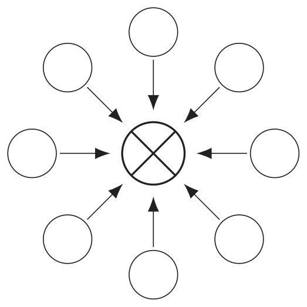
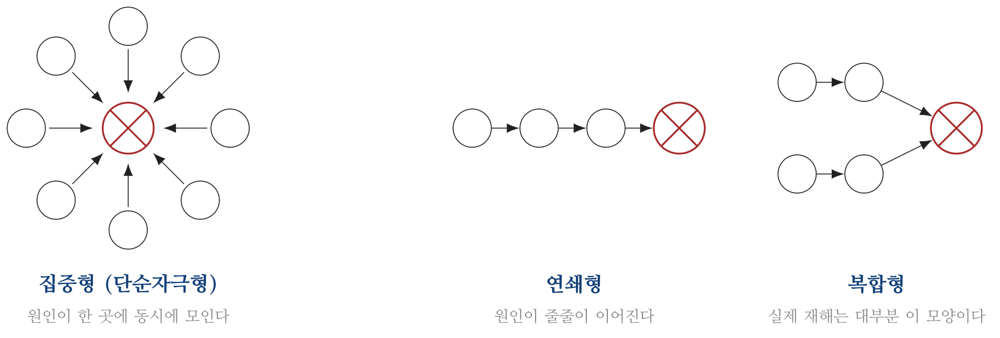
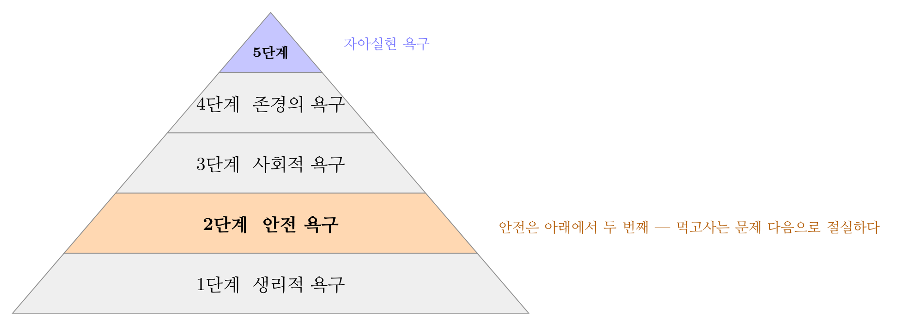
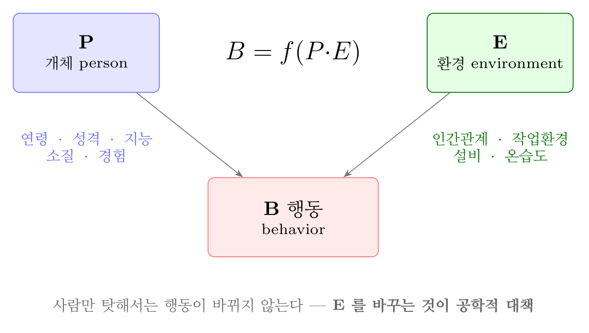
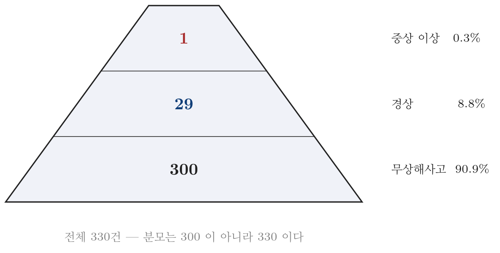
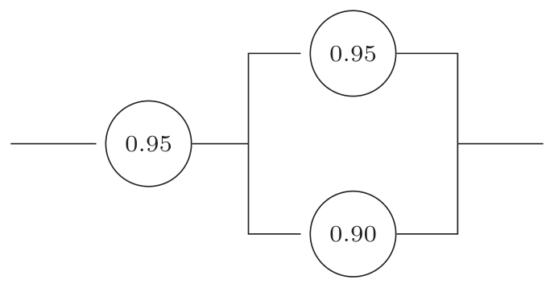
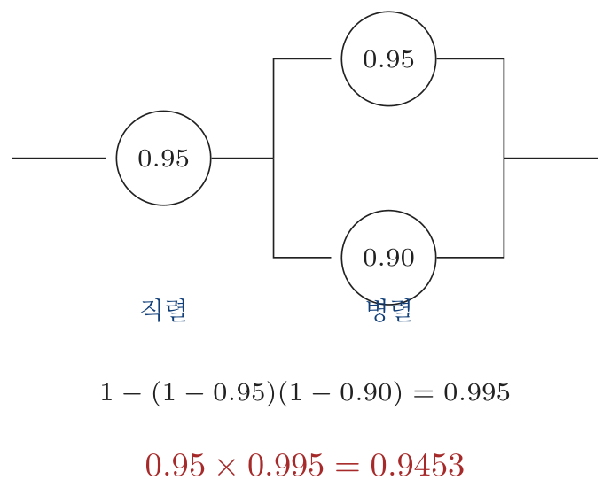

2026년 3회 · 산업안전기사 필기 CBT 기출 재배열 전사 검수본
지면(PDF)과 대조 검수용 · 수식은 KaTeX 렌더 · 총 문항
제1과목 안전관리론
001빈출도 ★☆☆난이도 1·쉬움개념형safe_A_2026_03_001
교육훈련기법 중 Off.J.T(Off the Job Training)의 장점이 아닌 것은?
① 업무의 계속성이 유지된다.
② 외부의 전문가를 강사로 활용할 수 있다.
③ 특별교재, 시설을 유효하게 사용할 수 있다.
④ 다수의 대상자에게 조직적 훈련이 가능하다.
정답: 1
해설
업무의 계속성 유지는 O.J.T의 장점이다. Off.J.T는 일터를 떠나 따로 모여 배우므로 그동안 일이 끊긴다.
O.J.T와 Off.J.T
| O.J.T | Off.J.T |
|---|
| 어디서 | 일하는 자리에서 | 일터를 떠나 한자리에 |
| 누가 가르치나 | 직속 상사 | 외부 전문가 |
| 인원 | 개별 · 소수 | 다수 동시 |
| 맞춤 | 개인에 맞출 수 있다 | 일률적 |
| 업무 | 끊기지 않는다 | 끊긴다 |
| 시설·교재 | 제한적 | 전문 시설을 쓴다 |
오답 분석
② 외부 전문가를 강사로 쓰는 것은 Off.J.T의 장점이다.
③ 특별교재와 시설을 쓸 수 있는 것도 Off.J.T다.
④ 다수에게 조직적으로 가르치는 것도 Off.J.T다.
관련 개념 · 암기
O.J.T(직장 내 교육)와 Off.J.T(직장 외 교육)가르는 기준은
일을 하면서 배우는가다. 일하며 배우면 개별 지도와 업무 지속이 되고, 떠나서 배우면 전문 강사와 시설을 쓸 수 있다.
◈ 암기 O.J.T는 개별·계속, Off.J.T는 다수·전문.
🃏 관련 암기카드
분류: 안전보건교육 > 교육 이론 > OJT와 Off JT · 원본 2021.03.07
002빈출도 ★★☆난이도 1·쉬움개념형safe_A_2026_03_002
라인(Line)형 안전관리 조직의 특징으로 옳은 것은?
① 안전에 관한 기술의 축적이 용이하다.
② 안전에 관한 지시나 조치가 신속하다
③ 조직원 전원을 자율적으로 안전활동에 참여 시킬 수 있다.
④ 권한 다툼이나 조정 때문에 통제수속이 복잡해지며, 시간과 노력이 소모된다.
정답: 2
해설
라인형은 명령이 생산 계통을 그대로 타고 내려가 지시와 조치가 빠르다. 100명 미만 소규모에 알맞다.
안전관리 조직의 세 갈래
| 형태 | 규모 | 장점 | 단점 |
|---|
| 라인형 | 100명 미만 | 지시가 빠르다 · 조직이 단순 | 안전 지식과 기술이 쌓이지 않는다 |
| 스태프형 | 100~1,000명 | 전문 지식과 기술이 쌓인다 | 생산과 겉돈다 · 실행력이 약하다 |
| 라인·스태프형 | 1,000명 이상 | 둘의 장점을 함께 | 권한 다툼과 조정에 시간이 든다 |

안전관리 조직 세 갈래 — 규모가 커질수록 참모가 붙는다
오답 분석
① 기술 축적은 스태프형의 장점이다.
③ 전원 자율 참여는 라인·스태프형이 지향하는 바다.
④ 권한 다툼과 복잡한 통제수속은 라인·스태프형의 단점이다.
관련 개념 · 암기
안전관리 조직의 유형라인형은
생산선이 곧 안전선이라 빠르지만, 안전 전문가가 없어 기술이 쌓이지 않는다. 이 약점을 메우려고 참모(스태프)를 붙인 것이 라인·스태프형이다.
◈ 암기 라인은 빠르고, 스태프는 전문적이고, 둘을 합치면 복잡하다.
🃏 관련 암기카드
분류: 안전보건관리 체제 > 안전조직 > 안전관리 조직 · 원본 2017.03.05 · 2020.09.26
003빈출도 ★★☆난이도 1·쉬움개념형safe_A_2026_03_003
안전교육방법 중 구안법(Project Method)의 4단계의 순서로 옳은 것은?
① 계획수립 → 목적결정 → 활동 → 평가
② 평가 → 계획수립 → 목적결정 → 활동
③ 목적결정 → 계획수립 → 활동 → 평가
④ 활동 → 계획수립 → 목적결정 → 평가
정답: 3
해설
목적결정 → 계획수립 → 활동 → 평가다. 무엇을 할지 정하고, 어떻게 할지 짜고, 해 보고, 돌아본다.
오답 분석
① 계획이 목적보다 앞설 수 없다.
② 평가는 마지막이다.
④ 활동이 첫 단계일 수 없다.
관련 개념 · 암기
구안법(Project Method)구안법은
학습자가 스스로 목표를 세우고 실행하는 방법이다. 강사가 정해 주는 강의식과 정반대 자리에 있다.
◈ 암기 목 · 계 · 활 · 평 — 목적 결정, 계획 수립, 활동, 평가.
🃏 관련 암기카드
분류: — > — > 구안법 · 원본 2017.08.26 · 2020.09.26
004빈출도 ★★☆난이도 1·쉬움개념형safe_A_2026_03_004
재해의 발생형태 중 다음 그림이 나타내는 것은?

① 단순연쇄형
② 복합연쇄형
③ 단순자극형
④ 복합형
정답: 3
해설
여러 원인이 한 지점에 동시에 모여 재해가 터지는 모양이면 단순자극형(집중형)이다. 원인들이 줄줄이 이어지면 연쇄형이다.

재해 발생형태 — 모이면 집중형, 이어지면 연쇄형
오답 분석
① 단순연쇄형은 원인이 한 줄로 이어진다.
② 복합연쇄형은 여러 줄의 연쇄가 얽힌다.
④ 복합형은 집중형과 연쇄형이 섞인 모양이다.
관련 개념 · 암기
재해 발생형태의 분류세 갈래 —
집중형(단순자극형) · 연쇄형 · 복합형. 실제 산업재해는 대부분
복합형이다.
◈ 암기 모이면 집중, 이어지면 연쇄, 섞이면 복합.
🃏 관련 암기카드
분류: 안전보건교육 > 교육계획·평가 > 재해 발생형태 · 원본 2018.04.28 · 2020.09.26
005빈출도 ★★☆난이도 1·쉬움개념형safe_A_2026_03_005
무재해 운동의 3원칙에 해당되지 않는 것은?
① 무의 원칙
② 참가의 원칙
③ 선취의 원칙
④ 대책선정의 원칙
정답: 4
해설
대책선정의 원칙은 하인리히 사고예방 5단계의 셋째 단계에 나오는 말이다. 무재해 운동 3원칙에는 없다.
무재해 운동의 3원칙
| 원칙 | 뜻 | 비고 |
|---|
| 무(無)의 원칙 | 재해는 0이 목표가 아니라 잠재 위험까지 없앤다 | 단순히 사고가 없는 상태가 아니다 |
| 선취(先取)의 원칙 | 사고가 나기 전에 위험을 찾아 없앤다 | 「안전제일」의 원칙 |
| 참가(參加)의 원칙 | 전원이 문제 해결에 참여 한다 | 「참여」가 아니라 「참가」 |
오답 분석
① 무의 원칙은 3원칙에 든다.
② 참가의 원칙도 3원칙이다.
③ 선취의 원칙도 3원칙이다.
관련 개념 · 암기
무재해 운동의 3원칙추진의
3기둥(3요소)은 따로 있다 —
최고경영자의 경영자세 · 관리감독자의 라인화 · 근로자의 자주활동 활성화. 3원칙과 3기둥을 섞지 않아야 한다.
◈ 암기 3원칙은 무 · 선취 · 참가.
🃏 관련 암기카드
분류: 무재해운동 > 무재해·위험예지 > 무재해 운동 · 원본 2016.05.08 · 2021.03.07
006빈출도 ★☆☆난이도 1·쉬움개념형safe_A_2026_03_006
새로 손을 얹고 팀의 행동구호를 외치는 무재해 운동 추진 기법의 하나로, 스킨십(Skinship)에 바탕을 두고 팀 전원의 일체감, 연대감을 느끼게 하며, 대뇌피질에 안전태도 형성에 좋은 이미지를 심어주는 기법은?
① Touch and call
② Brain Storming
③ Error cause removal
④ Safety training observation program
정답: 1
해설
터치 앤 콜(Touch and Call)이다. 손을 맞대고 구호를 외쳐 몸으로 안전을 새긴다.
오답 분석
② 브레인스토밍은 자유롭게 의견을 내는 회의 기법이다.
③ ECR(Error Cause Removal)은 근로자가 오류 원인을 스스로 제안하는 제도다.
④ STOP은 듀폰이 만든 관찰 중심의 안전훈련 프로그램이다.
관련 개념 · 암기
무재해 운동의 추진 기법네 가지가 함께 나온다 —
위험예지훈련 · TBM(Tool Box Meeting) · 터치 앤 콜 · 원포인트 위험예지. 이 가운데
몸을 맞대는 것은 터치 앤 콜뿐이다.
◈ 암기 손을 맞대면 터치 앤 콜.
🃏 관련 암기카드
분류: 보호구 > 호흡·눈·귀 > 무재해 운동 기법 · 원본 2019.08.04
007빈출도 ★☆☆난이도 1·쉬움개념형safe_A_2026_03_007
안전교육에 있어서 동기부여방법으로 가장 거리가 먼 것은?
① 책임감을 느끼게 한다.
② 관리감독을 철저히 한다.
③ 자기 보존본능을 자극한다.
④ 물질적 이해관계에 관심을 두도록 한다.
정답: 2
해설
관리감독은 밖에서 누르는 통제다. 동기부여는 스스로 하고 싶게 만드는 일이라 방향이 반대다.
오답 분석
① 책임감은 대표적인 내적 동기다.
③ 자기 보존본능을 자극하면 스스로 조심한다.
④ 물질적 이해관계는 외적 동기이지만 동기부여 수단이다.
관련 개념 · 암기
안전교육의 동기부여 방법여섯 가지 —
안전 목표 설정 · 결과의 지식 제공 · 경쟁과 협동 · 상벌 · 안전동기 유발 · 안전의식 부여. 어느 것도 감시나 통제가 아니다.
◈ 암기 동기부여는 안에서 밀어내는 힘, 감독은 밖에서 누르는 힘.
🃏 관련 암기카드
분류: 산업심리 > 인간의 행동 > 동기부여 · 원본 2021.08.14
008빈출도 ★☆☆난이도 2·보통개념형safe_A_2026_03_008
매슬로우(Maslow)의 욕구 5단계 이론 중 안전욕구의 단계는?
① 제1단계
② 제2단계
③ 제3단계
④ 제4단계
정답: 2
해설
안전욕구는 제2단계다. 생리적 욕구 바로 위다.

매슬로우의 욕구 5단계 — 안전은 아래에서 두 번째다
오답 분석
① 제1단계는 생리적 욕구다.
③ 제3단계는 사회적 욕구(애정과 소속)다.
④ 제4단계는 존경의 욕구다.
관련 개념 · 암기
매슬로우의 욕구단계 이론아래 단계가 채워져야 위 단계로 올라간다. 그래서
먹고사는 문제가 해결되어야 안전에 관심이 생긴다는 것이 안전관리에 주는 함의다.
◈ 암기 생 · 안 · 사 · 존 · 자 — 생리, 안전, 사회적, 존경, 자아실현.
🃏 관련 암기카드
분류: 산업심리 > 인간의 행동 > 매슬로우 욕구단계 · 원본 2021.08.14
009빈출도 ★☆☆난이도 1·쉬움개념형safe_A_2026_03_009
상황성 누발자의 재해유발원인이 아닌 것은?
① 심신의 근심
② 작업의 어려움
③ 도덕성의 결여
④ 기계설비의 결함
정답: 3
해설
도덕성 결여는 소질성 누발자의 특징이다. 상황성 누발자는 둘러싼 상황이 나빠 사고를 되풀이하는 사람이다.
재해 누발자의 네 갈래
| 갈래 | 까닭 | 특징 |
|---|
| 미숙성 누발자 | 기능이 서툴다 | 신입 · 환경에 익숙하지 않다 |
| 상황성 누발자 | 상황이 나쁘다 | 작업이 어렵다 · 기계설비 결함 · 심신의 근심 · 환경상 주의력 집중 곤란 |
| 습관성 누발자 | 경험이 남긴 습관 | 슬럼프 · 트라우마 |
| 소질성 누발자 | 타고난 소질 | 주의력 부족 · 도덕성 결여 · 감각운동 부적합 |
오답 분석
① 심신의 근심은 상황성 누발자의 원인이다.
② 작업의 어려움도 상황성이다.
④ 기계설비의 결함도 상황성이다.
관련 개념 · 암기
재해 누발자의 유형상황이 바뀌면 나아지는가로 가른다. 상황성은 상황을 고치면 낫고, 소질성은 사람 자체의 문제라 배치를 바꿔야 한다.
◈ 암기 상황성은 밖의 탓, 소질성은 안의 탓.
🃏 관련 암기카드
분류: 산업심리 > 적성·검사 > 재해 누발자 · 원본 2021.08.14
010빈출도 ★☆☆난이도 2·보통개념형safe_A_2026_03_010
근로자 1000명 이상의 대규모 사업장에 적합한 안전관리 조직의 유형은?
① 직계식 조직
② 참모식 조직
③ 병렬식 조직
④ 직계참모식 조직
정답: 4
해설
직계참모식(라인·스태프형)이다. 1,000명 이상이면 라인의 실행력과 스태프의 전문성이 둘 다 필요하다.
오답 분석
① 직계식(라인형)은 100명 미만에 알맞다.
② 참모식(스태프형)은 100~1,000명에 알맞다.
③ 「병렬식 조직」이라는 유형은 없다.
관련 개념 · 암기
사업장 규모별 안전관리 조직라인형 100명 미만 → 스태프형 100~1,000명 → 라인·스태프형 1,000명 이상 순서로 커진다.
◈ 암기 100 · 1,000을 경계로 셋.
🃏 관련 암기카드
분류: 안전보건관리 체제 > 안전조직 > 안전관리 조직 · 원본 2021.08.14
011빈출도 ★★☆난이도 2·보통개념형safe_A_2026_03_011
무재해운동 추진의 3요소에 관한 설명이 아닌 것은?
① 안전보건은 최고경영자의 무재해 및 무질병에 대한 확고한 경영자세로 시작된다.
② 안전보건을 추진하는 데에는 관리감독자들의 생산 활동 속에 안전보건을 실천하는 것이 중요하다.
③ 모든 재해는 잠재요인을 사전에 발견⸱파악⸱해결함으로써 근원적으로 산업재해를 없애야한다.
④ 안전보건은 각자 자신의 문제이며, 동시에 동료의 문제로서 직장의 팀 멤버와 협동 노력하여 자주적으로 추진하는 것이 필요하다.
정답: 3
해설
③은 선취의 원칙을 풀어 쓴 것이다. 3요소(3기둥)가 아니라 3원칙 쪽이다.
3원칙과 3요소를 가르기
| 무엇인가 | 셋 |
|---|
| 3원칙 | 무재해 운동이 지향하는 생각 | 무 · 선취 · 참가 |
| 3요소(3기둥) | 누가 무엇을 하는가 | 최고경영자의 경영자세 · 관리감독자의 라인화 · 근로자의 자주활동 활성화 |
오답 분석
① ①은 최고경영자의 경영자세 — 3요소다.
② ②는 관리감독자의 라인화 — 3요소다.
④ ④는 근로자의 자주활동 활성화 — 3요소다.
관련 개념 · 암기
무재해 운동 추진의 3기둥3요소는
사람을 말하고 3원칙은
생각을 말한다. 보기에 「누가」가 나오면 3요소, 「어떻게」가 나오면 3원칙이다.
◈ 암기 요소는 사람 셋, 원칙은 생각 셋.
🃏 관련 암기카드
분류: 안전보건관리 체제 > 선임·자격 > 무재해 운동 · 원본 2016.03.06 · 2021.05.15
012빈출도 ★☆☆난이도 2·보통공식형safe_A_2026_03_012
레윈(Lewin.K)에 의하여 제시된 인간의 행동에 관한 식을 올바르게 표현한 것은? (단, B는 인간의 행동, P는 개체, E는 환경, f는 함수관계를 의미한다.)
① B=f(PㆍE)
② B=f(P+1)E
③ P=Eㆍf(B)
④ E=f(PㆍB)
정답: 1
해설
$B = f ( P \cdot E )$다. 행동은 사람과 환경이 함께 만든 결과다.

레빈의 장 이론 — 행동은 사람과 환경의 함수다
오답 분석
② $B = f ( P + 1 ) E$라는 식은 없다.
③ 좌변은 P가 아니라 B다.
④ 좌변은 E가 아니라 B다.
관련 개념 · 암기
레빈(K. Lewin)의 장(場) 이론P 에는
소질 · 성격 · 지능 · 경험이, E 에는
인간관계 · 작업환경 · 설비가 든다. 사람만 고쳐서는 사고가 줄지 않는다는 근거가 이 식이다.
◈ 암기 $B = f ( P \cdot E )$ — 곱하기이지 더하기가 아니다.
🃏 관련 암기카드
분류: 안전보건교육 > 교육계획·평가 > 레빈의 장 이론 · 원본 2021.08.14
013빈출도 ★☆☆난이도 1·쉬움개념형safe_A_2026_03_013
교육계획 수립 시 가장 먼저 실시하여야 하는 것은?
① 교육내용의 결정
② 실행교육계획서 작성
③ 교육의 요구사항 파악
④ 교육실행을 위한 순서, 방법, 자료의 검토
정답: 3
해설
교육의 요구사항 파악이 먼저다. 무엇이 부족한지 알아야 무엇을 가르칠지 정할 수 있다.
오답 분석
① 교육내용은 요구사항을 파악한 뒤에 정한다.
② 실행계획서는 마지막에 쓴다.
④ 순서·방법·자료 검토는 내용을 정한 뒤다.
관련 개념 · 암기
안전교육계획의 수립 순서요구사항 파악 → 교육 준비 → 교육 실시 → 평가가 큰 흐름이다. 어느 계획이든
현재 상태를 아는 것에서 시작한다.
◈ 암기 무엇이 부족한지부터 안다.
🃏 관련 암기카드
분류: 안전보건교육 > 교육계획·평가 > 교육계획 · 원본 2021.08.14
014빈출도 ★★☆난이도 1·쉬움개념형safe_A_2026_03_014
다음의 교육내용과 관련 있는 교육은?
- 작업 동작 및 표준작업방법의 습관화
- 공구 · 보호구 등의 관리 및 취급태도의 확립
- 작업 전후의 점검, 검사요령의 정확화 및 습관화
① 지식교육
② 기능교육
③ 태도교육
④ 문제해결교육
정답: 3
해설
태도교육이다. 안전보호구 착용, 작업 전후 점검, 안전수칙 준수처럼 몸에 밴 습관을 만드는 것이 태도교육이다.
안전교육의 3단계
| 단계 | 무엇을 | 어떻게 |
|---|
| 제1단계 지식교육 | 알게 한다 | 강의 · 시청각 — 안전의식, 법규, 재해 사례 |
| 제2단계 기능교육 | 할 수 있게 한다 | 시범 · 실습 — 반복 훈련이 핵심 |
| 제3단계 태도교육 | 하도록 만든다 | 보호구 착용 · 점검 · 수칙 준수 — 습관화 |
오답 분석
① 지식교육은 알게 하는 단계다.
② 기능교육은 할 수 있게 하는 단계다.
④ 문제해결교육은 3단계 분류에 없다.
관련 개념 · 암기
안전교육의 3단계태도교육의 4단계는
청취 → 이해·납득 → 모범 → 평가와 권장이다.
아는 것과 하는 것은 다르다는 것이 태도교육이 따로 있는 까닭이다.
◈ 암기 알고(지식) · 할 수 있고(기능) · 하게 된다(태도).
🃏 관련 암기카드
분류: 안전보건교육 > 교육 이론 > 안전교육 3단계 · 원본 2013.06.02 · 2021.05.15
015빈출도 ★☆☆난이도 1·쉬움개념형safe_A_2026_03_015
학습자가 자신의 학습속도에 적합하도록 프로그램 자료를 가지고 단독으로 학습하도록 하는 안전교육 방법은?
① 실연법
② 모의법
③ 토의법
④ 프로그램 학습법
정답: 4
해설
프로그램 학습법이다. 짜인 자료를 혼자 제 속도로 익힌다. 학습자 수준에 맞출 수 있는 반면, 개발에 비용과 시간이 많이 든다.
오답 분석
① 실연법은 배운 것을 직접 해 보이는 방법이다.
② 모의법은 실제와 비슷한 상황을 만들어 놓고 하는 방법이다.
③ 토의법은 여럿이 의견을 나누는 방법이다.
관련 개념 · 암기
안전교육의 방법프로그램 학습법의 약점은
혼자 하므로 질문할 상대가 없고, 한번 만들면 고치기 어렵다는 점이다.
◈ 암기 혼자 제 속도로 하면 프로그램 학습법.
🃏 관련 암기카드
분류: 안전보건교육 > 학습이론 > 교육방법 · 원본 2021.05.15
016빈출도 ★☆☆난이도 1·쉬움개념형safe_A_2026_03_016
보호구 안전인증 고시상 안전인증 방독마스크의 정화통 종류와 외부 측면의 표시 색이 잘못 연결된 것은?
① 할로겐용 - 회색
② 황화수소용 - 회색
③ 암모니아용 - 회색
④ 시안화수소용 - 회색
정답: 3
해설
암모니아용은 녹색이다. 나머지 셋은 모두 회색이 맞다.
방독마스크 정화통의 표시 색
| 종류 | 색 | 비고 |
|---|
| 유기화합물용 | 갈색 | |
| 할로겐용 · 황화수소용 · 시안화수소용 | 회색 | 셋이 같은 색 |
| 아황산용 | 노란색 | |
| 암모니아용 | 녹색 | 이 문항의 답 |
| 복합용 · 겸용 | 해당 가스 모두 표시 / 백색 띠 | |
오답 분석
① 할로겐용은 회색이 맞다.
② 황화수소용도 회색이다.
④ 시안화수소용도 회색이다.
관련 개념 · 암기
보호구 안전인증 고시 — 방독마스크 정화통의 색방독마스크는
산소농도 18 [%] 이상인 곳에서만 쓴다. 산소가 모자라면
송기마스크나 공기호흡기를 써야 한다.
◈ 암기 유기 갈색 · 할·황·시 회색 · 아황산 노랑 · 암모니아 녹색.
🃏 관련 암기카드
분류: 안전점검·인증 > 안전인증·검사 > 방독마스크 · 원본 2022.03.05
017빈출도 ★☆☆난이도 2·보통개념형safe_A_2026_03_017
하인리히의 사고방지 기본원리 5단계 중 시정방법의 선정 단계에 있어서 필요한 조치가 아닌 것은?
① 인사조정
② 안전행정의 개선
③ 교육 및 훈련의 개선
④ 안전점검 및 사고조사
정답: 4
해설
안전점검 및 사고조사는 제2단계 사실의 발견에 든다. 시정방법 선정은 제4단계다.
하인리히의 사고예방 5단계
| 단계 | 이름 | 무엇을 하나 |
|---|
| 1 | 안전관리 조직 | 조직 편성 · 방침 수립 |
| 2 | 사실의 발견 | 안전점검 · 사고조사 · 자료 수집 |
| 3 | 분석·평가 | 원인 규명 |
| 4 | 시정방법의 선정 | 기술 개선 · 인사조정 · 교육훈련 개선 · 안전행정 개선 · 규정 준수의 감독 |
| 5 | 시정책의 적용 | 3E 적용 |
오답 분석
① 인사조정은 4단계에 든다.
② 안전행정의 개선도 4단계다.
③ 교육 및 훈련의 개선도 4단계다.
관련 개념 · 암기
하인리히의 사고예방 기본원리 5단계제5단계에서 적용하는
3E는
Engineering(기술) · Education(교육) · Enforcement(규제)다.
◈ 암기 조 · 사 · 분 · 시 · 적 — 조직, 사실 발견, 분석, 시정방법 선정, 적용.
🃏 관련 암기카드
분류: 재해조사 및 분석 > 재해 발생 이론 > 사고예방 5단계 · 원본 2021.05.15
018빈출도 ★☆☆난이도 3·어려움계산형safe_A_2026_03_018
하인리히의 재해구성비율 「1:29:300」에서 「29」에 해당되는 사고발생비율은?
① 8.8%
② 9.8%
③ 10.8%
④ 11.8%
정답: 1
해설
전체는 $1 + 29 + 300 = 330$ 건이다. $29 / 330 \times 100 \fallingdotseq 8.8$ [%]다.

하인리히 1 : 29 : 300 — 큰 사고 하나 밑에 300건의 아차사고가 있다
오답 분석
② 9.8 [%]는 분모를 잘못 잡았을 때 나온다.
③ 10.8 [%] 도 맞지 않는다.
④ 11.8 [%] 도 맞지 않는다.
관련 개념 · 암기
하인리히의 1 : 29 : 300 법칙중상 1 · 경상 29 · 무상해사고 300이다. 버드는
1 : 10 : 30 : 600으로
물적 손실만 있는 사고 30을 따로 세웠다.
◈ 암기 330이 분모 — 1은 0.3 [%], 29는 8.8 [%], 300은 90.9 [%].
🃏 관련 암기카드
분류: 재해조사 및 분석 > 재해 손실비 > 재해구성비율 · 원본 2021.03.07
019빈출도 ★☆☆난이도 3·어려움계산형safe_A_2026_03_019
재해로 인한 직접비용으로 8000만원의 산재보상비가 지급되었을 때, 하인리히 방식에 따른 총 손실비용은?
① 16000만원
② 24000만원
③ 32000만원
④ 40000만원
정답: 4
해설
하인리히는 직접비 : 간접비 = 1 : 4로 보았다. 총 손실은 직접비의 5배이므로 $8 {,} 000 \times 5 = 40 {,} 000$ 만원이다.
오답 분석
① 16,000만원은 2배로 계산한 값이다.
② 24,000만원은 3배다.
③ 32,000만원은 4배 — 간접비만 구한 값이다.
관련 개념 · 암기
하인리히의 재해손실비 평가방식총 손실 = 직접비 + 간접비 = 직접비 × 5다.
4배는 간접비, 5배가 총액이라는 점이 갈림길이다. 시몬즈 방식은
보험비 + 비보험비× 계수로 따로 계산한다.
◈ 암기 직접비의 5배가 총액.
🃏 관련 암기카드
분류: 재해조사 및 분석 > 재해 손실비 > 재해손실비용 · 원본 2021.03.07
020빈출도 ★☆☆난이도 1·쉬움개념형safe_A_2026_03_020
재해조사의 목적과 가장 거리가 먼 것은?
① 재해예방 자료수집
② 재해관련 책임자 문책
③ 동종 및 유사재해 재발방지
④ 재해발생 원인 및 결함 규명
정답: 2
해설
책임자 문책은 재해조사의 목적이 아니다. 책임을 묻는 자리가 되면 사실을 숨기게 되어 조사 자체가 무너진다.
오답 분석
① 재해예방 자료 수집은 조사의 목적이다.
③ 동종·유사재해 재발방지도 목적이다.
④ 원인과 결함 규명도 목적이다.
관련 개념 · 암기
재해조사의 목적조사할 때는
사실을 있는 그대로 · 신속하게 · 여러 사람이 · 책임 추궁보다 원인 규명을 앞세워한다. 이 넷이 재해조사의 원칙이다.
◈ 암기 원인을 묻지 사람을 묻지 않는다.
🃏 관련 암기카드
분류: 재해조사 및 분석 > 재해조사·통계 > 재해조사 · 원본 2021.03.07
제2과목 인간공학 및 시스템안전공학
021빈출도 ★☆☆난이도 1·쉬움개념형safe_A_2026_03_021
불필요한 작업을 수행함으로써 발생하는 오류로 옳은 것은?
① Command error
② Extraneous error
③ Secondary error
④ Commission error
정답: 2
해설
과잉행동 오류(Extraneous error)다. 하지 않아도 될 일을 해서 생긴 오류다.
스웨인의 휴먼에러 — 행위로 나눈 분류
| 이름 | 우리말 | 무엇인가 |
|---|
| Omission error | 생략 오류 | 해야 할 일을 빠뜨렸다 |
| Commission error | 작위 오류 | 했지만 잘못했다 |
| Extraneous error | 과잉행동 오류 | 하지 않아도 될 일을 했다 |
| Sequential error | 순서 오류 | 순서를 뒤바꿨다 |
| Timing error | 시간 오류 | 너무 빠르거나 늦었다 |
오답 분석
① Command error는 필요한 정보나 지시가 없어 생기는 오류다.
③ Secondary error는 다른 오류에서 파생된 2차 오류다.
④ Commission error는 하기는 했으나 잘못한 오류다.
관련 개념 · 암기
스웨인(Swain)의 휴먼에러 분류다섯 가지를
안 했다 · 잘못했다 · 괜히 했다 · 순서를 바꿨다 · 때를 놓쳤다로 새기면 보기만 보고 고를 수 있다.
◈ 암기 생략 · 작위 · 과잉 · 순서 · 시간.
🃏 관련 암기카드
분류: 결함수분석 > FTA 기호·구조 > 휴먼에러 분류 · 원본 2021.03.07
022빈출도 ★☆☆난이도 2·보통공식형safe_A_2026_03_022
결함수분석의 기호 중 입력사상이 어느 하나라도 발생할 경우 출력사상이 발생하는 것은?
① NOR GATE
② AND GATE
③ OR GATE
④ NAND GATE
정답: 3
해설
OR 게이트다. 입력 가운데 하나만 일어나도 출력이 일어난다. 모두 일어나야 하는 것은 AND 게이트다.

FTA 논리 게이트 — 값을 뒤집는 것은 부정 게이트뿐이다
오답 분석
① NOR은 OR의 결과를 뒤집는다.
② AND는 입력이 모두 일어나야 출력이 난다.
④ NAND는 AND의 결과를 뒤집는다.
관련 개념 · 암기
FTA의 논리 게이트확률로 보면
OR은 더하고($1 - \prod ( 1 - q_{i} )$
), AND는 곱한다($\prod q_{i}$
). 그래서
AND로 묶인 구조가 훨씬 안전하다.
◈ 암기 하나만 나도 OR, 다 나야 AND.
🃏 관련 암기카드
분류: 결함수분석 > FTA 기호·구조 > FTA 논리기호 · 원본 2020.09.26
023빈출도 ★☆☆난이도 1·쉬움개념형safe_A_2026_03_023
가스밸브를 잠그는 것을 잊어 사고가 발생했다면 작업자는 어떤 인적오류를 범한 것인가?
① 생략 오류(omission error)
② 시간지연 오류(time error)
③ 순서 오류(sequential error)
④ 작위적 오류(commission error)
정답: 1
해설
잠그는 일 자체를 하지 않았으므로 생략 오류다. 잠그기는 했는데 덜 잠갔다면 작위 오류가 된다.
오답 분석
② 시간지연 오류는 늦게 했을 때다.
③ 순서 오류는 순서를 뒤바꿨을 때다.
④ 작위 오류는 하기는 했으나 잘못했을 때다.
관련 개념 · 암기
생략 오류(omission error)아예 안 했는가, 했는데 틀렸는가를 먼저 가른다. 이 한 번의 물음으로 다섯 갈래 가운데 둘이 걸러진다.
◈ 암기 깜빡 잊었으면 생략.
🃏 관련 암기카드
분류: 결함수분석 > FTA 기호·구조 > 휴먼에러 분류 · 원본 2020.09.26
024빈출도 ★★☆난이도 1·쉬움개념형safe_A_2026_03_024
두 가지 상태 중 하나가 고장 또는 결함으로 나타나는 비정상적인 사건은?
① 톱사상
② 결함사상
③ 정상적인 사상
④ 기본적인 사상
정답: 2
해설
결함사상이다. 사각형으로 그리며 고장이냐 정상이냐 두 상태 가운데 고장 쪽을 가리킨다.
FTA의 사상 기호
| 이름 | 기호 | 무엇인가 |
|---|
| 결함사상 | 사각형 | 두 상태 가운데 고장 쪽 — 개별 결함 |
| 기본사상 | 원 | 더 이상 나눌 수 없는 맨 밑의 원인 |
| 통상사상 | 집 모양 | 정상 운전 중에도 늘 일어나는 사상 |
| 생략사상 | 마름모 | 정보가 없어 더 전개하지 않는 사상 |
| 전이기호 | 삼각형 | 다른 곳으로 이어짐 |
오답 분석
① 톱사상은 FT 도의 맨 위 정상사상이다.
③ 「정상적인 사상」이라는 기호는 없다.
④ 기본사상은 더 이상 나눌 수 없는 맨 밑의 원인이다.
관련 개념 · 암기
FTA의 사상 기호네모는 결함, 동그라미는 기본 이라고 새긴다. 도면을 그릴 때 맨 위 톱사상도 사각형으로 그린다.
◈ 암기 결함은 네모, 기본은 원, 생략은 마름모.
🃏 관련 암기카드
분류: — > — > FTA 사상 · 원본 2016.08.21 · 2021.05.15
025빈출도 ★★☆난이도 1·쉬움개념형safe_A_2026_03_025
의도는 올바른 것이었지만, 행동이 의도한 것과는 다르게 나타나는 오류는?
① Slip
② Mistake
③ Lapse
④ Violation
정답: 1
해설
Slip(실수)다. 하려던 것은 맞는데 손이 다르게 움직인 경우다.
라스무센·리즌의 오류 분류
| 이름 | 무엇이 잘못됐나 | 보기 |
|---|
| Slip | 의도는 옳고 행동이 어긋남 | 오른쪽 버튼을 누르려다 왼쪽을 눌렀다 |
| Lapse | 기억이 빠짐 | 해야 할 단계를 잊었다 |
| Mistake | 의도 자체가 틀림 | 잘못 판단해 잘못된 조작을 계획했다 |
| Violation | 알면서 어김 | 귀찮아서 안전장치를 껐다 |
오답 분석
② Mistake는 의도 자체가 잘못된 경우다.
③ Lapse는 기억이 빠져 단계를 건너뛴 경우다.
④ Violation은 알면서 규칙을 어긴 경우다.
관련 개념 · 암기
라스무센(Rasmussen)과 리즌(Reason)의 오류 분류Slip과 Lapse는 계획이 옳고 실행이 어긋난 것,
Mistake는 계획 자체가 틀린 것,
Violation은 고의다. 앞의 셋은 교육과 설계로, 마지막은 관리로 다룬다.
◈ 암기 의도가 맞으면 Slip, 의도가 틀리면 Mistake.
🃏 관련 암기카드
분류: — > — > 라스무센 오류 분류 · 원본 2019.03.03 · 2021.05.15
026빈출도 ★☆☆난이도 1·쉬움개념형safe_A_2026_03_026
인간공학 연구방법 중 실제의 제품이나 시스템이 추구하는 특성 및 수준이 달성되는지를 비교하고 분석하는 연구는?
① 조사연구
② 실험연구
③ 분석연구
④ 평가연구
정답: 4
해설
평가연구다. 목표한 수준에 이르렀는지 실제 제품을 놓고 견주어 본다.
오답 분석
① 조사연구는 설문·관찰로 현황을 알아보는 방법이다.
② 실험연구는 변수를 통제해 인과관계를 밝히는 방법이다.
③ 분석연구는 이미 있는 자료를 파고드는 방법이다.
관련 개념 · 암기
인간공학의 연구방법연구에 쓰는
기준(criteria)의 요건은 넷이다 —
적절성 · 무오염성 · 기준척도의 신뢰성 · 민감도.
◈ 암기 목표에 닿았는지 재면 평가연구.
🃏 관련 암기카드
분류: — > — > 인간공학 연구방법 · 원본 2021.05.15
027빈출도 ★☆☆난이도 2·보통개념형safe_A_2026_03_027
인간-기계시스템 설계과정 중 직무분석을 하는 단계는?
① 제1단계 : 시스템의 목표와 성능명세 결정
② 제2단계 : 시스템의 정의
③ 제3단계 : 기본 설계
④ 제4단계 : 인터페이스 설계
정답: 3
해설
직무분석은 제3단계 기본 설계에서 한다. 기능을 사람과 기계에 나눠 주고 나면 사람이 맡을 일이 무엇인지 따져야 하기 때문이다.
인간-기계 시스템의 설계 6단계
| 단계 | 이름 | 무엇을 하나 |
|---|
| 1 | 목표와 성능명세 결정 | 무엇을 이룰 것인가 |
| 2 | 시스템의 정의 | 목표를 이루려면 어떤 기능이 필요한가 |
| 3 | 기본 설계 | 기능 할당 · 인간 성능 요건 명세 · 직무분석 · 작업 설계 |
| 4 | 인터페이스 설계 | 표시장치와 조종장치 |
| 5 | 촉진물 설계 | 지침서 · 매뉴얼 · 훈련 도구 |
| 6 | 시험 및 평가 | 실제로 되는지 확인 |
오답 분석
① 제1단계는 목표와 성능명세를 정하는 단계다.
② 제2단계는 필요한 기능을 정의하는 단계다.
④ 제4단계는 표시장치와 조종장치를 설계하는 단계다.
관련 개념 · 암기
인간-기계 시스템의 설계 6단계제3단계 기본 설계에 드는 것이 넷이다 —
기능의 할당 · 인간 성능 요건 명세 · 직무분석 · 작업 설계. 이 넷이 통째로 문제에 나온다.
◈ 암기 직무분석은 3단계.
🃏 관련 암기카드
분류: 정보입력표시 > 표시장치·조종장치 > 인간-기계 시스템 설계 · 원본 2021.05.15
028빈출도 ★☆☆난이도 1·쉬움개념형safe_A_2026_03_028
위험분석기법 중 고장이 시스템의 손실과 인명의 사상에 연결되는 높은 위험도를 가진 요소나 고장의 형태에 따른 분석법은?
정답: 1
해설
치명도 분석(CA, Criticality Analysis)이다. 얼마나 치명적인가로 고장을 줄 세운다. FMEA와 짝을 지어 FMECA로 쓴다.
주요 위험분석 기법
| 기법 | 이름 | 무엇을 보나 |
|---|
| PHA | 예비위험분석 | 맨 처음 개략적으로 위험을 훑는다 |
| FHA | 결함위험분석 | 분담 제작하는 부분 시스템 사이의 위험 |
| FMEA | 고장형태와 영향분석 | 고장이 어떤 영향을 미치나 — 정성적 |
| CA | 치명도 분석 | 얼마나 치명적인가 — 정량적 |
| ETA | 사건수 분석 | 초기 사건 뒤 무슨 일이 이어지나 |
| FTA | 결함수 분석 | 결과에서 원인으로 거슬러 올라간다 |
오답 분석
② ETA는 초기 사건 뒤의 전개를 따라가는 기법이다.
③ FHA는 분담 제작하는 부분 시스템 사이의 위험을 보는 기법이다.
④ FTA는 결과에서 원인으로 거슬러 올라가는 기법이다.
관련 개념 · 암기
치명도 분석(CA)FMEA는 「어떤 영향」, CA는 「얼마나 치명적」이다. 둘을 합친 FMECA가 실무에서 쓰인다.
◈ 암기 치명도를 재면 CA.
🃏 관련 암기카드
분류: 시스템 위험분석 > PHA·FHA·FMEA > 시스템 위험분석 · 원본 2021.05.15
029빈출도 ★☆☆난이도 2·보통개념형safe_A_2026_03_029
서브시스템, 구성요소, 기능 등의 잠재적 고장 형태에 따른 시스템의 위험을 파악하는 위험 분석 기법으로 옳은 것은?
① ETA(Event Tree Analysis)
② HEA(Human Error Analysis)
③ PHA(Preliminary Hazard Analysis)
④ FMEA(Failure Mode and Effect Analysis)
정답: 4
해설
FMEA다. 고장 형태(Failure Mode)라는 말이 나오면 FMEA로 보면 된다.
오답 분석
① ETA는 초기 사건에서 결과로 따라 내려가는 기법이다.
② HEA는 인간의 오류를 분석하는 기법이다.
③ PHA는 설계 초기에 개략적으로 위험을 훑는 기법이다.
관련 개념 · 암기
FMEA(고장형태와 영향분석)FMEA는
귀납적이고 정성적이며
밑에서 위로 올라간다. FTA는
연역적이고 정량적이며
위에서 아래로 내려간다. 방향이 정반대다.
◈ 암기 「고장 형태」가 나오면 FMEA.
🃏 관련 암기카드
분류: 시스템 위험분석 > PHA·FHA·FMEA > 시스템 위험분석 · 원본 2021.03.07
030빈출도 ★☆☆난이도 3·어려움계산형safe_A_2026_03_030
실린더 블록에 사용하는 가스켓의 수명 분포는 X~N(10000, 2002)인 정규분포를 따른다. t=9600시간일 경우에 신뢰도(R(t))는? (단, P(Z≤1)=0.8413, P(Z≤1.5)=0.9332, P(Z≤2)=0.9772, P(Z≤3)=0.9987이다.)
① 84.13%
② 93.32%
③ 97.72%
④ 99.87%
정답: 3
해설
평균 10,000, 표준편차 200이다. $Z = ( 9 {,} 600 - 10 {,} 000 ) / 200 =-2$다. 9,600시간을 넘겨 살아 있을 확률이므로 $R = P ( Z > - 2 ) = P ( Z \le 2 ) = 0.9772$다.
오답 분석
① 84.13 [%]는 $Z =-1$일 때다.
② 93.32 [%]는 $Z =-1.5$일 때다.
④ 99.87 [%]는 $Z =-3$일 때다.
관련 개념 · 암기
정규분포를 따르는 수명의 신뢰도신뢰도는
그 시각까지 고장 나지 않을 확률이다. $Z$가 음수로 나오면
정규분포가 좌우대칭이므로 부호를 떼고 표를 그대로 읽으면 된다.
◈ 암기 $Z = ( t - \mu ) / \sigma$ — 음수면 대칭으로 뒤집는다.
🃏 관련 암기카드
분류: 신뢰성 > 신뢰도 계산 > 신뢰도와 정규분포 · 원본 2020.09.26
031빈출도 ★☆☆난이도 3·어려움계산형safe_A_2026_03_031
각 부품의 신뢰도가 다음과 같을 때 시스템의 전체 신뢰도는 약 얼마인가?

① 0.8123
② 0.9453
③ 0.9553
④ 0.9953
정답: 2
해설
0.95 짜리 하나가 앞에 직렬로 있고, 그 뒤에 0.95와 0.90이 병렬로 붙어 있다. 병렬은 $1 - ( 1 - 0.95 ) ( 1 - 0.90 ) = 0.995$이고, 전체는 $0.95 \times 0.995 \fallingdotseq 0.9453$이다.

직렬 하나 뒤에 병렬 둘 — 병렬을 먼저 묶고 곱한다
오답 분석
① 0.8123은 셋을 모두 직렬로 곱했을 때에 가깝다.
③ 0.9553은 병렬 계산이 어긋난 값이다.
④ 0.9953은 직렬 부품을 빼먹고 병렬만 구한 값에 가깝다.
관련 개념 · 암기
직렬·병렬 결합 신뢰도직렬은 곱하고($\prod R_{i}$
), 병렬은 고장 확률을 곱해 1에서 뺀다($1 - \prod ( 1 - R_{i} )$
). 섞여 있으면
병렬 덩어리를 먼저 하나로 묶은 뒤 직렬로 곱한다.
◈ 암기 병렬 먼저 묶고, 그다음 곱한다.
🃏 관련 암기카드
분류: 신뢰성 > 신뢰도 계산 > 직병렬 신뢰도 · 원본 2020.06.06
032빈출도 ★☆☆난이도 3·어려움계산형safe_A_2026_03_032
중량물 들기 작업 시 5분간의 산소소비량을 측정한 결과 90L의 배기량 중에 산소가 16%, 이산화탄소가 4%로 분석되었다. 해당 작업에 대한 산소소비량(L/min)은 약 얼마인가? (단, 공기 중 질소는 79vol%, 산소는 21vol%이다.)
① 0.948
② 1.948
③ 4.74
④ 5.74
정답: 1
해설
배기량은 $90 / 5 = 18$ [L/min]이다. 질소는 몸에 쓰이지 않으므로 그 양으로 흡기량을 되돌린다. 배기 질소는 $100 - 16 - 4 = 80$ [%]이므로 $V_{1} = 18 \times 0.80 / 0.79 = 18.228$ [L/min]이다. 산소소비량은 $18.228 \times 0.21 - 18 \times 0.16 = 3.828 - 2.88 \fallingdotseq 0.948$ [L/min]이다.
오답 분석
② 1.948은 흡기량 보정을 빼먹었을 때에 가깝다.
③ 4.74는 5로 나누지 않았을 때 나온다.
④ 5.74 도 자릿수가 어긋난다.
관련 개념 · 암기
산소소비량의 계산핵심은
질소는 소비되지도 생성되지도 않는다는 점이다. 그래서
질소량이 같다는 조건으로 흡기량을 되찾는다. 산소소비량 1 [L]은 약
5 [kcal]의 에너지에 해당한다.
◈ 암기 질소로 흡기량을 되찾는다 — $V_{1} = V_{2} \times N_{2} / 79$.
🃏 관련 암기카드
분류: 인간계측·작업공간 > 작업공간·자세 > 산소소비량 · 원본 2021.05.15
033빈출도 ★☆☆난이도 1·쉬움개념형safe_A_2026_03_033
인체측정 자료를 장비, 설비 등의 설계에 적용하기 위한 응용원칙에 해당하지 않는 것은?
① 조절식 설계
② 극단치를 이용한 설계
③ 구조적 치수 기준의 설계
④ 평균치를 기준으로 한 설계
정답: 3
해설
구조적 치수는 인체를 재는 방법을 가리키는 말이지 설계 원칙이 아니다. 응용원칙은 조절식 · 극단치 · 평균치 셋뿐이다.
인체계측 자료의 응용원칙
| 원칙 | 언제 쓰나 | 보기 |
|---|
| ① 조절식 설계 | 가장 먼저 고려 — 조절할 수 있으면 조절한다 | 의자 높이 · 자동차 시트 — 5 ~ 95 백분위수 |
| ② 극단치 설계 | 조절이 어려울 때 | 최대치 — 출입문 · 통로 (95 백분위수) |
| 최소치 — 선반 높이 · 조종장치 거리 (5 백분위수) |
| ③ 평균치 설계 | 마지막 수단 | 은행 창구 · 공공장소 의자 |
오답 분석
① 조절식 설계는 응용원칙에 든다.
② 극단치 설계도 응용원칙이다.
④ 평균치 설계도 응용원칙이다.
관련 개념 · 암기
인체계측 자료의 응용원칙순서가 정해져 있다 —
조절식이 먼저, 극단치가 다음, 평균치가 마지막이다. 평균치 설계는
평균에 딱 맞는 사람이 실제로는 거의 없어 가장 나중에 고려한다.
◈ 암기 조절 → 극단 → 평균 순서.
🃏 관련 암기카드
분류: 인간계측·작업공간 > 인체계측 > 인체계측 응용원칙 · 원본 2021.03.07
034빈출도 ★☆☆난이도 1·쉬움개념형safe_A_2026_03_034
실효 온도(effective temperature)에 영향을 주는 요인이 아닌 것은?
정답: 3
해설
실효온도는 온도 · 습도 · 공기 유동 세 가지로 정해진다. 복사열은 들어가지 않는다. 복사열까지 넣은 것은 수정 실효온도(CET)다.
오답 분석
① 온도는 실효온도의 요인이다.
② 습도도 요인이다.
④ 공기 유동도 요인이다.
관련 개념 · 암기
실효온도(감각온도)실효온도는 셋, 수정 실효온도는 넷이다. 옥외 작업의 WBGT에 건구온도가 들어가는 것과 같은 이치로,
햇볕(복사열)이 있으면 항목이 하나 늘어난다.
◈ 암기 실효온도에 복사열은 없다.
🃏 관련 암기카드
분류: 작업환경관리 > 열교환·실효온도 > 실효온도 · 원본 2021.05.15
035빈출도 ★☆☆난이도 1·쉬움개념형safe_A_2026_03_035
작업면상의 필요한 장소만 높은 조도를 취하는 조명은?
① 완화조명
② 전반조명
③ 투명조명
④ 국소조명
정답: 4
해설
국소조명이다. 필요한 자리만 밝게 한다. 정밀 작업에 쓴다.
오답 분석
① 완화조명은 밝기 차이를 부드럽게 잇는 조명이다.
② 전반조명은 작업장 전체를 고르게 밝히는 조명이다.
③ 「투명조명」이라는 용어는 없다.
관련 개념 · 암기
조명 방식의 분류국소조명만 쓰면 주변이 어두워
눈이 자꾸 명순응·암순응을 되풀이하며 피로해진다. 그래서 실무에서는
전반조명과 국소조명을 함께 쓰고,
국소 : 전반 = 10 : 1을 넘지 않게 한다.
◈ 암기 필요한 곳만 밝히면 국소조명.
🃏 관련 암기카드
분류: 정보입력표시 > 시각 > 조명 · 원본 2021.03.07
036빈출도 ★☆☆난이도 1·쉬움개념형safe_A_2026_03_036
시각적 표시장치보다 청각적 표시장치를 사용하는 것이 더 유리한 경우는?
① 정보의 내용이 복잡하고 긴 경우
② 정보가 공간적인 위치를 다룬 경우
③ 직무상 수신자가 한 곳에 머무르는 경우
④ 수신 장소가 너무 밝거나 암순응이 요구될 경우
정답: 4
해설
너무 밝거나 암순응이 필요한 곳에서는 눈을 쓰기 어렵다. 이때는 귀로 알리는 편이 낫다.
청각과 시각, 어느 쪽이 유리한가
| 상황 | 청각 | 시각 |
|---|
| 메시지가 짧고 간단하다 | ○ | |
| 메시지가 길고 복잡하다 | | ○ |
| 즉각 반응이 필요하다 | ○ | |
| 나중에 다시 참조한다 | | ○ |
| 공간적 위치를 다룬다 | | ○ |
| 시간의 흐름을 다룬다 | ○ | |
| 수신자가 돌아다닌다 | ○ | |
| 수신 장소가 너무 시끄럽다 | | ○ |
| 너무 밝거나 암순응이 필요하다 | ○ | |
오답 분석
① 내용이 복잡하고 길면 시각이 낫다.
② 공간적 위치는 시각이 낫다.
③ 한곳에 머무르면 시각이 낫다.
관련 개념 · 암기
청각적 표시장치와 시각적 표시장치의 선택한 줄로 새기면
귀는 짧고 급한 것, 눈은 길고 복잡한 것이다. 귀는
감각기관 가운데 반응이 가장 빠르다.
◈ 암기 짧고 급하면 귀, 길고 복잡하면 눈.
🃏 관련 암기카드
분류: 정보입력표시 > 시각 > 표시장치 선택 · 원본 2021.03.07
037빈출도 ★★☆난이도 3·어려움계산형safe_A_2026_03_037
어떤 소리가 1000Hz, 60dB인 음과 같은 높이임에도 4배 더 크게 들린다면, 이 소리의 음압수준은 얼마인가?
① 70dB
② 80dB
③ 90dB
④ 100dB
정답: 2
해설
1,000 [Hz] 에서는 dB = phon이다. $\mathrm{sone} = 2^{( \mathrm{phon} - 40 ) / 10}$이므로 60 [phon]은 $2^{2} = 4$ [sone]이다. 4배면 16 [sone]이고, $16 = 2^{4}$이므로 $\mathrm{phon} = 40 + 40 = 80$이다.
오답 분석
① 70 [dB]는 8 [sone]으로 2배다.
③ 90 [dB]는 32 [sone]으로 8배다.
④ 100 [dB]는 64 [sone]으로 16배다.
관련 개념 · 암기
phon과 sone10 [phon]이 오를 때마다 sone은 두 배가 된다. 「몇 배 크게 들린다」는 문제는 반드시
sone으로 옮겨 풀어야 한다.
◈ 암기 10 phon 오르면 크기는 2배.
🃏 관련 암기카드
분류: 정보입력표시 > 청각·경보 > sone 과 phon · 원본 2018.04.28 · 2020.09.26
038빈출도 ★☆☆난이도 3·어려움계산형safe_A_2026_03_038
어느부품 1000개를 100000시간 동안 가동 하였을 때 5개의 불량품이 발생하였을 경우 평균 동작시간(MTTF)은?
① 1 × 106 시간
② 2 × 107 시간
③ 1 × 108 시간
④ 2 × 109 시간
정답: 2
해설
총 가동시간은 $1 {,} 000 \times 100 {,} 000 = 10^{8}$ 시간이다. 고장이 5개이므로 $\mathrm{MTTF} = 10^{8} / 5 = 2 \times 10^{7}$ 시간이다.

MTBF · MTTF · MTTR의 관계
오답 분석
① $1 \times 10^{6}$은 계산과 맞지 않는다.
③ $1 \times 10^{8}$은 고장 개수로 나누지 않은 총 가동시간이다.
④ $2 \times 10^{9}$은 자릿수가 어긋난다.
관련 개념 · 암기
MTTF(평균 고장시간)$\mathrm{MTTF} = \text{총 가동시간} \div \text{고장 개수}$이고 $\lambda = 1 / \mathrm{MTTF}$다.
MTTF는 고치지 못하는 부품,
MTBF는 고쳐 쓰는 설비에 쓴다.
◈ 암기 총 시간을 고장 수로 나눈다.
🃏 관련 암기카드
분류: 정보입력표시 > 동작·반응 법칙 > MTTF · 원본 2020.09.26
039빈출도 ★☆☆난이도 1·쉬움개념형safe_A_2026_03_039
화학설비의 안전성 평가에서 정량적 평가의 항목에 해당되지 않는 것은?
① 훈련
② 조작
③ 취급물질
④ 화학설비용량
정답: 1
해설
정량적 평가 항목은 취급물질 · 화학설비의 용량 · 온도 · 압력 · 조작 다섯이다. 훈련은 여기 없다.
화학설비 안전성 평가 6단계
| 단계 | 이름 | 무엇을 하나 |
|---|
| 1 | 관계 자료의 정비 검토 | 설계도 · 공정도 · 물질 자료 |
| 2 | 정성적 평가 | 입지 조건 · 공장 내 배치 · 건조물 · 소방설비 · 원재료 · 공정 |
| 3 | 정량적 평가 | 취급물질 · 용량 · 온도 · 압력 · 조작 — 다섯 항목을 A~D 등급으로 |
| 4 | 안전대책 수립 | 설비 대책과 관리 대책 |
| 5 | 재해정보에 의한 재평가 | 비슷한 사고 사례로 다시 본다 |
| 6 | FTA에 의한 재평가 | 가장 위험한 등급 Ⅰ·Ⅱ에 적용 |
오답 분석
② 조작은 정량적 평가 항목이다.
③ 취급물질도 정량적 평가 항목이다.
④ 화학설비용량도 정량적 평가 항목이다.
관련 개념 · 암기
화학설비의 안전성 평가정량적 평가 다섯 항목은
물질 · 용량 · 온도 · 압력 · 조작이다.
모두 숫자로 잴 수 있는 것 들이라 정량적이다. 훈련은 숫자로 재기 어렵다.
◈ 암기 물 · 용 · 온 · 압 · 조.
🃏 관련 암기카드
분류: 정보입력표시 > 표시장치·조종장치 > 안전성 평가 · 원본 2020.08.22
040빈출도 ★☆☆난이도 3·어려움계산형safe_A_2026_03_040
눈과 물체의 거리가 23cm, 시선과 직각으로 측정한 물체의 크기가 0.03cm일 때 시각(분)은 얼마인가? (단, 시각은 600 이하이며, radian단위를 분으로 환산하기 위한 상수값은 57.3과 60을 모두 적용하여 계산하도록 한다.)
① 0.001
② 0.007
③ 4.48
④ 24.55
정답: 3
해설
$\text{시각} ( \text{분} ) = \dfrac{57.3 \times 60 \times L}{D}$다. $57.3 \times 60 \times 0.03 / 23 = 103.14 / 23 \fallingdotseq 4.48$ 분이다.
오답 분석
① 0.001은 57.3과 60을 곱하지 않은 라디안 값 쪽이다.
② 0.007 도 환산을 빼먹은 값이다.
④ 24.55는 자릿수가 어긋난다.
관련 개념 · 암기
시각(視角)과 시력$\text{시력} = 1 / \text{시각} ( \text{분} )$이다.
시각이 작을수록 시력이 좋다. 1분(1/60도)을 구별하면 시력 1.0이다.
◈ 암기 $57.3 \times 60 \times L \div D$ — 57.3은 라디안을 도로, 60은 도를 분으로.
🃏 관련 암기카드
분류: 정보입력표시 > 시각 > 시각과 시력 · 원본 2020.08.22
제3과목 기계위험방지기술
041빈출도 ★☆☆난이도 2·보통개념형safe_A_2026_03_041
다음 중 드릴 작업의 안전사항으로 틀린 것은?
① 옷소매가 길거나 찢어진 옷은 입지 않는다.
② 작고, 길이가 긴 물건은 손으로 잡고 뚫는다.
③ 회전하는 드릴에 걸레 등을 가까이 하지 않는다.
④ 스핀들에서 드릴을 뽑아낼 때에는 드릴 아래에 손을 내밀지 않는다.
정답: 2
해설
작은 공작물을 손으로 잡으면 드릴에 물려 함께 돌아간다. 바이스나 클램프로 고정해야 한다.
오답 분석
① 긴 옷소매는 회전축에 말려들 수 있다.
③ 걸레도 회전부에 말려들 수 있다.
④ 드릴을 뽑을 때 아래에 손을 두면 떨어지는 드릴에 다친다.
관련 개념 · 암기
안전보건규칙 제98조 — 드릴 작업 시 안전조치회전하는 기계의 공통 원칙은 하나다 —
손이 아니라 도구로 잡는다. 드릴, 선반, 밀링 모두 같다.
◈ 암기 작은 것일수록 반드시 고정한다.
⚖ 근거 법령 — 산업안전보건기준에 관한 규칙 제98조산업안전보건기준에 관한 규칙 시행 2026. 3. 2.
① 사업주는 차량계 하역운반기계, 차량계 건설기계(최대제한속도가 시속 10킬로미터 이하인 것은 제외한다)를 사용하여 작업을 하는 경우 미리 작업장소의 지형 및 지반 상태 등에 적합한 제한속도를 정하고, 운전자로 하여금 준수하도록 하여야 한다.
② 사업주는 궤도작업차량을 사용하는 작업, 입환기(입환작업에 이용되는 열차를 말한다. 이하 같다)로 입환작업을 하는 경우에 작업에 적합한 제한속도를 정하고, 운전자로 하여금 준수하도록 해야 한다. <개정 2023.11.14>이 문항이 묻는 자리
③ 운전자는 제1항과 제2항에 따른 제한속도를 초과하여 운전해서는 아니 된다.
분류: 공작기계 > 선반·밀링·드릴 > 드릴 작업 · 원본 2021.05.15
042빈출도 ★★☆난이도 3·어려움계산형safe_A_2026_03_042
500rpm으로 회전하는 연삭숫돌의 지름이 300mm일 때 회전속도(m/min)는?
정답: 1
해설
$V = \pi D N$다. 지름을 [m]로 바꾸면 $V = \pi \times 0.3 \times 500 \fallingdotseq 471$ [m/min]이다.
오답 분석
② 551은 계산과 맞지 않는다.
③ 751 도 맞지 않는다.
④ 1025는 지름 대신 지름의 두 배를 썼을 때 쪽이다.
관련 개념 · 암기
원주속도 $V = \pi D N$단위를 맞추는 것이 전부다.
[m/min] 이면 D를 [m]로,
[m/s] 면 $\pi D N / 60$이다. 문제에서 [mm]로 준 지름을 그대로 쓰면 1,000배가 틀린다.
◈ 암기 $V = \pi D N$ — 지름을 미터로 바꾼 뒤 곱한다.
🃏 관련 암기카드
분류: 공작기계 > 연삭기 > 원주속도 · 원본 2020.09.26 · 2021.03.07
043빈출도 ★☆☆난이도 2·보통개념형safe_A_2026_03_043
휴대형 연삭기 사용 시 안전사항에 대한 설명으로 가장 적절하지 않은 것은?
① 잘 안 맞는 장갑이나 옷은 착용하지 말 것
② 긴 머리는 묶고 모자를 착용하고 작업할 것
③ 연삭숫돌을 설치하거나 교체하기 전에 전선과 압축공기 호스를 설치할 것
④ 연삭작업 시 클램핑 장치를 사용하여 공작물을 확실히 고정할 것
정답: 3
해설
숫돌을 갈아 끼우기 전에는 전선과 호스를 떼어 내야 한다. 붙여 두면 작업 중 갑자기 돌아 크게 다친다.
오답 분석
① 헐렁한 장갑과 옷은 말려들 수 있다.
② 긴 머리는 묶고 모자를 쓴다.
④ 공작물은 클램핑 장치로 확실히 고정한다.
관련 개념 · 암기
휴대형 연삭기의 안전수칙정비·교체의 대원칙은
에너지원을 먼저 끊는다는 것이다. 전기든 압축공기든 마찬가지다. 이것이
LOTO(잠금·표찰)의 뿌리다.
◈ 암기 갈아 끼우기 전에 먼저 뽑는다.
🃏 관련 암기카드
분류: 공작기계 > 연삭기 > 휴대형 연삭기 · 원본 2021.03.07
044빈출도 ★☆☆난이도 2·보통개념형safe_A_2026_03_044
공기압축기의 작업안전수칙으로 가장 적절하지 않은 것은?
① 공기압축기의 점검 및 청소는 반드시 전원을 차단한 후에 실시한다.
② 운전 중에 어떠한 부품도 건드려서는 안 된다.
③ 공기압축기 분해 시 내부의 압축공기를 이용하여 분해한다.
④ 최대공기압력을 초과한 공기압력으로는 절대로 운전하여서는 안 된다.
정답: 3
해설
분해하기 전에는 내부의 압축공기를 완전히 빼내야 한다. 남은 압력으로 부품이 튀어 나가면 치명적이다.
오답 분석
① 점검과 청소는 전원을 끄고 한다.
② 운전 중에는 부품을 건드리지 않는다.
④ 최대공기압력을 넘겨 운전하지 않는다.
관련 개념 · 암기
안전보건규칙 제35조 별표3 — 공기압축기의 작업 시작 전 점검압축공기는
보이지 않는 에너지다. 정비 전
잔압 제거는 압력용기 작업의 첫 단계다.
◈ 암기 압력을 먼저 빼고 연다.
⚖ 근거 법령 — 산업안전보건기준에 관한 규칙 제35조 · 산업안전보건기준에 관한 규칙 별표 3산업안전보건기준에 관한 규칙 시행 2026. 3. 2.
① 사업주는 법 제16조제1항에 따른 관리감독자(건설업의 경우 직장ㆍ조장 및 반장의 지위에서 그 작업을 직접 지휘ㆍ감독하는 관리감독자를 말하며, 이하 "관리감독자"라 한다)로 하여금 별표 2에서 정하는 바에 따라 유해ㆍ위험을 방지하기 위한 업무를 수행하도록 하여야 한다. <개정 2019.12.26>
② 사업주는 별표 3에서 정하는 바에 따라 작업을 시작하기 전에 관리감독자로 하여금 필요한 사항을 점검하도록 하여야 한다.
③ 사업주는 제2항에 따른 점검 결과 이상이 발견되면 즉시 수리하거나 그 밖에 필요한 조치를 하여야 한다.
분류: 기계 일반 > 수공구·작업수칙 > 공기압축기 · 원본 2021.05.15
045빈출도 ★☆☆난이도 1·쉬움개념형safe_A_2026_03_045
회전하는 동작부분과 고정부분이 함께 만드는 위험점으로 주로 연삭숫돌과 작업대, 교반기의 교반날개와 몸체사이에서 형성되는 위험점은?
정답: 4
해설
끼임점(Shear point)이다. 도는 것과 고정된 것 사이에서 생긴다.

위험점 여섯 가지 — 「무엇과 무엇 사이인가」로 갈린다
오답 분석
① 협착점은 왕복운동하는 부분과 고정부 사이다.
② 절단점은 회전하는 부분 자체의 운동에서 생긴다.
③ 물림점은 서로 반대로 도는 두 회전체 사이다.
관련 개념 · 암기
기계설비의 위험점여섯 가지를
무엇과 무엇 사이인가로 가른다.
협착점은 왕복 + 고정,
끼임점은 회전 + 고정,
물림점은 회전 + 회전(반대 방향),
접선물림점은 회전체의 접선,
회전말림점은 돌출된 회전부,
절단점은 회전체 자체다.
◈ 암기 회전과 고정이 만나면 끼임점.
🃏 관련 암기카드
분류: 기계 일반 > 위험점·방호 > 위험점 · 원본 2021.05.15
046빈출도 ★☆☆난이도 1·쉬움개념형safe_A_2026_03_046
지게차의 방호장치에 해당하는 것은?
정답: 4
해설
헤드가드다. 위에서 떨어지는 물건으로부터 운전자를 지킨다. 나머지는 일을 하는 작업장치다.
지게차의 방호장치
| 장치 | 무엇을 막나 | 기준 |
|---|
| 헤드가드 | 낙하물 | 최대하중의 2배(4톤 넘으면 4톤)에 견딜 것 · 개구부 16 [cm] 미만 |
| 백레스트 | 짐이 뒤로 넘어짐 | 마스트 뒤쪽 |
| 전조등·후미등 | 어두운 곳의 충돌 | |
| 좌석 안전띠 | 전도 시 운전자 이탈 | |
오답 분석
① 버킷은 굴착기·로더의 작업장치다.
② 포크는 짐을 드는 작업장치다.
③ 마스트는 포크를 올리고 내리는 기둥이다.
관련 개념 · 암기
안전보건규칙 제180조 — 헤드가드헤드가드 높이는
좌승식 0.903 [m] 이상, 입승식 1.88 [m] 이상이다.
◈ 암기 낙하물을 막으면 헤드가드.
⚖ 근거 법령 — 산업안전보건기준에 관한 규칙 제180조산업안전보건기준에 관한 규칙 시행 2026. 3. 2.
사업주는 다음 각 호에 따른 적합한 헤드가드(head guard)를 갖추지 아니한 지게차를 사용해서는 안 된다. 다만, 화물의 낙하에 의하여 지게차의 운전자에게 위험을 미칠 우려가 없는 경우에는 그렇지 않다. <개정 2019.1.31, 2022.10.18>이 문항이 묻는 자리
1. 강도는 지게차의 최대하중의 2배 값(4톤을 넘는 값에 대해서는 4톤으로 한다)의 등분포정하중(等分布靜荷重)에 견딜 수 있을 것
2. 상부틀의 각 개구의 폭 또는 길이가 16센티미터 미만일 것
3. 운전자가 앉아서 조작하거나 서서 조작하는 지게차의 헤드가드는 한국산업표준에서 정하는 높이 기준 이상일 것이 문항이 묻는 자리
4. 삭제<2019.1.31>
분류: 기계 일반 > 위험점·방호 > 지게차 방호장치 · 원본 2021.03.07
047빈출도 ★☆☆난이도 2·보통개념형safe_A_2026_03_047
산업안전보건법령상 롤러기의 방호장치 설치시 유의해야 할 사항으로 가장 적절하지 않은 것은?
① 손으로 조작하는 급정지장치의 조작부는 롤러기의 전면 및 후면에 각각 1개씩 수평으로 설치하여야 한다.
② 앞면 롤러의 표면속도가 30m/min 미만인 경우 급정지거리는 앞면 롤러 원주의 1/2.5이하로 한다.
③ 급정지장치의 조작부에 사용하는 줄은 사용 중 늘어져서는 안 된다.
④ 급정지장치의 조작부에 사용하는 줄은 충분한 인장강도를 가져야 한다.
정답: 2
해설
30 [m/min] 미만이면 원주의 1/3 이내다. 1/2.5는 30 [m/min] 이상일 때다. 느릴수록 더 짧게 세워야 한다.
롤러기의 급정지거리
| 앞면 롤러의 표면속도 | 급정지거리 | 비고 |
|---|
| 30 [m/min] 미만 | 앞면 롤러 원주의 1/3 이내 | 느릴수록 더 짧게 |
| 30 [m/min] 이상 | 앞면 롤러 원주의 1/2.5 이내 | |
오답 분석
① 조작부는 전면과 후면에 각각 1개씩 수평으로 단다.
③ 줄이 늘어지면 당겨도 작동하지 않는다.
④ 줄은 충분한 인장강도를 가져야 한다.
관련 개념 · 암기
방호장치 안전인증 고시 — 롤러기 급정지장치의 성능조작부의 위치도 함께 나온다 —
손 조작식 밑면에서 1.8 [m] 이내,
복부 조작식 0.8~1.1 [m],
무릎 조작식 0.6 [m] 이내.
◈ 암기 느리면 1/3, 빠르면 1/2.5 — 숫자가 거꾸로다.
🃏 관련 암기카드
분류: 기계 일반 > 위험점·방호 > 롤러기 급정지장치 · 원본 2021.03.07
048빈출도 ★☆☆난이도 3·어려움계산형safe_A_2026_03_048
프레스 작동 후 작업점까지의 도달시간이 0.3초인 경우 위험한계로부터 양수조작식 방호장치의 최단 설치거리는?
① 48cm 이상
② 58cm 이상
③ 68cm 이상
④ 78cm 이상
정답: 1
해설
$D = 1 {,} 600 \times T_{m}$이다. $1 {,} 600 \times 0.3 = 480$ [mm] = 48 [cm]이다.
오답 분석
② 58 [cm]는 계산과 맞지 않는다.
③ 68 [cm] 도 맞지 않는다.
④ 78 [cm] 도 맞지 않는다.
관련 개념 · 암기
양수조작식 방호장치의 안전거리양수조작식은 $D = 1 {,} 600 T_{m}$,
광전자식(감응식)은 $D = 1 {,} 600 ( T_{l} + T_{s} )$다. 1,600 [mm/s]는
손이 움직이는 속도로 잡은 값이다.
◈ 암기 1,600 × 시간 — 답은 [mm]로 나온다.
🃏 관련 암기카드
분류: 기계 일반 > 위험점·방호 > 양수조작식 안전거리 · 원본 2021.03.07
049빈출도 ★☆☆난이도 1·쉬움개념형safe_A_2026_03_049
산업안전보건법령상 정상적으로 작동될 수 있도록 미리 조정해 두어야할 이동식 크레인의 방호장치로 가장 적절하지 않은 것은?
① 제동장치
② 권과방지장치
③ 과부하방지장치
④ 파이널 리미트 스위치
정답: 4
해설
파이널 리미트 스위치는 승강기의 방호장치다. 이동식 크레인에는 해당하지 않는다.
양중기별 방호장치
| 설비 | 방호장치 | 비고 |
|---|
| 크레인·이동식 크레인 | 과부하방지 · 권과방지 · 비상정지 · 제동 | 파이널 리미트 스위치는 없다 |
| 승강기 | 파이널 리미트 스위치 · 과부하방지 · 속도조절기 · 출입문 인터록 | |
| 리프트 | 과부하방지 · 권과방지 · 비상정지 · 제동 | |
| 곤돌라 | 과부하방지 · 권과방지 · 비상정지 · 제동 | |
오답 분석
① 제동장치는 이동식 크레인의 방호장치다.
② 권과방지장치도 그렇다.
③ 과부하방지장치도 그렇다.
관련 개념 · 암기
안전보건규칙 제134조 — 방호장치의 조정파이널 리미트 스위치가 나오면 승강기다. 이 한 가지만으로 문제가 갈린다.
◈ 암기 파이널 리미트는 승강기 몫.
⚖ 근거 법령 — 산업안전보건기준에 관한 규칙 제134조산업안전보건기준에 관한 규칙 시행 2026. 3. 2.
① 사업주는 다음 각 호의 양중기에 과부하방지장치, 권과방지장치(捲過防止裝置), 비상정지장치 및 제동장치, 그 밖의 방호장치[(승강기의 파이널 리미트 스위치(final limit switch), 속도조절기, 출입문 인터 록(inter lock) 등을 말한다]가 정상적으로 작동될 수 있도록 미리 조정해 두어야 한다. <개정 2017.3.3, 2019.4.19>이 문항이 묻는 자리
1. 크레인
2. 이동식 크레인
3. 삭제<2019.4.19>
4. 리프트
5. 곤돌라
6. 승강기
② 제1항제1호 및 제2호의 양중기에 대한 권과방지장치는 훅ㆍ버킷 등 달기구의 윗면(그 달기구에 권상용 도르래가 설치된 경우에는 권상용 도르래의 윗면)이 드럼, 상부 도르래, 트롤리프레임 등 권상장치의 아랫면과 접촉할 우려가 있는 경우에 그 간격이 0.25미터 이상[(직동식(直動式) 권과방지장치는 0.05미터 이상으로 한다)]이 되도록 조정하여야 한다.
③ 제2항의 권과방지장치를 설치하지 않은 크레인에 대해서는 권상용 와이어로프에 위험표시를 하고 경보장치를 설치하는 등 권상용 와이어로프가 지나치게 감겨서 근로자가 위험해질 상황을 방지하기 위한 조치를 하여야 한다.
분류: 기계 일반 > 위험점·방호 > 크레인 방호장치 · 원본 2021.03.07
050빈출도 ★☆☆난이도 2·보통개념형safe_A_2026_03_050
산업안전보건법령상 롤러기의 방호장치 중 롤러의 앞면 표면 속도가 30m/min 이상 일 때 무부하 동작에서 급정지거리는?
① 앞면 롤러 원주의 1/2.5 이내
② 앞면 롤러 원주의 1/3 이내
③ 앞면 롤러 원주의 1/3.5 이내
④ 앞면 롤러 원주의 1/5.5 이내
정답: 1
해설
30 [m/min] 이상이면 앞면 롤러 원주의 1/2.5 이내다.
오답 분석
② 1/3 이내는 30 [m/min] 미만일 때다.
③ 1/3.5라는 기준은 없다.
④ 1/5.5라는 기준도 없다.
관련 개념 · 암기
방호장치 안전인증 고시 — 롤러기 급정지장치의 성능앞 문항과 짝이다.
빠르면 1/2.5, 느리면 1/3 — 값이 커 보이는 쪽이 오히려 여유가 크다.
◈ 암기 30을 경계로 2.5와 3.
🃏 관련 암기카드
분류: 기계 일반 > 위험점·방호 > 롤러기 급정지장치 · 원본 2020.09.26
051빈출도 ★☆☆난이도 3·어려움계산형safe_A_2026_03_051
극한하중이 600N인 체인에 안전계수가 4일 때 체인의 정격하중(N)은?
정답: 3
해설
$\text{안전계수} = \text{극한하중} \div \text{정격하중}$이므로 $\text{정격하중} = 600 / 4 = 150$ [N]이다.
오답 분석
① 130 · 140은 나눗셈과 맞지 않는다.
② 130 · 140은 나눗셈과 맞지 않는다.
④ 160 도 맞지 않는다.
관련 개념 · 암기
안전계수(안전율)$S = \dfrac{\text{극한강도}}{\text{허용응력}} = \dfrac{\text{파단하중}}{\text{안전하중}}$이다. 양중기 달기구의 안전계수는
달기 와이어로프 5 · 달기 체인 5 · 훅과 섀클 3 · 섬유로프 등 10이다.
◈ 암기 극한을 안전계수로 나눈다.
🃏 관련 암기카드
분류: 기계 일반 > 안전조건·안전율 > 안전계수 · 원본 2020.09.26
052빈출도 ★☆☆난이도 1·쉬움개념형safe_A_2026_03_052
다음 중 선반의 방호장치로 가장 거리가 먼 것은?
① 쉴드(Shield)
② 슬라이딩
③ 척 커버
④ 칩 브레이커
정답: 2
해설
슬라이딩은 미끄러져 움직이는 동작을 가리키는 말이지 방호장치가 아니다.
선반의 방호장치
| 장치 | 무엇을 막나 | 비고 |
|---|
| 쉴드 | 칩과 절삭유 튐 | 투명판 |
| 척 커버 | 척과 공작물 회전부 접촉 | 덮개 |
| 칩 브레이커 | 길게 이어지는 칩 | 칩을 잘게 끊는다 |
| 브레이크 | 관성 회전 | 급정지 |
| 덮개·울 | 돌출 회전부 | |
오답 분석
① 쉴드는 칩과 절삭유가 튀는 것을 막는다.
③ 척 커버는 회전하는 척에 닿는 것을 막는다.
④ 칩 브레이커는 긴 칩을 잘게 끊는다.
관련 개념 · 암기
선반의 방호장치선반 사고의 대부분은
긴 칩과
회전하는 척에서 난다. 그래서 방호장치도 그 둘에 몰려 있다.
◈ 암기 쉴드 · 척 커버 · 칩 브레이커 · 브레이크.
🃏 관련 암기카드
분류: 기계 일반 > 위험점·방호 > 선반 방호장치 · 원본 2020.09.26
053빈출도 ★☆☆난이도 1·쉬움개념형safe_A_2026_03_053
산업안전보건법령상 보일러에 설치해야하는 안전장치로 거리가 가장 먼 것은?
① 해지장치
② 압력방출장치
③ 압력제한스위치
④ 고·저수위조절장치
정답: 1
해설
해지장치는 크레인 훅에서 줄이 빠지지 않게 막는 장치다. 보일러와는 상관이 없다.
보일러의 안전장치
| 장치 | 무엇을 하나 | 기준 |
|---|
| 압력방출장치 | 압력이 넘으면 열어 뺀다 | 1년에 1회 이상 작동시험 (공정안전보고서 이행수준 우수 사업장은 4년에 1회) |
| 압력제한스위치 | 압력이 오르면 연소를 멈춘다 | 최고사용압력 아래에서 |
| 고·저수위조절장치 | 물이 너무 적으면 멈춘다 | 공수위 사고 방지 |
| 화염검출기 | 불이 꺼지면 연료를 끊는다 | |
오답 분석
② 압력방출장치는 보일러의 안전장치다.
③ 압력제한스위치도 그렇다.
④ 고·저수위조절장치도 그렇다.
관련 개념 · 암기
안전보건규칙 제116조~제119조 — 보일러의 안전장치압력방출장치가
2개 이상이면 하나는
최고사용압력 이하, 나머지는
최고사용압력의 1.05배 이하에서 열리게 한다.
◈ 암기 해지장치는 크레인 것.
⚖ 근거 법령 — 산업안전보건기준에 관한 규칙 제116조 · 산업안전보건기준에 관한 규칙 제119조산업안전보건기준에 관한 규칙 시행 2026. 3. 2.
① 사업주는 보일러의 안전한 가동을 위하여 보일러 규격에 맞는 압력방출장치를 1개 또는 2개 이상 설치하고 최고사용압력(설계압력 또는 최고허용압력을 말한다. 이하 같다) 이하에서 작동되도록 하여야 한다. 다만, 압력방출장치가 2개 이상 설치된 경우에는 최고사용압력 이하에서 1개가 작동되고, 다른 압력방출장치는 최고사용압력 1.05배 이하에서 작동되도록 부착하여야 한다.이 문항이 묻는 자리
② 제1항의 압력방출장치는 매년 1회 이상 「국가표준기본법」 제14조제3항에 따라 산업통상부장관의 지정을 받은 국가교정업무 전담기관(이하 "국가교정기관"이라 한다)에서 교정을 받은 압력계를 이용하여 설정압력에서 압력방출장치가 적정하게 작동하는지를 검사한 후 납으로 봉인하여 사용하여야 한다. 다만, 영 제43조에 따른 공정안전보고서 제출 대상으로서 고용노동부장관이 실시하는 공정안전보고서 이행상태 평가결과가 우수한 사업장은 압력방출장치에 대하여 4년마다 1회 이상 설정압력에서 압력방출장치가 적정하게 작동하는지를 검사할 수 있다. <개정 2013.3.23, 2019.12.26, 2025.10.1>
제119조(폭발위험의 방지) 사업주는 보일러의 폭발 사고를 예방하기 위하여 압력방출장치, 압력제한스위치, 고저수위 조절장치, 화염 검출기 등의 기능이 정상적으로 작동될 수 있도록 유지ㆍ관리하여야 한다.
분류: 산업용 기계 > 보일러·압력용기 > 보일러 안전장치 · 원본 2021.03.07
054빈출도 ★☆☆난이도 2·보통개념형safe_A_2026_03_054
다음 중 보일러 운전 시 안전수칙으로 가장 적절하지 않은 것은?
① 가동 중인 보일러에는 작업자가 항상 정위치를 떠나지 아니할 것
② 보일러의 각종 부속장치의 누설상태를 점검할 것
③ 압력방출장치는 매 7년마다 정기적으로 작동시험을 할 것
④ 노 내의 환기 및 통풍장치를 점검할 것
정답: 3
해설
압력방출장치의 작동시험은 1년에 1회 이상이다. 7년은 터무니없이 길다.
오답 분석
① 가동 중인 보일러에서는 정위치를 지킨다.
② 부속장치의 누설상태를 점검한다.
④ 노 내의 환기와 통풍장치를 점검한다.
관련 개념 · 암기
안전보건규칙 제116조 — 압력방출장치검사 뒤에는
납으로 봉인해 임의로 손대지 못하게 한다.
공정안전보고서 이행수준 평가결과가 우수한 사업장은 4년에 1회로 늘릴 수 있다.
◈ 암기 1년에 1회, 우수 사업장은 4년에 1회.
⚖ 근거 법령 — 산업안전보건기준에 관한 규칙 제116조산업안전보건기준에 관한 규칙 시행 2026. 3. 2.
① 사업주는 보일러의 안전한 가동을 위하여 보일러 규격에 맞는 압력방출장치를 1개 또는 2개 이상 설치하고 최고사용압력(설계압력 또는 최고허용압력을 말한다. 이하 같다) 이하에서 작동되도록 하여야 한다. 다만, 압력방출장치가 2개 이상 설치된 경우에는 최고사용압력 이하에서 1개가 작동되고, 다른 압력방출장치는 최고사용압력 1.05배 이하에서 작동되도록 부착하여야 한다.
② 제1항의 압력방출장치는 매년 1회 이상 「국가표준기본법」 제14조제3항에 따라 산업통상부장관의 지정을 받은 국가교정업무 전담기관(이하 "국가교정기관"이라 한다)에서 교정을 받은 압력계를 이용하여 설정압력에서 압력방출장치가 적정하게 작동하는지를 검사한 후 납으로 봉인하여 사용하여야 한다. 다만, 영 제43조에 따른 공정안전보고서 제출 대상으로서 고용노동부장관이 실시하는 공정안전보고서 이행상태 평가결과가 우수한 사업장은 압력방출장치에 대하여 4년마다 1회 이상 설정압력에서 압력방출장치가 적정하게 작동하는지를 검사할 수 있다. <개정 2013.3.23, 2019.12.26, 2025.10.1>이 문항이 묻는 자리
분류: 산업용 기계 > 보일러·압력용기 > 보일러 운전 · 원본 2020.09.26
055빈출도 ★☆☆난이도 1·쉬움개념형safe_A_2026_03_055
산업안전보건법령상 산업용 로봇의 작업 시작 전 점검 사항으로 가장 거리가 먼 것은?
① 외부 전선의 피복 또는 외장의 손상 유무
② 압력방출장치의 이상 유무
③ 매니퓰레이터 작동 이상 유무
④ 제동장치 및 비상정지 장치의 기능
정답: 2
해설
압력방출장치는 보일러와 압력용기의 것이다. 산업용 로봇의 점검 사항은 외부 전선 · 매니퓰레이터 · 제동장치와 비상정지장치 셋이다.
오답 분석
① 외부 전선의 피복 손상은 점검 사항이다.
③ 매니퓰레이터 작동 이상도 그렇다.
④ 제동장치와 비상정지장치의 기능도 그렇다.
관련 개념 · 암기
안전보건규칙 별표3 — 산업용 로봇의 작업 시작 전 점검로봇의
운전 중 접근 방지는
높이 1.8 [m] 이상의 울을 치는 것이 원칙이다.
◈ 암기 전선 · 매니퓰레이터 · 제동과 비상정지 셋뿐.
⚖ 근거 법령 — 산업안전보건기준에 관한 규칙 별표 3산업안전보건기준에 관한 규칙 시행 2026. 3. 2.
분류: 산업용 기계 > 보일러·압력용기 > 로봇 작업 시작 전 점검 · 원본 2020.08.22
056빈출도 ★☆☆난이도 1·쉬움개념형safe_A_2026_03_056
다음 중 비파괴검사법으로 틀린 것은?
① 인장검사
② 자기탐상검사
③ 초음파탐상검사
④ 침투탐상검사
정답: 1
해설
인장검사는 시편을 잡아당겨 끊어 보는 파괴검사다.
비파괴검사의 종류
| 검사 | 기호 | 무엇을 찾나 |
|---|
| 방사선투과 | RT | 내부 결함 |
| 초음파탐상 | UT | 내부 결함 · 두께 |
| 자분탐상 | MT | 표면과 표면 바로 밑 — 강자성체만 |
| 침투탐상 | PT | 표면에 열린 결함 — 재질 가리지 않음 |
| 와류탐상 | ET | 표면 결함 — 도전체만 |
| 음향방출 | AE | 진행 중인 균열 |
오답 분석
② 자기탐상검사는 비파괴검사다.
③ 초음파탐상검사도 그렇다.
④ 침투탐상검사도 그렇다.
관련 개념 · 암기
비파괴검사내부는 RT·UT, 표면은 MT·PT·ET로 나눈다.
자분탐상은 강자성체에만,
침투탐상은 표면에 열려 있는 결함에만 통한다.
◈ 암기 잡아당기거나 부수면 파괴검사.
🃏 관련 암기카드
분류: 설비진단 > 비파괴검사 > 비파괴검사 · 원본 2020.08.22
057빈출도 ★☆☆난이도 2·보통개념형safe_A_2026_03_057
산업안전보건법령상 크레인에서 정격하중에 대한 정의는? (단, 지브가 있는 크레인은 제외)
① 부하할 수 있는 최대하중
② 부하할 수 있는 최대하중에서 달기기구의 중량에 상당하는 하중을 뺀 하중
③ 짐을 싣고 상승할 수 있는 최대하중
④ 가장 위험한 상태에서 부하할 수 있는 최대하중
정답: 2
해설
정격하중 = 최대하중 − 달기기구의 무게다. 훅과 와이어로프의 무게를 뺀, 실제로 들 수 있는 짐의 무게다.
양중기의 하중 용어
| 용어 | 뜻 | 비고 |
|---|
| 정격하중 | 최대하중 − 달기기구 무게 | 실제로 들 수 있는 짐 |
| 적재하중 | 리프트·승강기에 실을 수 있는 최대 하중 | |
| 권상하중 | 크레인이 들어 올릴 수 있는 최대 하중 | 달기기구 포함 |
| 정격속도 | 정격하중을 싣고 올릴 때의 최고 속도 | |
오답 분석
① 최대하중은 달기기구 무게까지 포함한 값이다.
③ 「짐을 싣고 상승할 수 있는 최대하중」은 정의가 아니다.
④ 가장 위험한 상태를 기준으로 하는 것은 지브 크레인의 정격하중이다.
관련 개념 · 암기
안전보건규칙 제132조 — 양중기의 정격하중지브가 있는 크레인은 지브 길이와 각도에 따라 정격하중이 달라진다. 그래서 이 문항에서 지브를 제외한 것이다.
◈ 암기 달기기구 무게를 뺀 것이 정격하중.
⚖ 근거 법령 — 산업안전보건기준에 관한 규칙 제132조산업안전보건기준에 관한 규칙 시행 2026. 3. 2.
① 양중기란 다음 각 호의 기계를 말한다. <개정 2019.4.19>
1. 크레인[호이스트(hoist)를 포함한다]
2. 이동식 크레인
3. 리프트(이삿짐운반용 리프트의 경우에는 적재하중이 0.1톤 이상인 것으로 한정한다)
4. 곤돌라
5. 승강기
② 제1항 각 호의 기계의 뜻은 다음 각 호와 같다. <개정 2019.4.19, 2021.11.19, 2022.10.18>
1. "크레인"이란 동력을 사용하여 중량물을 매달아 상하 및 좌우(수평 또는 선회를 말한다)로 운반하는 것을 목적으로 하는 기계 또는 기계장치를 말하며, "호이스트"란 훅이나 그 밖의 달기구 등을 사용하여 화물을 권상 및 횡행 또는 권상동작만을 하여 양중하는 것을 말한다.
2. "이동식 크레인"이란 원동기를 내장하고 있는 것으로서 불특정 장소에 스스로 이동할 수 있는 크레인으로 동력을 사용하여 중량물을 매달아 상하 및 좌우(수평 또는 선회를 말한다)로 운반하는 설비로서 「건설기계관리법」을 적용 받는 기중기 또는 「자동차관리법」제3조에 따른 화물ㆍ특수자동차의 작업부에 탑재하여 화물운반 등에 사용하는 기계 또는 기계장치를 말한다.
3. "리프트"란 동력을 사용하여 사람이나 화물을 운반하는 것을 목적으로 하는 기계설비로서 다음 각 목의 것을 말한다.
가. 건설용 리프트: 동력을 사용하여 가이드레일(운반구를 지지하여 상승 및 하강 동작을 안내하는 레일)을 따라 상하로 움직이는 운반구를 매달아 사람이나 화물을 운반할 수 있는 설비 또는 이와 유사한 구조 및 성능을 가진 것으로 건설현장에서 사용하는 것이 문항이 묻는 자리
나. 산업용 리프트: 동력을 사용하여 가이드레일을 따라 상하로 움직이는 운반구를 매달아 화물을 운반할 수 있는 설비 또는 이와 유사한 구조 및 성능을 가진 것으로 건설현장 외의 장소에서 사용하는 것
다. 자동차정비용 리프트: 동력을 사용하여 가이드레일을 따라 움직이는 지지대로 자동차 등을 일정한 높이로 올리거나 내리는 구조의 리프트로서 자동차 정비에 사용하는 것
라. 이삿짐운반용 리프트: 연장 및 축소가 가능하고 끝단을 건축물 등에 지지하는 구조의 사다리형 붐에 따라 동력을 사용하여 움직이는 운반구를 매달아 화물을 운반하는 설비로서 화물자동차 등 차량 위에 탑재하여 이삿짐 운반 등에 사용하는 것
4. "곤돌라"란 달기발판 또는 운반구, 승강장치, 그 밖의 장치 및 이들에 부속된 기계부품에 의하여 구성되고, 와이어로프 또는 달기강선에 의하여 달기발판 또는 운반구가 전용 승강장치에 의하여 오르내리는 설비를 말한다.
5. "승강기"란 건축물이나 고정된 시설물에 설치되어 일정한 경로에 따라 사람이나 화물을 승강장으로 옮기는 데에 사용되는 설비로서 다음 각 목의 것을 말한다.
가. 승객용 엘리베이터: 사람의 운송에 적합하게 제조ㆍ설치된 엘리베이터
나. 승객화물용 엘리베이터: 사람의 운송과 화물 운반을 겸용하는데 적합하게 제조ㆍ설치된 엘리베이터
다. 화물용 엘리베이터: 화물 운반에 적합하게 제조ㆍ설치된 엘리베이터로서 조작자 또는 화물취급자 1명은 탑승할 수 있는 것(적재용량이 300킬로그램 미만인 것은 제외한다)
라. 소형화물용 엘리베이터: 음식물이나 서적 등 소형 화물의 운반에 적합하게 제조ㆍ설치된 엘리베이터로서 사람의 탑승이 금지된 것
마. 에스컬레이터: 일정한 경사로 또는 수평로를 따라 위ㆍ아래 또는 옆으로 움직이는 디딤판을 통해 사람이나 화물을 승강장으로 운송시키는 설비
분류: 운반·양중기 > 크레인 > 양중기 하중 용어 · 원본 2021.05.15
058빈출도 ★☆☆난이도 3·어려움계산형safe_A_2026_03_058
크레인 로프에 질량 2000kg의 물건을 10m/s2의 가속도로 감아올릴 때, 로프에 걸리는 총 하중(kN)은? (단, 중력가속도는 9.8m/s2)
① 9.6
② 19.6
③ 29.6
④ 39.6
정답: 4
해설
$\text{총 하중} = \text{정하중} + \text{동하중} = m g + m a$다. $2 {,} 000 \times 9.8 + 2 {,} 000 \times 10 = 19 {,} 600 + 20 {,} 000 = 39 {,} 600$ [N] = 39.6 [kN]이다.
오답 분석
① 9.6 [kN]은 자릿수가 어긋난다.
② 19.6 [kN]은 정하중만 구한 값이다.
③ 29.6 [kN]은 가속도를 5로 잡았을 때 쪽이다.
관련 개념 · 암기
로프에 걸리는 총 하중정하중은 늘 걸리고, 동하중은 올리기 시작할 때만 걸린다. 그래서
감아올리는 순간이 가장 위험하다. 등속으로 오를 때는 정하중뿐이다.
◈ 암기 $W = m ( g + a )$ — 가속도를 더한다.
🃏 관련 암기카드
분류: 운반·양중기 > 크레인 > 총 하중 · 원본 2021.03.07
059빈출도 ★☆☆난이도 2·보통개념형safe_A_2026_03_059
다음 중 금형을 설치 및 조정할 때 안전수칙으로 가장 적절하지 않은 것은?
① 금형을 체결할 때에는 적합한 공구를 사용한다.
② 금형의 설치 및 조정은 전원을 끄고 실시한다.
③ 금형을 부착하기 전에 하사점을 확인하고 설치한다.
④ 금형을 체결할 때에는 안전블럭을 잠시 제거하고 실시한다.
정답: 4
해설
안전블록은 금형 작업 중에 반드시 끼워 두어야 한다. 슬라이드가 갑자기 내려오는 것을 막는 마지막 방벽이다.
오답 분석
① 적합한 공구를 쓴다.
② 전원을 끄고 한다.
③ 부착 전에 하사점을 확인한다.
관련 개념 · 암기
안전보건규칙 제104조 — 금형 조정작업의 위험 방지금형의 체결볼트는
직경 8 [mm] 이상, 금형 사이의 틈은
8 [mm] 이하로 한다. 그래야 손가락이 들어가지 않는다.
◈ 암기 안전블록은 절대 빼지 않는다.
⚖ 근거 법령 — 산업안전보건기준에 관한 규칙 제104조산업안전보건기준에 관한 규칙 시행 2026. 3. 2.
제104조(금형조정작업의 위험 방지) 사업주는 프레스등의 금형을 부착ㆍ해체 또는 조정하는 작업을 할 때에 해당 작업에 종사하는 근로자의 신체가 위험한계 내에 있는 경우 슬라이드가 갑자기 작동함으로써 근로자에게 발생할 우려가 있는 위험을 방지하기 위하여 안전블록을 사용하는 등 필요한 조치를 하여야 한다.
분류: 프레스·전단기 > 프레스 > 금형 설치 · 원본 2021.03.07
060빈출도 ★☆☆난이도 2·보통개념형safe_A_2026_03_060
산업안전보건법령상 프레스 등을 사용하여 작업을 할 때에 작업시작 전 점검 사항으로 가장 거리가 먼 것은?
① 압력방출장치의 기능
② 클러치 및 브레이크의 기능
③ 프레스의 금형 및 고정볼트 상태
④ 1행정 1정지기구·급정지장치 및 비상정지장치의 기능
정답: 1
해설
압력방출장치는 보일러·압력용기의 것이다. 프레스 점검 사항이 아니다.
프레스의 작업 시작 전 점검 6가지
| 점검 사항 | 무엇을 보나 |
|---|
| 클러치 및 브레이크의 기능 | 멈춰야 할 때 멈추는가 |
| 크랭크축·플라이휠·슬라이드·연결봉·연결나사의 풀림 여부 | 헐거워지지 않았는가 |
| 1행정 1정지기구 · 급정지장치 · 비상정지장치의 기능 | 한 번 눌러 한 번만 내려오는가 |
| 슬라이드 또는 칼날에 의한 위험방지 기구의 기능 | |
| 프레스의 금형 및 고정볼트 상태 | 금형이 헐겁지 않은가 |
| 방호장치의 기능 | |
오답 분석
② 클러치 및 브레이크의 기능은 점검 사항이다.
③ 금형 및 고정볼트 상태도 그렇다.
④ 1행정 1정지기구·급정지장치·비상정지장치의 기능도 그렇다.
관련 개념 · 암기
안전보건규칙 별표3 — 프레스등의 작업시작 전 점검전동 다이얼 프레스의 정지장치와 위험한계 방호장치의 상태를 포함해 모두 여섯 가지다.
압력이라는 말이 들어가면 프레스가 아니라고 보면 거의 맞는다.
◈ 암기 프레스에 압력방출장치는 없다.
⚖ 근거 법령 — 산업안전보건기준에 관한 규칙 별표 3산업안전보건기준에 관한 규칙 시행 2026. 3. 2.
분류: 프레스·전단기 > 프레스 > 프레스 작업 시작 전 점검 · 원본 2020.09.26
제4과목 전기위험방지기술
061빈출도 ★☆☆난이도 2·보통개념형safe_A_2026_03_061
전로에 시설하는 기계기구의 철대 및 금속제 외함에 접지공사를 생략할 수 없는 경우는?
① 30V 이하의 기계기구를 건조한 곳에 시설하는 경우
② 물기 없는 장소에 설치하는 저압용 기계기구를 위한 전로에 정격감도전류 40mA이하, 동작시간 2초 이하의 전류동작형 누전차단기를 시설하는 경우
③ 철대 또는 외함의 주위에 적당한 절연대를 설치하는 경우
④ 「전기용품 및 생활용품 안전관리법」의 적용을 받는 이중절연구조로 되어 있는 기계기구를 시설하는 경우
정답: 2
해설
생략하려면 누전차단기가 정격감도전류 30 [mA] 이하, 동작시간 0.03초 이하 여야 한다. 40 [mA] · 2초는 둘 다 기준을 넘으므로 접지를 해야 한다.
오답 분석
① 30 [V] 이하를 건조한 곳에 시설하면 생략할 수 있다.
③ 절연대를 설치하면 생략할 수 있다.
④ 이중절연구조의 기계기구는 생략할 수 있다.
관련 개념 · 암기
기계기구 외함 접지의 생략30 [mA] · 0.03초는
심실세동을 일으키지 않는 한계다. 이 값을 넘는 차단기는 접지를 대신할 수 없다.
◈ 암기 30 [mA] · 0.03초라야 생략 — 40 [mA] · 2초는 안 된다.
🃏 관련 암기카드
분류: 감전재해 > 감전 방지대책 > 접지 생략 · 원본 2021.03.07
062빈출도 ★★★난이도 1·쉬움개념형safe_A_2026_03_062
누전차단기의 구성요소가 아닌 것은?
① 누전검출부
② 영상변류기
③ 차단장치
④ 전력퓨즈
정답: 4
해설
전력퓨즈는 단락·과전류를 끊는 별개의 보호기기다. 누전차단기 안에 들어 있지 않다.
누전차단기의 구성
| 구성요소 | 무엇을 하나 | 비고 |
|---|
| 영상변류기(ZCT) | 들어간 전류와 나온 전류의 차를 잡아낸다 | 누설전류를 감지 |
| 누전검출부 | 기준을 넘으면 신호를 낸다 | 증폭·판정 |
| 차단장치 | 회로를 끊는다 | 개폐기구 |
| 시험버튼 | 잘 도는지 확인 | 한 달에 한 번 눌러 본다 |
오답 분석
① 영상변류기는 누전차단기의 핵심 구성요소다.
② 누전검출부도 그렇다.
③ 차단장치도 그렇다.
관련 개념 · 암기
누전차단기(ELB)의 구성원리는
들어간 전류와 나온 전류가 같아야 한다는 것이다. 차이가 나면 그만큼 어딘가로 새고 있다는 뜻이다.
◈ 암기 ZCT · 검출부 · 차단장치 — 퓨즈는 별개.
🃏 관련 암기카드
분류: 감전재해 > 누전차단기 > 누전차단기 구성 · 원본 2011.06.12 · 2018.04.28 · 2020.09.26
063빈출도 ★★☆난이도 1·쉬움개념형safe_A_2026_03_063
교류 아크 용접기의 자동전격방지장치는 전격의 위험을 방지하기 위하여 아크 발생이 중단된 후 약 1초 이내에 출력측 무부하 전압을 자동적으로 몇 V 이하로 저하시켜야 하는가?
정답: 4
해설
25 [V] 이하로 떨어뜨린다. 용접하지 않는 동안 홀더에 걸린 무부하 전압 60~95 [V]가 그대로 남아 있으면 감전 위험이 크기 때문이다.
오답 분석
① 85 [V]는 무부하 전압 자체에 가깝다.
② 70 [V] 도 무부하 전압대다.
③ 50 [V]는 안전전압 근처이지만 기준값이 아니다.
관련 개념 · 암기
교류 아크 용접기의 자동전격방지장치1초 이내, 25 [V] 이하 두 숫자가 함께 나온다. 습윤한 장소나 철골 위처럼 위험한 곳에서는
반드시 설치해야 한다.
◈ 암기 1초 안에 25 [V] 아래로.
🃏 관련 암기카드
분류: 감전재해 > 인체 영향 > 자동전격방지장치 · 원본 2012.08.26 · 2020.09.26
064빈출도 ★★☆난이도 1·쉬움개념형safe_A_2026_03_064
전기시설의 직접 접촉에 의한 감전방지 방법으로 적절하지 않은 것은?
① 충전부는 내구성이 있는 절연물로 완전히 덮어 감쌀 것
② 충전부가 노출되지 않도록 폐쇄형 외함이 있는 구조로 할 것
③ 충전부에 충분한 절연효과가 있는 방호망 또는 절연 덮개를 설치할 것
④ 충전부는 출입이 용이한 전개된 장소에 설치하고, 위험표시 등의 방법으로 방호를 강화할 것
정답: 4
해설
충전부는 출입이 어려운 곳에 두어야 한다. 드나들기 쉬운 트인 곳에 두고 표지만 붙이는 것은 방호가 아니다.
오답 분석
① 절연물로 완전히 덮어 감싼다.
② 폐쇄형 외함 구조로 한다.
③ 방호망이나 절연 덮개를 설치한다.
관련 개념 · 암기
안전보건규칙 제301조 — 전기 기계·기구 등의 충전부 방호다섯 가지 방법 —
절연물로 감싼다 · 폐쇄형 외함 · 방호망이나 절연 덮개 · 대지전압 30 [V] 이하의 충전부 · 출입이 어려운 곳에 두고 위험표시.
「출입이 용이한」이 아니라 「어려운」이다.
◈ 암기 숨기고 덮는다 — 드러내고 표지만 붙이지 않는다.
⚖ 근거 법령 — 산업안전보건기준에 관한 규칙 제301조산업안전보건기준에 관한 규칙 시행 2026. 3. 2.
① 사업주는 근로자가 작업이나 통행 등으로 인하여 전기기계, 기구 [전동기ㆍ변압기ㆍ접속기ㆍ개폐기ㆍ분전반(分電盤)ㆍ배전반(配電盤) 등 전기를 통하는 기계ㆍ기구, 그 밖의 설비 중 배선 및 이동전선 외의 것을 말한다. 이하 같다)] 또는 전로 등의 충전부분(전열기의 발열체 부분, 저항접속기의 전극 부분 등 전기기계ㆍ기구의 사용 목적에 따라 노출이 불가피한 충전부분은 제외한다. 이하 같다)에 접촉(충전부분과 연결된 도전체와의 접촉을 포함한다. 이하 이 장에서 같다)하거나 접근함으로써 감전 위험이 있는 충전부분에 대하여 감전을 방지하기 위하여 다음 각 호의 방법 중 하나 이상의 방법으로 방호하여야 한다.
1. 충전부가 노출되지 않도록 폐쇄형 외함(外函)이 있는 구조로 할 것
2. 충전부에 충분한 절연효과가 있는 방호망이나 절연덮개를 설치할 것이 문항이 묻는 자리
3. 충전부는 내구성이 있는 절연물로 완전히 덮어 감쌀 것
4. 발전소ㆍ변전소 및 개폐소 등 구획되어 있는 장소로서 관계 근로자가 아닌 사람의 출입이 금지되는 장소에 충전부를 설치하고, 위험표시 등의 방법으로 방호를 강화할 것이 문항이 묻는 자리
5. 전주 위 및 철탑 위 등 격리되어 있는 장소로서 관계 근로자가 아닌 사람이 접근할 우려가 없는 장소에 충전부를 설치할 것
② 사업주는 근로자가 노출 충전부가 있는 맨홀 또는 지하실 등의 밀폐공간에서 작업하는 경우에는 노출 충전부와의 접촉으로 인한 전기위험을 방지하기 위하여 덮개, 울타리 또는 절연 칸막이 등을 설치하여야 한다. <개정 2019.10.15>
③ 사업주는 근로자의 감전위험을 방지하기 위하여 개폐되는 문, 경첩이 있는 패널 등(분전반 또는 제어반 문)을 견고하게 고정시켜야 한다.
분류: 감전재해 > 감전 방지대책 > 직접 접촉 감전방지 · 원본 2017.03.05 · 2020.09.26
065빈출도 ★★☆난이도 1·쉬움개념형safe_A_2026_03_065
우리나라의 안전전압으로 볼 수 있는 것은 약 몇 V 인가?
정답: 1
해설
우리나라의 안전전압은 30 [V]다. 나라마다 다른데, 우리 기준으로는 이 값이다.
나라별 안전전압
| 나라 | 안전전압 | 비고 |
|---|
| 우리나라 | 30 [V] | 산업안전보건법 기준 |
| 독일 | 24 [V] | |
| 영국 | 24 [V] | |
| 일본 | 24 ~ 30 [V] | |
| 네덜란드 | 50 [V] | |
오답 분석
② 50 [V]는 네덜란드의 기준이다.
③ 60 [V]는 어느 나라 기준도 아니다.
④ 70 [V] 도 마찬가지다.
관련 개념 · 암기
안전전압안전전압은 「이 아래면 감전되어도 위험하지 않다」는 값이다. 다만
물기가 있으면 이 값도 안전하지 않다. 인체 저항이 급격히 떨어지기 때문이다.
◈ 암기 우리나라는 30 [V].
🃏 관련 암기카드
분류: 감전재해 > 감전 방지대책 > 안전전압 · 원본 2018.03.04 · 2020.09.26
066빈출도 ★☆☆난이도 2·보통개념형safe_A_2026_03_066
산업안전보건기준에 관한 규칙에 따라 누전에 의한 감전의 위험을 방지하기 위하여 접지를 하여야 하는 대상의 기준으로 틀린 것은? (단, 예외조건은 고려하지 않는다)
① 전기기계·기구의 금속제 외함
② 고압 이상의 전기를 사용하는 전기기계·기구 주변의 금속제 칸막이
③ 고정배선에 접속된 전기기계·기구 중 사용전압이 대지전압 100V를 넘는 비충전 금속체
④ 코드와 플러그를 접속하여 사용하는 전기기계·기구 중 휴대형 전동기계·기구의 노출된 비충전 금속체
정답: 3
해설
기준은 대지전압 150 [V]를 넘는 비충전 금속체다. 100 [V]가 아니다.
오답 분석
① 전기기계·기구의 금속제 외함은 접지 대상이다.
② 고압 이상을 쓰는 기기 주변의 금속제 칸막이도 그렇다.
④ 휴대형 전동기계·기구의 노출된 비충전 금속체도 그렇다.
관련 개념 · 암기
안전보건규칙 제302조 — 전기 기계·기구의 접지150 [V]라는 숫자가 두 곳에 나온다 —
접지 대상의 기준과
누전차단기 생략의 기준이다. 둘 다 대지전압 기준이다.
◈ 암기 150 [V] 초과면 접지.
⚖ 근거 법령 — 산업안전보건기준에 관한 규칙 제302조산업안전보건기준에 관한 규칙 시행 2026. 3. 2.
① 사업주는 누전에 의한 감전의 위험을 방지하기 위하여 다음 각 호의 부분에 대하여 접지를 해야 한다. <개정 2021.11.19>
1. 전기 기계ㆍ기구의 금속제 외함, 금속제 외피 및 철대
2. 고정 설치되거나 고정배선에 접속된 전기기계ㆍ기구의 노출된 비충전 금속체 중 충전될 우려가 있는 다음 각 목의 어느 하나에 해당하는 비충전 금속체이 문항이 묻는 자리
가. 지면이나 접지된 금속체로부터 수직거리 2.4미터, 수평거리 1.5미터 이내인 것
나. 물기 또는 습기가 있는 장소에 설치되어 있는 것
다. 금속으로 되어 있는 기기접지용 전선의 피복ㆍ외장 또는 배선관 등
라. 사용전압이 대지전압 150볼트를 넘는 것이 문항이 묻는 자리
3. 전기를 사용하지 아니하는 설비 중 다음 각 목의 어느 하나에 해당하는 금속체
가. 전동식 양중기의 프레임과 궤도
나. 전선이 붙어 있는 비전동식 양중기의 프레임
다. 고압(1.5천볼트 초과 7천볼트 이하의 직류전압 또는 1천볼트 초과 7천볼트 이하의 교류전압을 말한다. 이하 같다) 이상의 전기를 사용하는 전기 기계ㆍ기구 주변의 금속제 칸막이ㆍ망 및 이와 유사한 장치
4. 코드와 플러그를 접속하여 사용하는 전기 기계ㆍ기구 중 다음 각 목의 어느 하나에 해당하는 노출된 비충전 금속체
가. 사용전압이 대지전압 150볼트를 넘는 것이 문항이 묻는 자리
나. 냉장고ㆍ세탁기ㆍ컴퓨터 및 주변기기 등과 같은 고정형 전기기계ㆍ기구
다. 고정형ㆍ이동형 또는 휴대형 전동기계ㆍ기구
라. 물 또는 도전성(導電性)이 높은 곳에서 사용하는 전기기계ㆍ기구, 비접지형 콘센트
마. 휴대형 손전등
5. 수중펌프를 금속제 물탱크 등의 내부에 설치하여 사용하는 경우 그 탱크(이 경우 탱크를 수중펌프의 접지선과 접속하여야 한다)
② 사업주는 다음 각 호의 어느 하나에 해당하는 경우에는 제1항을 적용하지 않을 수 있다. <개정 2019.1.31, 2021.11.19>
1. 「전기용품 및 생활용품 안전관리법」이 적용되는 이중절연 또는 이와 같은 수준 이상으로 보호되는 구조로 된 전기기계ㆍ기구
2. 절연대 위 등과 같이 감전 위험이 없는 장소에서 사용하는 전기기계ㆍ기구
3. 비접지방식의 전로(그 전기기계ㆍ기구의 전원측의 전로에 설치한 절연변압기의 2차 전압이 300볼트 이하, 정격용량이 3킬로볼트암페어 이하이고 그 절연전압기의 부하측의 전로가 접지되어 있지 아니한 것으로 한정한다)에 접속하여 사용되는 전기기계ㆍ기구
③ 사업주는 특별고압(7천볼트를 초과하는 직교류전압을 말한다. 이하 같다)의 전기를 취급하는 변전소ㆍ개폐소, 그 밖에 이와 유사한 장소에서 지락(地絡) 사고가 발생하는 경우에는 접지극의 전위상승에 의한 감전위험을 줄이기 위한 조치를 하여야 한다.
④ 사업주는 제1항에 따라 설치된 접지설비에 대하여 항상 적정상태가 유지되는지를 점검하고 이상이 발견되면 즉시 보수하거나 재설치하여야 한다.
분류: 감전재해 > 감전 방지대책 > 접지 대상 · 원본 2020.09.26
067빈출도 ★★☆난이도 1·쉬움개념형safe_A_2026_03_067
다른 두 물체가 접촉할 때 접촉 전위차가 발생하는 원인으로 옳은 것은?
① 두 물체의 온도 차
② 두 물체의 습도 차
③ 두 물체의 밀도 차
④ 두 물체의 일함수 차
정답: 4
해설
일함수(work function) 차다. 전자를 떼어 내는 데 드는 에너지가 다르면, 닿는 순간 전자가 한쪽으로 옮겨가 전위차가 생긴다.
오답 분석
① 온도 차는 열전대의 원리(제벡 효과)다.
② 습도 차는 오히려 정전기를 없애는 쪽으로 작용한다.
③ 밀도 차는 정전기와 무관하다.
관련 개념 · 암기
접촉 전위차와 대전열이 원리로 물질을 줄 세운 것이
대전열이다.
열에서 멀리 떨어진 두 물질일수록 크게 대전된다.
◈ 암기 일함수가 다르면 전자가 옮겨간다.
🃏 관련 암기카드
분류: — > — > 정전기 발생 원리 · 원본 2014.03.02 · 2021.03.07
068빈출도 ★☆☆난이도 1·쉬움개념형safe_A_2026_03_068
방폭인증서에서 방폭부품을 나타내는 데 사용되는 인증번호의 접미사는?
정답: 4
해설
U다. Component(부품)를 뜻한다. 그 자체로는 완성품이 아니어서 다른 기기에 조립해 써야 한다.
방폭 인증번호의 접미사
| 접미사 | 뜻 | 무엇을 알리나 |
|---|
| U | 방폭부품 | 단독으로 쓸 수 없고 다른 기기에 조립해야 한다 |
| X | 특정사용조건 | 따로 지켜야 할 조건이 있다 |
| 없음 | 일반 | 조건 없이 쓸 수 있다 |
오답 분석
① G는 가스 분위기를 뜻하는 EPL 앞 글자다.
② X는 특정사용조건이 있음을 나타낸다.
③ D는 분진 분위기를 뜻하는 EPL 앞 글자다.
관련 개념 · 암기
KS C IEC 60079 — 인증번호의 접미사U는 부품, X는 조건 둘뿐이다. G·D·M은 접미사가 아니라
EPL의 앞 글자다.
◈ 암기 U는 Unit이 아니라 부품(Component) — 조립해 써야 한다.
🃏 관련 암기카드
분류: — > — > 방폭 인증번호 · 원본 2021.03.07
069빈출도 ★★☆난이도 1·쉬움개념형safe_A_2026_03_069
전기설비의 방폭구조의 종류가 아닌 것은?
① 근본 방폭구조
② 압력 방폭구조
③ 안전증 방폭구조
④ 본질안전 방폭구조
정답: 1
해설
「근본 방폭구조」라는 것은 없다. 나머지 셋은 모두 실제 구조다.
방폭구조의 종류
| 이름 | 기호 | 어떻게 막나 | 비고 |
|---|
| 내압 | d | 폭발이 나도 안에서 견디고 밖으로 새지 않게 | |
| 압력 | p | 깨끗한 공기를 밀어 넣어 가스가 못 들어오게 | |
| 유입 | o | 기름 속에 담가 불꽃이 가스에 닿지 않게 | |
| 안전증 | e | 애초에 불꽃이 안 나게 튼튼히 만듦 | |
| 본질안전 | ia · ib | 에너지 자체를 점화 아래로 낮춤 | 0종 장소는 ia |
| 몰드 | m | 수지로 굳혀 봉함 | |
| 충전 | q | 모래 등으로 채워 막음 | |
오답 분석
② 압력 방폭구조는 실제 구조다.
③ 안전증 방폭구조도 그렇다.
④ 본질안전 방폭구조도 그렇다.
관련 개념 · 암기
전기설비의 방폭구조크게 두 갈래다 —
불꽃이 나도 밖으로 못 나가게(내압) 하거나
애초에 가스와 만나지 못하게(압력·유입·몰드·충전) 하거나. 본질안전은
불꽃 자체가 점화할 힘이 없게 만든 것이다.
◈ 암기 내 · 압 · 유 · 안 · 본 · 몰 · 충.
🃏 관련 암기카드
분류: 전기 방폭 > 방폭구조 > 방폭구조의 종류 · 원본 2016.05.08 · 2020.08.22
070빈출도 ★☆☆난이도 2·보통개념형safe_A_2026_03_070
방폭전기기기에 「Ex ia ⅡC T4 Ga」라고 표시되어 있다. 해당 기기에 대한 설명으로 틀린 것은?
① 정상 작동, 예상된 오작동에 또는 드문 오작동 중에 점화원이 될 수 없는 「매우 높은」 보호등급의 기기이다.
② 온도 등급이 T4이므로 최고표면온도가 150℃를 초과해서는 안된다.
③ 본질안전 방폭구조로 0종 장소에서 사용이 가능하다.
④ 수소 및 아세틸렌 등의 가스가 존재하는 곳에 사용이 가능하다.
정답: 2
해설
T4의 최고표면온도는 135 [℃]다. 150 [℃]가 아니다.
온도 등급과 최고표면온도
| 등급 | 최고표면온도 | 등급 | 최고표면온도 |
|---|
| T1 | 450 [℃] | T4 | 135 [℃] |
| T2 | 300 [℃] | T5 | 100 [℃] |
| T3 | 200 [℃] | T6 | 85 [℃] |
오답 분석
① Ga는 「매우 높은」 보호등급이 맞다.
③ ia는 본질안전 방폭구조로 0종 장소에 쓸 수 있다.
④ ⅡC는 수소·아세틸렌이 있는 곳에 쓸 수 있다.
관련 개념 · 암기
방폭기기 표시의 읽는 법Ex(방폭) − ia(구조) − ⅡC(기기그룹) − T4(온도등급) − Ga(기기보호등급) 순으로 읽는다. 각 자리가 무엇을 뜻하는지만 알면 어느 자리를 물어도 풀린다.
◈ 암기 온도등급 — 450 · 300 · 200 · 135 · 100 · 85.
🃏 관련 암기카드
분류: 전기 방폭 > 방폭구조 > 방폭 표시 · 원본 2020.08.22
071빈출도 ★☆☆난이도 1·쉬움개념형safe_A_2026_03_071
내압방폭구조의 기본적 성능에 관한 사항으로 틀린 것은?
① 내부에서 폭발할 경우 그 압력에 견딜 것
② 폭발화염이 외부로 유출되지 않을 것
③ 습기침투에 대한 보호가 될 것
④ 외함 표면온도가 주위의 가연성 가스에 점화하지 않을 것
정답: 3
해설
습기 침투 방지는 방수·방진(IP 등급)의 문제다. 내압방폭구조의 성능 요건이 아니다.
오답 분석
① 내부 폭발 압력에 견디는 것은 기본 요건이다.
② 화염이 밖으로 새지 않는 것도 요건이다.
④ 외함 표면온도가 점화하지 않는 것도 요건이다.
관련 개념 · 암기
내압(耐壓) 방폭구조 d세 가지 요건 —
압력에 견딘다 · 화염이 새지 않는다 · 표면이 뜨겁지 않다. 화염이 새지 않는 원리는
좁은 틈(화염일주한계)을 지나며 식는 것이다. 이 틈이
최대안전틈새이고, 기기그룹을 가르는 기준이 된다.
◈ 암기 견디고 · 안 새고 · 안 뜨겁게.
🃏 관련 암기카드
분류: 전기 방폭 > 방폭구조 > 내압방폭구조 · 원본 2020.06.06
072빈출도 ★★☆난이도 3·어려움계산형safe_A_2026_03_072
정격사용률이 30%, 정격2차전류가 300A인 교류아크 용접기를 200A로 사용하는 경우의 허용사용률(%)은?
① 13.3
② 67.5
③ 110.3
④ 157.5
정답: 2
해설
$\text{허용사용률} = \dfrac{\text{정격} 2 \text{차전류}^{2}}{\text{실제 용접전류}^{2}} \times \text{정격사용률}$이다. $( 300 / 200 )^{2} \times 30 = 2.25 \times 30 = 67.5$ [%]다.
오답 분석
① 13.3 [%]는 분자와 분모를 뒤바꿨을 때 쪽이다.
③ 110.3 [%]는 제곱하지 않았을 때 나온다.
④ 157.5 [%] 도 계산과 맞지 않는다.
관련 개념 · 암기
교류아크 용접기의 허용사용률발열이
전류의 제곱에 비례하기 때문에 제곱이 들어간다.
전류를 낮춰 쓰면 더 오래 켜 둘 수 있다. 100 [%]를 넘으면 계속 써도 된다는 뜻이다.
◈ 암기 전류비의 제곱을 곱한다.
🃏 관련 암기카드
분류: 전기 일반 > 전기 기초 계산 > 허용사용률 · 원본 2017.08.26 · 2021.08.14
073빈출도 ★☆☆난이도 2·보통개념형safe_A_2026_03_073
동작 시 아크가 발생하는 고압 및 특고압용 개폐기ㆍ차단기의 이격거리(목재의 벽 또는 천장, 기타 가연성 물체로부터의 거리)외 기준으로 옳은 것은? (단, 사용전압이 35kV 이하의 특고압용의 기구 등으로서 동작할 때에 생기는 아크의 방향과 길이를 화재가 발생할 우려가 없도록 제한하는 경우가 아니다.)
① 고압용: 0.8m 이상, 특고압용: 1.0m 이상
② 고압용: 1.0m 이상, 특고압용: 2.0m 이상
③ 고압용: 2.0m 이상, 특고압용: 3.0m 이상
④ 고압용: 3.5m 이상, 특고압용: 4.0m 이상
정답: 2
해설
고압 1 [m] 이상, 특고압 2 [m] 이상이다.
오답 분석
① 0.8 [m] · 1.0 [m]는 기준에 못 미친다.
③ 2.0 [m] · 3.0 [m]는 기준보다 크게 잡은 값이다.
④ 3.5 [m] · 4.0 [m] 도 기준이 아니다.
관련 개념 · 암기
아크를 내는 기구의 이격거리개폐할 때 튀는 아크가
나무 벽이나 천장에 불을 붙이지 못하도록 띄우는 거리다.
전압이 높을수록 아크가 길어져 거리도 두 배가 된다.
◈ 암기 고압 1 [m], 특고압 2 [m].
🃏 관련 암기카드
분류: 전기설비 > 차단기·개폐기 > 아크 이격거리 · 원본 2021.08.14
074빈출도 ★☆☆난이도 2·보통개념형safe_A_2026_03_074
고압전로에 설치된 전동기용 고압전류 제한퓨즈의 불용단전류의 조건은?
① 정격전류 1.3배의 전류로 1시간 이내에 용단되지 않을 것
② 정격전류 1.3배의 전류로 2시간 이내에 용단되지 않을 것
③ 정격전류 2배의 전류로 1시간 이내에 용단되지 않을 것
④ 정격전류 2배의 전류로 2시간 이내에 용단되지 않을 것
정답: 2
해설
정격전류의 1.3배로 2시간 이내에 녹지 않아야 한다. 전동기는 기동할 때 큰 전류가 잠깐 흐르므로 그 정도는 견뎌야 한다는 뜻이다.
오답 분석
① 1시간이 아니라 2시간이다.
③ 2배가 아니라 1.3배다.
④ 배수와 시간 둘 다 어긋난다.
관련 개념 · 암기
고압전류 제한퓨즈의 불용단 조건퓨즈에는 두 가지 조건이 있다 —
녹지 말아야 할 조건(불용단)과
반드시 녹아야 할 조건(용단). 이 문항은 앞의 것이다.
◈ 암기 1.3배로 2시간.
🃏 관련 암기카드
분류: 전기설비 > 차단기·개폐기 > 고압 제한퓨즈 · 원본 2021.05.15
075빈출도 ★☆☆난이도 2·보통개념형safe_A_2026_03_075
저압전로의 절연성능에 관한 설명으로 적합하지 않는 것은?
① 전로의 사용전압이 SELV 및 PELV 일 때 절연저항은 0.5MΩ 이상이어야 한다.
② 전로의 사용전압이 FELV 일 때 절연저항은 1MΩ 이상이어야 한다.
③ 전로의 사용전압이 FELV 일 때 DC 시험 전압은 500 V이다
④ 전로의 사용전압이 600 V 일 때 절연저항은 1.5MΩ 이상이어야 한다.
정답: 4
해설
500 [V]를 넘는 전로의 절연저항은 1.0 [MΩ] 이상이다. 1.5 [MΩ]이 아니다.
저압전로의 절연저항 (KEC 132)
| 전로의 사용전압 | DC 시험전압 | 절연저항 |
|---|
| SELV 및 PELV | 250 [V] | 0.5 [MΩ] 이상 |
| FELV, 500 [V] 이하 | 500 [V] | 1.0 [MΩ] 이상 |
| 500 [V] 초과 | 1,000 [V] | 1.0 [MΩ] 이상 |
오답 분석
① SELV·PELV는 0.5 [MΩ] 이상이 맞다.
② FELV는 1 [MΩ] 이상이 맞다.
③ FELV의 DC 시험전압 500 [V] 도 맞다.
관련 개념 · 암기
한국전기설비규정(KEC) 132 — 전로의 절연저항500 [V]를 넘어도 절연저항은 1.0 [MΩ] 그대로이고
시험전압만 1,000 [V]로 올라간다. 여기가 함정이다.
◈ 암기 0.5 · 1.0 · 1.0 — 저항은 1.0에서 멈춘다.
⚠ 주의사항 옛 기준(전기설비기술기준)은 대지전압 150 [V] 이하 0.1 [MΩ], 300 [V] 이하 0.2 [MΩ] 식으로 나뉘어 있었으나, 2021. 1. 1. KEC 시행으로 위 표처럼 바뀌었다. 옛 숫자를 외우고 있으면 틀린다.
🃏 관련 암기카드
분류: 전기설비 > 절연·측정 > 절연저항 · 원본 2021.05.15
076빈출도 ★☆☆난이도 1·쉬움개념형safe_A_2026_03_076
밸브 저항형 피뢰기의 구성요소로 옳은 것은?
① 직렬갭, 특성요소
② 병렬갭, 특성요소
③ 직렬갭, 충격요소
④ 병렬갭, 충격요소
정답: 1
해설
직렬갭 + 특성요소다. 직렬갭이 평소에는 전류를 막고 있다가 벼락이 치면 방전시키고, 특성요소가 전류 크기에 따라 저항이 달라져 전압을 낮게 눌러 준다.
오답 분석
② 병렬갭이 아니라 직렬갭이다.
③ 충격요소가 아니라 특성요소다.
④ 둘 다 어긋난다.
관련 개념 · 암기
피뢰기의 구성과 성능피뢰기의 구비조건 —
충격방전 개시전압이 낮을 것 · 제한전압이 낮을 것 · 속류 차단능력이 클 것 · 상용주파 방전개시전압이 높을 것 · 반복 동작이 가능할 것.
마지막 하나만 「높을 것」이라 헷갈리기 쉽다.
◈ 암기 직렬갭과 특성요소.
🃏 관련 암기카드
분류: 전기화재 > 전기화재·피뢰 > 피뢰기 · 원본 2022.03.05
077빈출도 ★☆☆난이도 2·보통개념형safe_A_2026_03_077
정전기 화재폭발 원인으로 인체대전에 대한 예방대책으로 옳지 않은 것은?
① Wrist Strap을 사용하여 접지선과 연결한다.
② 대전방지제를 넣은 제전복을 착용한다.
③ 대전방지 성능이 있는 안전화를 착용한다.
④ 바닥 재료는 고유저항이 큰 물질로 사용한다.
정답: 4
해설
바닥은 저항이 작아야 몸에 쌓인 전하가 대지로 빠진다. 고유저항이 큰 물질을 깔면 전하가 그대로 남는다.
오답 분석
① 손목 접지대(wrist strap)는 몸의 전하를 대지로 뺀다.
② 제전복은 대전을 막는다.
③ 대전방지 안전화도 전하를 빼는 통로가 된다.
관련 개념 · 암기
인체 대전의 방지대책네 가지 모두
전하가 빠져나갈 길을 만드는 일이다. 손목 접지대·제전복·정전화·도전성 바닥이 모두 그렇다.
저항이 클수록 위험하다.
◈ 암기 길을 터 준다 — 막으면 쌓인다.
🃏 관련 암기카드
분류: 접지 > 접지 일반 > 인체 대전 방지 · 원본 2021.08.14
078빈출도 ★☆☆난이도 1·쉬움개념형safe_A_2026_03_078
계통접지로 적합하지 않는 것은?
① TN계통
② TT계통
③ IN계통
④ IT계통
정답: 3
해설
「IN 계통」이라는 것은 없다. 계통접지는 TN · TT · IT 셋뿐이다.
계통접지의 세 갈래
| 계통 | 전원 측 / 노출도전부 | 특징 |
|---|
| TN | 직접 접지 / 전원 접지에 연결 | TN-S · TN-C · TN-C-S로 나뉜다 |
| TT | 직접 접지 / 따로 접지 | 각자 접지 — 우리나라 저압 배전에 많다 |
| IT | 비접지 또는 고임피던스 / 따로 접지 | 1선 지락에도 계속 운전 — 병원·화학공장 |
오답 분석
① TN 계통은 계통접지의 하나다.
② TT 계통도 그렇다.
④ IT 계통도 그렇다.
관련 개념 · 암기
계통접지의 분류첫 글자는
전원 측(T 접지 · I 비접지), 둘째 글자는
노출도전부(T 따로 접지 · N 전원 접지에 연결)를 뜻한다. 그래서
IN이라는 조합은 성립하지 않는다.
◈ 암기 TN · TT · IT — IN은 없다.
🃏 관련 암기카드
분류: 접지 > 접지 일반 > 계통접지 · 원본 2021.05.15
079빈출도 ★★★난이도 1·쉬움개념형safe_A_2026_03_079
정전기 발생에 영향을 주는 요인이 아닌 것은?
① 물체의 분리속도
② 물체의 특성
③ 물체의 접촉시간
④ 물체의 표면상태
정답: 3
해설
다섯 요인에 접촉시간은 없다. 있는 것은 접촉 면적과 압력이다.
정전기 발생의 다섯 요인
| 요인 | 어떻게 영향을 주나 | 비고 |
|---|
| 물체의 특성 | 대전열에서 멀수록 크다 | |
| 물체의 표면상태 | 거칠거나 오염될수록 크다 | |
| 물체의 이력 | 처음 접촉할 때 가장 크다 | 되풀이하면 줄어든다 |
| 접촉 면적과 압력 | 넓고 셀수록 크다 | 시간이 아니다 |
| 분리 속도 | 빠를수록 크다 | |
오답 분석
① 분리속도는 요인이다.
② 물체의 특성도 요인이다.
④ 표면상태도 요인이다.
관련 개념 · 암기
정전기 발생에 영향을 주는 요인다섯 가운데
이력만 「처음이 가장 크다」로 방향이 다르고, 나머지는 모두
클수록·빠를수록 많이 생긴다.
◈ 암기 특성 · 표면 · 이력 · 면적과 압력 · 분리속도 — 시간은 없다.
🃏 관련 암기카드
분류: 정전기 > 정전기 발생·방전 > 정전기 발생 요인 · 원본 2014.05.25 · 2016.03.06 · 2017.03.05 · 2021.05.15
080빈출도 ★☆☆난이도 3·어려움계산형safe_A_2026_03_080
Q = 2X10-7 C으로 대전하고 있는 반경 25 cm 도체구의 전위(kV)는 약 얼마인가?
정답: 1
해설
도체구의 전위는 $V = \dfrac{1}{4 \pi \varepsilon_{0}} \times \dfrac{Q}{r} = 9 \times 10^{9} \times \dfrac{Q}{r}$다. $9 \times 10^{9} \times 2 \times 10^{-7} / 0.25 = 1 {,} 800 / 0.25 = 7 {,} 200$ [V] = 7.2 [kV]다.
오답 분석
② 12.5 [kV]는 계산과 맞지 않는다.
③ 14.4 [kV]는 반지름 대신 지름을 썼을 때 쪽이다.
④ 25 [kV] 도 맞지 않는다.
관련 개념 · 암기
도체구의 전위$9 \times 10^{9}$은 쿨롱 상수 $1 / 4 \pi \varepsilon_{0}$다.
반지름을 [m]로 바꾸는 것이 실수하기 쉬운 자리다.
◈ 암기 $V = 9 \times 10^{9} Q / r$ — 반지름은 미터로.
🃏 관련 암기카드
분류: 정전기 > 정전기 발생·방전 > 도체구의 전위 · 원본 2021.05.15
제5과목 화학설비위험방지기술
081빈출도 ★★☆난이도 1·쉬움개념형safe_A_2026_03_081
건축물 공사에 사용되고 있으나, 불에 타는 성질이 있어서 화재 시 유독한 시안화수소 가스가 발생되는 물질은?
① 염화비닐
② 염화에틸렌
③ 메타크릴산메틸
④ 우레탄
정답: 4
해설
우레탄이다. 분자 안에 질소(N)가 들어 있어 탈 때 시안화수소(HCN)가 나온다. 건축 단열재로 널리 쓰여 실제 화재에서 사망 원인이 되는 일이 많다.
오답 분석
① 염화비닐은 타면 염화수소(HCl)가 나온다.
② 염화에틸렌도 염소계라 염화수소가 나온다.
③ 메타크릴산메틸은 질소가 없어 시안화수소를 내지 않는다.
관련 개념 · 암기
연소 생성물과 원소의 관계원소를 보면 무엇이 나올지 알 수 있다 —
질소가 있으면 HCN·NOx,
염소가 있으면 HCl,
황이 있으면 SO₂다.
◈ 암기 질소가 있으면 시안화수소.
🃏 관련 암기카드
분류: — > — > 연소 생성물 · 원본 2017.05.07 · 2022.03.05
082빈출도 ★☆☆난이도 2·보통공식형safe_A_2026_03_082
메탄올에 관한 설명으로 틀린 것은?
① 무색투명한 액체이다.
② 비중은 1보다 크고, 증기는 공기보다 가볍다.
③ 금속나트륨과 반응하여 수소를 발생한다.
④ 물에 잘 녹는다.
정답: 2
해설
메탄올의 비중은 0.79로 1보다 작다. 증기비중은 1.11로 공기보다 무겁다. 두 군데가 다 거꾸로다.
오답 분석
① 무색투명한 액체가 맞다.
③ 금속나트륨과 반응해 수소를 낸다.
④ 물에 잘 녹는다.
관련 개념 · 암기
메탄올(CH₃OH)의 성질액체의 비중은 물(1) 기준,
증기비중은 공기(29) 기준이다. 메탄올의 분자량이 32이므로 $32 / 29 = 1.1$로 공기보다 무겁다.
대부분의 유기용제 증기는 공기보다 무거워 바닥에 깔린다.
◈ 암기 액체는 가볍고, 증기는 무겁다.
🃏 관련 암기카드
분류: — > — > 메탄올 · 원본 2022.03.05
083빈출도 ★★☆난이도 1·쉬움개념형safe_A_2026_03_083
다음 중 인화점에 관한 설명으로 옳은 것은?
① 액체의 표면에서 발생한 증기농도가 공기중에서 연소하한 농도가 될 수 있는 가장 높은 액체온도
② 액체의 표면에서 발생한 증기농도가 공기중에서 연소상한 농도가 될 수 있는 가장 낮은 액체온도
③ 액체의 표면에 발생한 증기농도가 공기 중에서 연소하한 농도가 될 수 있는 가장 낮은 액체온도
④ 액체의 표면에서 발생한 증기농도가 공기 중에서 연소상한 농도가 될 수 있는 가장 높은 액체온도
정답: 3
해설
인화점은 증기 농도가 연소하한(LFL)에 이르는 가장 낮은 액체 온도다. 「하한」과 「가장 낮은」 두 낱말이 모두 맞아야 한다.
인화점 · 연소점 · 발화점
| 용어 | 정의 | 비고 |
|---|
| 인화점 | 불씨를 대면 불이 붙는 가장 낮은 온도 | 증기 농도가 연소하한에 이르는 온도 |
| 발화점(발화점) | 불씨 없이 스스로 불이 붙는 최저 온도 | 인화점보다 훨씬 높다 |
| 연소점 | 불이 붙어 계속 타는 최저 온도 | 인화점보다 5 ~ 10 [℃] 높다 |
오답 분석
① 「가장 높은」이 아니라 「가장 낮은」이다.
② 「연소상한」이 아니라 「연소하한」이다.
④ 「연소상한」과 「가장 높은」 둘 다 어긋난다.
관련 개념 · 암기
인화점(flash point)세 온도의 크기 순서는
인화점 < 연소점 < 발화점이다. 위험물 분류의 기준이 되는 것은
인화점이다.
◈ 암기 하한에 이르는 가장 낮은 온도.
🃏 관련 암기카드
분류: 연소·폭발 > 연소 이론 > 인화점 · 원본 2011.06.12 · 2021.03.07
084빈출도 ★★☆난이도 1·쉬움개념형safe_A_2026_03_084
다음 중 질식소화에 해당하는 것은?
① 가연성 기체의 분출화재시 주 밸브를 닫는다.
② 가연성 기체의 연쇄반응을 차단하여 소화한다.
③ 연료 탱크를 냉각하여 가연성 가스의 발생속도를 작게 한다.
④ 연소하고 있는 가연물이 존재하는 장소를 기계적으로 폐쇄하여 공기의 공급을 차단한다.
정답: 4
해설
공기(산소)의 공급을 끊는 것이 질식소화다.
소화의 네 가지 방법
| 방법 | 무엇을 없애나 | 보기 |
|---|
| 냉각소화 | 열 | 물을 뿌려 온도를 낮춘다 |
| 질식소화 | 산소 | 포 · 이산화탄소 · 분말로 덮는다 |
| 제거소화 | 가연물 | 밸브를 잠근다 · 산림의 나무를 벤다 |
| 억제소화 | 연쇄반응 | 할론 · 분말 — 화학적 소화 |
오답 분석
① 밸브를 닫는 것은 가연물을 없애는 제거소화다.
② 연쇄반응 차단은 억제소화다.
③ 냉각하는 것은 냉각소화다.
관련 개념 · 암기
소화의 방법냉각·질식·제거는 물리적 소화,
억제만 화학적 소화다. 연소의 4요소(가연물·산소·점화원·연쇄반응)에서 하나씩 떼어 내는 것이 각 방법이다.
◈ 암기 열 · 산소 · 가연물 · 연쇄반응을 하나씩 없앤다.
🃏 관련 암기카드
분류: 연소·폭발 > 연소 이론 > 소화 방법 · 원본 2014.03.02 · 2021.03.07
085빈출도 ★★☆난이도 1·쉬움개념형safe_A_2026_03_085
다음 중 분진 폭발을 일으킬 위험이 가장 높은 물질은?
정답: 2
해설
마그네슘이다. 금속 가루는 대표적인 분진폭발 물질이다. 나머지는 애초에 가루가 되어 탈 수 없는 것들이다.
오답 분석
① 염소는 기체이며 산화제라 스스로 타지 않는다.
③ 산화칼슘(생석회)은 이미 산화가 끝난 물질이다.
④ 에틸렌은 기체라 분진이 될 수 없다.
관련 개념 · 암기
분진폭발을 일으키는 물질분진폭발이 일어나려면 다섯 조건이 갖춰져야 한다 —
가연성 분진 · 미분 상태 · 공기 중 부유 · 폭발범위 안의 농도 · 점화원.
이미 산화된 것(산화칼슘)과 기체(염소·에틸렌)는 애초에 첫 조건에 걸린다.
◈ 암기 금속 가루 · 곡물 가루 · 석탄 가루가 대표.
🃏 관련 암기카드
분류: 연소·폭발 > 연소 이론 > 분진폭발 · 원본 2017.03.05 · 2020.09.26
086빈출도 ★★☆난이도 1·쉬움개념형safe_A_2026_03_086
가연성가스의 폭발범위에 관한 설명으로 틀린 것은?
① 압력 증가에 따라 폭발 상한계와 하한계가 모두 현저히 증가한다.
② 불활성가스를 주입하면 폭발범위는 좁아진다.
③ 온도의 상승과 함께 폭발범위는 넓어진다.
④ 산소 중에서 폭발범위는 공기 중에서 보다 넓어진다.
정답: 1
해설
압력이 오르면 상한계는 크게 올라가지만 하한계는 거의 변하지 않는다. 「둘 다 뚜렷이 오른다」는 틀렸다.
폭발범위를 넓히는 것과 좁히는 것
| 무엇이 바뀌면 | 폭발범위 | 비고 |
|---|
| 온도 상승 | 넓어진다 | 하한 낮아지고 상한 높아진다 |
| 압력 상승 | 넓어진다 | 상한만 크게 오르고 하한은 거의 그대로 |
| 산소 농도 증가 | 넓어진다 | 상한이 크게 오른다 |
| 불활성가스 주입 | 좁아진다 | 질소 · 이산화탄소 — 퍼지의 원리 |
오답 분석
② 불활성가스를 넣으면 폭발범위가 좁아진다.
③ 온도가 오르면 폭발범위가 넓어진다.
④ 산소 중에서는 공기 중보다 넓어진다.
관련 개념 · 암기
폭발범위(폭발범위)에 영향을 주는 인자한 줄로 새기면
태우기 좋은 조건일수록 넓어진다이다. 다만
압력과 산소는 상한만 크게 밀어 올린다는 점이 다르다.
◈ 암기 압력은 상한만 올린다.
🃏 관련 암기카드
분류: 연소·폭발 > 폭발범위·한계 > 폭발범위 · 원본 2017.05.07 · 2020.09.26
087빈출도 ★★☆난이도 1·쉬움개념형safe_A_2026_03_087
다음 중 응상폭발이 아닌 것은?
① 분해폭발
② 수증기폭발
③ 전선폭발
④ 고상간의 전이에 의한 폭발
정답: 1
해설
분해폭발은 기체가 스스로 분해하며 터지는 기상폭발이다. 아세틸렌·산화에틸렌·하이드라진이 그렇다.
오답 분석
② 수증기폭발은 응상폭발이다.
③ 전선폭발도 응상폭발이다.
④ 고상 간의 전이도 응상폭발이다.
관련 개념 · 암기
기상폭발과 응상폭발기상폭발은 혼합가스 · 분진 · 분무 ·
분해 · 증기운(UVCE)이고,
응상폭발은
수증기폭발 · 증기폭발 · 전선폭발 · 고상 간 전이다.
◈ 암기 분해폭발만 기상 — 나머지 셋은 응상.
🃏 관련 암기카드
분류: 연소·폭발 > 폭발 현상 > 폭발의 분류 · 원본 2017.05.07 · 2020.09.26
088빈출도 ★★☆난이도 1·쉬움개념형safe_A_2026_03_088
다음 물질 중 인화점이 가장 낮은 물질은?
정답: 1
해설
이황화탄소가 −30 [℃]로 가장 낮다.
주요 물질의 인화점
| 물질 | 인화점 | 비고 |
|---|
| 디에틸에테르 | −45 [℃] | 가장 낮은 축 |
| 이황화탄소 | −30 [℃] | 물속에 저장한다 |
| 산화프로필렌 | −37 [℃] | |
| 아세톤 | −18 [℃] | |
| 메탄올 | 11 [℃] | 0 [℃]보다 높다 |
| 크실렌 | 약 25 [℃] | |
| 경유 | 50 ~ 70 [℃] | 제2석유류 |
오답 분석
② 아세톤은 −18 [℃]다.
③ 크실렌은 약 25 [℃]다.
④ 경유는 50 ~ 70 [℃]다.
관련 개념 · 암기
인화점의 크기 비교인화점이 낮을수록
상온에서도 증기가 충분히 나와 위험하다. 이황화탄소는 여기에
최소발화에너지 0.009 [mJ]까지 겹쳐 특히 위험하다.
◈ 암기 에테르 · 산화프로필렌 · 이황화탄소가 가장 낮은 무리.
🃏 관련 암기카드
분류: 연소·폭발 > 연소 이론 > 인화점 · 원본 2017.08.26 · 2020.09.26
089빈출도 ★☆☆난이도 2·보통개념형safe_A_2026_03_089
위험물질에 대한 설명 중 틀린 것은?
① 과산화나트륨에 물이 접촉하는 것은 위험하다.
② 황린은 물속에 저장한다.
③ 염소산나트륨은 물과 반응하여 폭발성의 수소기체를 발생한다.
④ 아세트알데히드는 0℃이하의 온도에서도 인화할 수 있다.
정답: 3
해설
염소산나트륨은 물에 잘 녹는 산화성 고체다. 물과 반응해 수소를 내지 않는다. 수소를 내는 것은 나트륨·칼륨 같은 금속이다.
오답 분석
① 과산화나트륨은 물과 반응해 산소를 내며 발열한다.
② 황린은 자연발화를 막으려고 물속에 저장한다.
④ 아세트알데히드의 인화점은 −38 [℃] 라 0 [℃] 이하에서도 인화한다.
관련 개념 · 암기
위험물질의 물과의 반응「~산나트륨」류는 산화성 고체로 물에 녹을 뿐이고,
금속 나트륨 자체는 물과 격렬히 반응해 수소를 낸다. 이름이 비슷해 헷갈리기 쉽다.
◈ 암기 염소산나트륨은 녹고, 금속 나트륨은 터진다.
🃏 관련 암기카드
분류: 위험물 > 위험물 분류·저장 > 위험물질의 성질 · 원본 2021.08.14
090빈출도 ★★☆난이도 1·쉬움개념형safe_A_2026_03_090
산업안전보건법령상 위험물질의 종류를 구분할 때 다음 물질들이 해당하는 것은?
리튬, 칼륨 · 나트륨, 황, 황린, 황화인 · 적린
① 폭발성 물질 및 유기과산화물
② 산화성 액체 및 산화성 고체
③ 물반응성 물질 및 인화성 고체
④ 급성 독성 물질
정답: 3
해설
모두 물반응성 물질 및 인화성 고체다. 리튬·칼륨·나트륨은 물과 만나면 수소를 내며 발열하고, 황·황린·황화인·적린은 쉽게 불이 붙는 고체다.
오답 분석
① 폭발성 물질은 질산에스테르류·니트로화합물 등이다.
② 산화성 물질은 염소산·과염소산·과산화물 등이다.
④ 급성 독성 물질은 LD50이 일정 값 이하인 물질이다.
관련 개념 · 암기
안전보건규칙 별표1 — 위험물질의 종류물반응성 물질 및 인화성 고체에는
리튬 · 칼륨 · 나트륨 · 황 · 황린 · 황화인 · 적린 · 셀룰로이드류 · 알킬알루미늄 · 마그네슘 분말 · 금속 분말 · 알칼리금속 · 금속의 수소화물 · 금속의 인화물 · 칼슘 탄화물이 든다.
◈ 암기 물과 반응하거나 쉽게 붙는 고체.
⚖ 근거 법령 — 산업안전보건기준에 관한 규칙 별표 1산업안전보건기준에 관한 규칙 시행 2026. 3. 2.
분류: 위험물 > 위험물 분류·저장 > 위험물질의 분류 · 원본 2017.08.26 · 2021.05.15
091빈출도 ★☆☆난이도 2·보통개념형safe_A_2026_03_091
가스누출감지경보기 설치에 관한 기술상의 지침으로 틀린 것은?
① 암모니아를 제외한 가연성가스 누출감지경보기는 방폭성능을 갖는 것이어야 한다.
② 독성가스 누출감지경보기는 해당 독성가스 허용농도의 25% 이하에서 경보가 울리도록 설정하여야 한다.
③ 하나의 감지대상가스가 가연성이면서 독성인 경우에는 독성가스를 기준하여 가스누출감지경보기를 선정하여야 한다.
④ 건축물 안에 설치되는 경우, 감지대상가스의 비중이 공기보다 무거운 경우에는 건축물 내의 하부에 설치하여야 한다.
정답: 2
해설
독성가스는 허용농도 이하에서 울리게 한다. 「25 [%] 이하」가 아니다. 가연성가스 쪽이 폭발하한계의 25 [%] 이하다. 두 기준이 뒤섞인 보기다.
가스누출감지경보기의 경보 설정값
| 가스 | 경보 설정 | 비고 |
|---|
| 가연성가스 | 폭발하한계의 25 [%] 이하 | 불이 붙기 훨씬 전에 |
| 독성가스 | 허용농도(TWA) 이하 | 몸에 해롭기 전에 |
| 가연성이면서 독성 | 독성가스 기준 | 더 엄격한 쪽 |
오답 분석
① 암모니아를 뺀 가연성가스 감지경보기는 방폭성능이 있어야 한다.
③ 가연성이면서 독성이면 독성 기준으로 고른다.
④ 공기보다 무거운 가스는 건축물 하부에 설치한다.
관련 개념 · 암기
가스누출감지경보기의 설치 지침설치 높이도 같은 논리다 —
공기보다 무거우면 바닥 가까이, 가벼우면 천장 가까이 단다. 가스가 모이는 자리에 두어야 한다.
◈ 암기 가연성 25 [%], 독성 허용농도.
🃏 관련 암기카드
분류: 유해화학물질 > 노출기준·독성 > 가스누출감지경보기 · 원본 2021.08.14
092빈출도 ★★☆난이도 1·쉬움개념형safe_A_2026_03_092
분진폭발의 특징에 관한 설명으로 옳은 것은?
① 가스폭발보다 발생에너지가 작다.
② 폭발압력과 연소속도는 가스폭발보다 크다.
③ 입자의 크기, 부유성 등이 분진폭발에 영향을 준다.
④ 불완전연소로 인한 가스중독의 위험성은 작다.
정답: 3
해설
입자 크기와 부유성은 분진폭발의 핵심 변수다. 입자가 작을수록 표면적이 넓어 잘 타고, 잘 떠 있어야 폭발할 수 있다.
오답 분석
① 발생에너지는 가스폭발보다 크다.
② 폭발압력과 연소속도는 가스폭발보다 작다.
④ 불완전연소가 많아 가스중독 위험이 크다.
관련 개념 · 암기
분진폭발의 특징가스폭발과 견주면
연소속도와 폭발압력은 작지만, 연소시간·발생에너지·파괴력은 크다.
2차·3차 폭발로 번지는 것도 분진폭발만의 특징이다.
◈ 암기 압력은 작고 파괴력은 크다.
🃏 관련 암기카드
분류: 유해화학물질 > 응급처치·중독 > 분진폭발 · 원본 2015.03.08 · 2021.03.07
093빈출도 ★★☆난이도 1·쉬움개념형safe_A_2026_03_093
다음 중 C급 화재에 해당하는 것은?
① 금속화재
② 전기화재
③ 일반화재
④ 유류화재
정답: 2
해설
C급은 전기화재다. 청색으로 표시하며 물을 쓰면 안 된다.
화재의 급수
| 급수 | 화재 | 표시색 | 소화 방법 |
|---|
| A급 | 일반화재 | 백색 | 냉각소화 — 물 |
| B급 | 유류·가스화재 | 황색 | 질식소화 — 포 · 분말 · CO₂ |
| C급 | 전기화재 | 청색 | 질식소화 — CO₂ · 분말 (물 금지) |
| D급 | 금속화재 | 무색 | 건조사 · 팽창질석 (물 절대 금지) |
| K급 | 주방화재 | | 비누화 소화약제 |
오답 분석
① 금속화재는 D급이다.
③ 일반화재는 A급이다.
④ 유류화재는 B급이다.
관련 개념 · 암기
화재의 분류물을 쓸 수 있는 것은 A급뿐이다. C급은 감전 때문에, D급은 물과 반응해 수소를 내기 때문에 물을 쓸 수 없다.
◈ 암기 A 일반 백 · B 유류 황 · C 전기 청 · D 금속 무색.
🃏 관련 암기카드
분류: 화재·소화 > 소화 이론·설비 > 화재의 급수 · 원본 2016.05.08 · 2020.09.26
094빈출도 ★☆☆난이도 2·보통개념형safe_A_2026_03_094
물의 소화력을 높이기 위하여 물에 탄산칼륨(K2CO3)과 같은 염류를 첨가한 소화약제를 일반적으로 무엇이라 하는가?
① 포 소화약제
② 분말 소화약제
③ 강화액 소화약제
④ 산알칼리 소화약제
정답: 3
해설
강화액 소화약제다. 탄산칼륨을 녹여 어는점을 −20 [℃]까지 낮추고 소화력도 높였다.
오답 분석
① 포 소화약제는 거품으로 덮어 질식시킨다.
② 분말 소화약제는 탄산수소나트륨 등의 가루다.
④ 산알칼리 소화약제는 산과 알칼리를 반응시켜 이산화탄소를 낸다.
관련 개념 · 암기
강화액 소화약제물의 약점 두 가지 —
겨울에 얼고, 유류·전기 화재에 못 쓴다 — 가운데 앞의 것을 푼 것이 강화액이다.
A급이 주 적응이며 무상으로 뿌리면 B·C급에도 쓸 수 있다.
◈ 암기 물에 탄산칼륨을 타면 강화액.
🃏 관련 암기카드
분류: 화재·소화 > 소화 이론·설비 > 소화약제 · 원본 2020.09.26
095빈출도 ★★☆난이도 1·쉬움개념형safe_A_2026_03_095
다음 중 고체연소의 종류에 해당하지 않는 것은?
① 표면연소
② 증발연소
③ 분해연소
④ 예혼합연소
정답: 4
해설
예혼합연소는 기체의 연소 형태다. 연료와 공기를 미리 섞어 태운다.
상태에 따른 연소의 형태
| 상태 | 형태 | 보기 |
|---|
| 고체 | 표면연소 | 숯 · 코크스 · 목탄 — 불꽃 없이 표면만 탄다 |
| 분해연소 | 목재 · 석탄 · 종이 — 열분해 가스가 탄다 |
| 증발연소 | 황 · 나프탈렌 · 파라핀 — 녹아 증발해 탄다 |
| 자기연소 | 니트로화합물 — 산소를 스스로 갖고 있다 |
| 액체 | 증발연소 · 분해연소 | |
| 기체 | 예혼합연소 · 확산연소 | |
오답 분석
① 표면연소는 고체의 연소 형태다.
② 증발연소도 고체(와 액체)의 형태다.
③ 분해연소도 고체의 형태다.
관련 개념 · 암기
연소의 형태고체 넷 가운데
자기연소만 산소가 따로 필요 없다. 니트로화합물·질산에스테르류가 그래서 위험하다.
◈ 암기 고체는 표면 · 분해 · 증발 · 자기, 기체는 예혼합 · 확산.
🃏 관련 암기카드
분류: 화학설비 > 건조·열전달 > 연소의 형태 · 원본 2015.08.16 · 2021.08.14
096빈출도 ★☆☆난이도 1·쉬움개념형safe_A_2026_03_096
물질의 누출방지용으로써 접합면을 상호 밀착시키기 위하여 사용하는 것은?
정답: 1
해설
개스킷(gasket)이다. 플랜지처럼 맞붙는 두 면 사이에 끼워 새는 것을 막는다.
오답 분석
② 체크밸브는 한 방향으로만 흐르게 하는 밸브다.
③ 플러그는 배관 끝을 막는 마개다.
④ 콕크는 90° 돌려 여닫는 간단한 밸브다.
관련 개념 · 암기
배관 부속품비슷한 것으로
패킹이 있는데,
개스킷은 움직이지 않는 면 사이,
패킹은 축처럼 움직이는 부분에 쓴다.
◈ 암기 맞붙는 면에 끼우면 개스킷.
🃏 관련 암기카드
분류: 화학설비 > 배관·펌프·저장 > 배관 부속 · 원본 2021.08.14
097빈출도 ★☆☆난이도 1·쉬움개념형safe_A_2026_03_097
반응기를 조작방식에 따라 분류할 때 해당되지 않는 것은?
① 회분식 반응기
② 반회분식 반응기
③ 연속식 반응기
④ 관형식 반응기
정답: 4
해설
관형식은 구조에 따른 분류다. 조작방식은 회분식 · 반회분식 · 연속식 셋뿐이다.
반응기의 두 가지 분류
| 기준 | 종류 | 비고 |
|---|
| 조작방식 | 회분식 · 반회분식 · 연속식 | 원료를 어떻게 넣고 빼는가 |
| 구조방식 | 탑형 · 관형 · 교반조형 · 유동층형 | 생김새가 어떤가 |
오답 분석
① 회분식은 조작방식의 하나다.
② 반회분식도 그렇다.
③ 연속식도 그렇다.
관련 개념 · 암기
반응기의 분류가르는 물음이 다르다 —
조작방식은 「어떻게 넣고 빼는가」,
구조방식은 「어떻게 생겼는가」다. 「~형식」이라는 말이 붙으면 대개 구조 쪽이다.
◈ 암기 조작은 회 · 반회 · 연속 셋.
🃏 관련 암기카드
분류: 화학설비 > 반응기·증류탑 > 반응기의 분류 · 원본 2021.08.14
098빈출도 ★☆☆난이도 2·보통공식형safe_A_2026_03_098
가연성물질의 저장 시 산소농도를 일정한 값 이하로 낮추어 연소를 방지할 수 있는데 이때 첨가하는 물질로 적합하지 않은 것은?
① 질소
② 이산화탄소
③ 헬륨
④ 일산화탄소
정답: 4
해설
일산화탄소는 그 자체가 가연성 가스다. 폭발범위가 12.5~74 [%]로 넓어 오히려 위험을 키운다.
오답 분석
① 질소는 대표적인 불활성 가스다.
② 이산화탄소도 불활성 가스로 쓴다.
③ 헬륨도 불활성 기체다.
관련 개념 · 암기
불활성화(퍼지)목표는 산소농도를
최소산소농도(MOC) 아래로 낮추는 것이다. 안전을 위해
MOC보다 4 [%] 정도 더 낮게 잡는다. $\mathrm{MOC} = \text{폭발하한계} \times \text{산소의 양론계수}$로 어림한다.
◈ 암기 타는 기체는 불활성 가스가 될 수 없다.
🃏 관련 암기카드
분류: 연소·폭발 > 연소 이론 > 불활성화 · 원본 2020.09.26
099빈출도 ★☆☆난이도 2·보통개념형safe_A_2026_03_099
대기압하에서 인화점이 0℃ 이하인 물질이 아닌 것은?
① 메탄올
② 이황화탄소
③ 산화프로필렌
④ 디에틸에테르
정답: 1
해설
메탄올의 인화점은 11 [℃]로 0 [℃]보다 높다. 나머지 셋은 모두 영하다.
오답 분석
② 이황화탄소는 −30 [℃]다.
③ 산화프로필렌은 −37 [℃]다.
④ 디에틸에테르는 −45 [℃]다.
관련 개념 · 암기
인화점이 0 [℃] 이하인 물질인화점 −18 [℃] 미만이면 제4류 특수인화물로 가장 엄격하게 다룬다. 디에틸에테르·이황화탄소·산화프로필렌·아세트알데히드가 여기 든다.
◈ 암기 메탄올만 영상(11 [℃]).
🃏 관련 암기카드
분류: 연소·폭발 > 연소 이론 > 인화점 · 원본 2020.09.26
100빈출도 ★★★난이도 1·쉬움개념형safe_A_2026_03_100
다음 중 분진 폭발에 관한 설명으로 틀린 것은?
① 폭발한계 내에서 분진의 휘발성분이 많으면 폭발 위험성이 높다.
② 분진이 발화 폭발하기 위한 조건은 가연성, 미분상태, 공기 중에서의 교반과 유동 및 점화원의 존재이다.
③ 가스폭발과 비교하여 연소의 속도나 폭발의 압력이 크고, 연소시간이 짧으며, 발생에너지가 작다.
④ 폭발한계는 입자의 크기, 입도분포, 산소농도, 함유수분, 가연성가스의 혼입 등에 의해 같은 물질의 분진에서도 달라진다.
정답: 3
해설
셋 다 거꾸로다. 가스폭발과 견주면 연소속도와 폭발압력은 작고, 연소시간은 길며, 발생에너지는 크다.
오답 분석
① 휘발성분이 많으면 폭발 위험이 높다.
② 가연성·미분상태·교반과 유동·점화원이 발화 조건이다.
④ 입자 크기와 산소농도 등에 따라 폭발범위가 달라진다.
관련 개념 · 암기
분진폭발과 가스폭발의 비교한 문장으로 —
분진폭발은 천천히 터지지만 오래 타고 더 크게 부순다. 이 한 줄이 이 유형 문제를 거의 다 푼다.
◈ 암기 속도·압력은 작고, 시간·에너지는 크다.
🃏 관련 암기카드
분류: 연소·폭발 > 연소 이론 > 분진폭발 · 원본 2011.06.12 · 2014.03.02 · 2017.08.26 · 2020.08.22
제6과목 건설안전기술
101빈출도 ★☆☆난이도 2·보통개념형safe_A_2026_03_101
가설통로 설치에 있어 경사가 최소 얼마를 초과하는 경우에는 미끄러지지 아니하는 구조로 하여야 하는가?
정답: 1
해설
15° 를 넘으면 미끄럼 방지 구조로 해야 한다. 경사 자체의 한도는 30° 이하다.
오답 분석
② 20° 는 기준이 아니다.
③ 30° 는 경사의 한도이지 미끄럼 방지 기준이 아니다.
④ 40° 는 경사 한도를 넘는다.
관련 개념 · 암기
안전보건규칙 제23조 — 가설통로의 구조가설통로의 숫자는 넷이다 —
경사 30° 이하 · 15° 초과 시 미끄럼 방지 · 높이 8 [m] 이상인 비계다리는 7 [m] 이내마다 계단참 · 수직갱 길이 15 [m] 이상이면 10 [m] 이내마다 계단참.
◈ 암기 30은 한도, 15는 미끄럼.
⚖ 근거 법령 — 산업안전보건기준에 관한 규칙 제23조산업안전보건기준에 관한 규칙 시행 2026. 3. 2.
사업주는 가설통로를 설치하는 경우 다음 각 호의 사항을 준수하여야 한다.
1. 견고한 구조로 할 것
2. 경사는 30도 이하로 할 것. 다만, 계단을 설치하거나 높이 2미터 미만의 가설통로로서 튼튼한 손잡이를 설치한 경우에는 그러하지 아니하다.
3. 경사가 15도를 초과하는 경우에는 미끄러지지 아니하는 구조로 할 것
4. 추락할 위험이 있는 장소에는 안전난간을 설치할 것. 다만, 작업상 부득이한 경우에는 필요한 부분만 임시로 해체할 수 있다.
5. 수직갱에 가설된 통로의 길이가 15미터 이상인 경우에는 10미터 이내마다 계단참을 설치할 것이 문항이 묻는 자리
6. 건설공사에 사용하는 높이 8미터 이상인 비계다리에는 7미터 이내마다 계단참을 설치할 것이 문항이 묻는 자리
분류: 가시설물 > 비계 > 가설통로 · 원본 2021.05.15
102빈출도 ★★★난이도 2·보통계산형safe_A_2026_03_102
안전계수가 4이고 2000MPa의 인장강도를 갖는 강선의 최대허용응력은?
① 500MPa
② 1000MPa
③ 1500MPa
④ 2000MPa
정답: 1
해설
$\text{허용응력} = \text{인장강도} \div \text{안전계수} = 2 {,} 000 / 4 = 500$ [MPa]이다.
오답 분석
② 1,000 [MPa]은 안전계수를 2로 잡았을 때다.
③ 1,500 [MPa] 도 계산과 맞지 않는다.
④ 2,000 [MPa]은 인장강도 자체다.
관련 개념 · 암기
안전계수(안전율)$S = \dfrac{\text{극한강도}}{\text{허용응력}}$이므로
안전계수가 클수록 허용응력은 작아진다. 더 여유 있게 쓰겠다는 뜻이다.
◈ 암기 강도를 안전계수로 나눈다.
🃏 관련 암기카드
분류: 가시설물 > 추락방호망·방망사 > 안전계수 · 원본 2012.03.04 · 2015.05.31 · 2021.03.07
103빈출도 ★★★난이도 2·보통개념형safe_A_2026_03_103
터널 지보공을 조립하거나 변경하는 경우에 조치하여야 하는 사항으로 옳지 않은 것은?
① 목재의 터널 지보공은 그 터널 지보공의 각 부재에 작용하는 긴압 정도를 체크하여 그 정도가 최대한 차이나도록 할 것
② 강(鋼)아치 지보공의 조립은 연결볼트 및 띠장 등을 사용하여 주재 상호간을 튼튼하게 연결할 것
③ 기둥에는 침하를 방지하기 위하여 받침목을 사용하는 등의 조치를 할 것
④ 주재(主材)를 구성하는 1세트의 부재는 동일 평면 내에 배치할 것
정답: 1
해설
긴압 정도는 고르게 해야 한다. 차이가 나면 힘이 한쪽에 몰려 그 부재부터 무너진다.
오답 분석
② 강아치 지보공은 연결볼트와 띠장으로 주재를 튼튼히 잇는다.
③ 기둥에는 침하를 막으려고 받침목을 쓴다.
④ 1세트의 주재는 같은 평면에 배치한다.
관련 개념 · 암기
안전보건규칙 제364조 — 터널 지보공의 조립·변경힘을 고르게 나눈다가 지보공의 대원칙이다. 「최대한 차이나도록」처럼
원칙과 반대되는 말이 보이면 그것이 답이다.
◈ 암기 긴압은 고르게.
⚖ 근거 법령 — 산업안전보건기준에 관한 규칙 제364조산업안전보건기준에 관한 규칙 시행 2026. 3. 2.
사업주는 터널 지보공을 조립하거나 변경하는 경우에는 다음 각 호의 사항을 조치하여야 한다.
1. 주재(主材)를 구성하는 1세트의 부재는 동일 평면 내에 배치할 것
2. 목재의 터널 지보공은 그 터널 지보공의 각 부재의 긴압 정도가 균등하게 되도록 할 것이 문항이 묻는 자리
3. 기둥에는 침하를 방지하기 위하여 받침목을 사용하는 등의 조치를 할 것
4. 강(鋼)아치 지보공의 조립은 다음 각 목의 사항을 따를 것
가. 조립간격은 조립도에 따를 것
나. 주재가 아치작용을 충분히 할 수 있도록 쐐기를 박는 등 필요한 조치를 할 것
다. 연결볼트 및 띠장 등을 사용하여 주재 상호간을 튼튼하게 연결할 것
라. 터널 등의 출입구 부분에는 받침대를 설치할 것
마. 낙하물이 근로자에게 위험을 미칠 우려가 있는 경우에는 널판 등을 설치할 것
5. 목재 지주식 지보공은 다음 각 목의 사항을 따를 것
가. 주기둥은 변위를 방지하기 위하여 쐐기 등을 사용하여 지반에 고정시킬 것
나. 양끝에는 받침대를 설치할 것
다. 터널 등의 목재 지주식 지보공에 세로방향의 하중이 걸림으로써 넘어지거나 비틀어질 우려가 있는 경우에는 양끝 외의 부분에도 받침대를 설치할 것
라. 부재의 접속부는 꺾쇠 등으로 고정시킬 것
6. 강아치 지보공 및 목재지주식 지보공 외의 터널 지보공에 대해서는 터널 등의 출입구 부분에 받침대를 설치할 것
분류: 가시설물 > 비계 > 터널 지보공 · 원본 2012.03.04 · 2014.03.02 · 2018.04.28 · 2021.03.07
104빈출도 ★★★난이도 2·보통개념형safe_A_2026_03_104
가설통로를 설치하는 경우 준수하여야 할 기준으로 옳지 않은 것은?
① 경사는 30° 이하로 할 것
② 경사가 15°를 초과하는 경우에는 미끄러지지 아니하는 구조로 할 것
③ 추락할 위험이 있는 장소에는 안전난간을 설치할 것
④ 수직갱에 가설된 통로의 길이가 15m 이상인 경우에는 7m 이내마다 계단참을 설치할 것
정답: 4
해설
수직갱은 15 [m] 이상이면 10 [m] 이내마다 계단참을 둔다. 7 [m]는 건설공사용 비계다리(높이 8 [m] 이상)의 기준이다. 두 기준이 뒤바뀐 보기다.
가설통로의 계단참
| 어디 | 조건 | 계단참 간격 |
|---|
| 수직갱에 가설된 통로 | 길이 15 [m] 이상 | 10 [m] 이내마다 |
| 건설공사용 비계다리 | 높이 8 [m] 이상 | 7 [m] 이내마다 |
오답 분석
① 경사는 30° 이하가 맞다.
② 15° 초과 시 미끄럼 방지 구조가 맞다.
③ 추락 위험 장소에는 안전난간을 설치한다.
관련 개념 · 암기
안전보건규칙 제23조 — 가설통로의 구조15와 10이 짝, 8과 7이 짝이다. 숫자를 짝으로 묶어 외우면 뒤바꾼 보기를 바로 잡아낸다.
◈ 암기 수직갱 15 → 10, 비계다리 8 → 7.
⚖ 근거 법령 — 산업안전보건기준에 관한 규칙 제23조산업안전보건기준에 관한 규칙 시행 2026. 3. 2.
사업주는 가설통로를 설치하는 경우 다음 각 호의 사항을 준수하여야 한다.
1. 견고한 구조로 할 것
2. 경사는 30도 이하로 할 것. 다만, 계단을 설치하거나 높이 2미터 미만의 가설통로로서 튼튼한 손잡이를 설치한 경우에는 그러하지 아니하다.
3. 경사가 15도를 초과하는 경우에는 미끄러지지 아니하는 구조로 할 것
4. 추락할 위험이 있는 장소에는 안전난간을 설치할 것. 다만, 작업상 부득이한 경우에는 필요한 부분만 임시로 해체할 수 있다.
5. 수직갱에 가설된 통로의 길이가 15미터 이상인 경우에는 10미터 이내마다 계단참을 설치할 것이 문항이 묻는 자리
6. 건설공사에 사용하는 높이 8미터 이상인 비계다리에는 7미터 이내마다 계단참을 설치할 것
분류: 가시설물 > 계단·통로 > 가설통로 · 원본 2019.08.04 · 2021.03.07 · 2022.04.24
105빈출도 ★★☆난이도 1·쉬움개념형safe_A_2026_03_105
차량계 건설기계를 사용하여 작업을 하는 경우 작업계획서 내용에 포함되지 않는 것은?
① 사용하는 차량계 건설기계의 종류 및 성능
② 차량계 건설기계의 운행경로
③ 차량계 건설기계에 의한 작업방법
④ 차량계 건설기계의 유지보수방법
정답: 4
해설
작업계획서에 들어가는 것은 종류와 성능 · 운행경로 · 작업방법 셋뿐이다. 유지보수방법은 들어가지 않는다.
오답 분석
① 종류 및 성능은 포함된다.
② 운행경로도 포함된다.
③ 작업방법도 포함된다.
관련 개념 · 암기
안전보건규칙 제38조 별표4 — 차량계 건설기계 작업계획서작업계획서는
그 작업을 어떻게 안전하게 할 것인가를 적는 문서다. 정비는 작업이 끝난 뒤의 일이라 들어가지 않는다.
◈ 암기 종류와 성능 · 운행경로 · 작업방법 셋.
⚖ 근거 법령 — 산업안전보건기준에 관한 규칙 제38조 · 산업안전보건기준에 관한 규칙 별표 4산업안전보건기준에 관한 규칙 시행 2026. 3. 2.
① 사업주는 다음 각 호의 작업을 하는 경우 근로자의 위험을 방지하기 위하여 별표 4에 따라 해당 작업, 작업장의 지형ㆍ지반 및 지층 상태 등에 대한 사전조사를 하고 그 결과를 기록ㆍ보존해야 하며, 조사결과를 고려하여 별표 4의 구분에 따른 사항을 포함한 작업계획서를 작성하고 그 계획에 따라 작업을 하도록 해야 한다. <개정 2023.11.14>
1. 타워크레인을 설치ㆍ조립ㆍ해체하는 작업
2. 차량계 하역운반기계등을 사용하는 작업(화물자동차를 사용하는 도로상의 주행작업은 제외한다. 이하 같다)
3. 차량계 건설기계를 사용하는 작업
4. 화학설비와 그 부속설비를 사용하는 작업
5. 제318조에 따른 전기작업(해당 전압이 50볼트를 넘거나 전기에너지가 250볼트암페어를 넘는 경우로 한정한다)
6. 굴착면의 높이가 2미터 이상이 되는 지반의 굴착작업
7. 터널굴착작업
8. 교량(상부구조가 금속 또는 콘크리트로 구성되는 교량으로서 그 높이가 5미터 이상이거나 교량의 최대 지간 길이가 30미터 이상인 교량으로 한정한다)의 설치ㆍ해체 또는 변경 작업
9. 채석작업
10. 구축물, 건축물, 그 밖의 시설물 등(이하 "구축물등"이라 한다)의 해체작업
11. 중량물의 취급작업
12. 궤도나 그 밖의 관련 설비의 보수ㆍ점검작업
13. 열차의 교환ㆍ연결 또는 분리 작업(이하 "입환작업"이라 한다)
② 사업주는 제1항에 따라 작성한 작업계획서의 내용을 해당 근로자에게 알려야 한다.
③ 사업주는 항타기나 항발기를 조립ㆍ해체ㆍ변경 또는 이동하는 작업을 하는 경우 그 작업방법과 절차를 정하여 근로자에게 주지시켜야 한다.
④ 사업주는 제1항제12호의 작업에 모터카(motor car), 멀티플타이탬퍼(multiple tie tamper), 밸러스트 콤팩터(ballast compactor, 철도자갈다짐기), 궤도안정기 등의 작업차량(이하 "궤도작업차량"이라 한다)을 사용하는 경우 미리 그 구간을 운행하는 열차의 운행관계자와 협의하여야 한다. <개정 2019.10.15>
분류: 건설공구·장비 > 차량계 건설기계 > 작업계획서 · 원본 2021.03.07 · 2021.08.14
106빈출도 ★☆☆난이도 1·쉬움개념형safe_A_2026_03_106
지하수위 상승으로 포화된 사질토 지반의 액상화 현상을 방지하기 위한 가장 직접적이고 효과적인 대책은?
① well point 공법 적용
② 동다짐 공법 적용
③ 입도가 불량한 재료를 입도가 양호한 재료로 치환
④ 밀도를 증가시켜 한계간극비 이하로 상대밀도를 유지하는 방법 강구
정답: 1
해설
액상화는 지하수위가 높아 흙 속 물의 압력이 오를 때 생긴다. 웰포인트 공법으로 지하수위를 직접 내리는 것이 가장 곧바로 듣는 대책이다.
오답 분석
② 동다짐은 밀도를 높이는 간접 대책이다.
③ 재료 치환도 근본 대책이지만 시간과 비용이 크다.
④ 상대밀도를 높이는 것도 간접 대책이다.
관련 개념 · 암기
액상화(liquefaction)느슨한
포화 사질토에 진동이 가해지면
간극수압이 급격히 올라 유효응력이 0이 되어 흙이 액체처럼 흐른다. 대책은 두 갈래 —
물을 빼거나(웰포인트·배수) 흙을 조이거나(동다짐·다짐말뚝).
◈ 암기 물이 문제면 물을 뺀다 — 웰포인트.
🃏 관련 암기카드
분류: 건설공사 안전개요 > 지하수·배수 > 액상화 · 원본 2021.03.07
107빈출도 ★★☆난이도 1·쉬움개념형safe_A_2026_03_107
건설공사의 산업안전보건관리비 계상 시 대상액이 구분되어 있지 않은 공사는 도급계약 또는 자체사업 계획 상의 총 공사금액 중 얼마를 대상액으로 하는가?
정답: 3
해설
총 공사금액의 70 [%]를 대상액으로 본다.
오답 분석
① 50 [%]는 기준이 아니다.
② 60 [%] 도 아니다.
④ 80 [%] 도 아니다.
관련 개념 · 암기
산업안전보건관리비 계상 및 사용기준 고시대상액은
재료비 + 직접노무비다. 발주자가 재료를 대는 경우에는
그 재료비를 더한 금액의 1.2배를 넘지 않는 범위에서 계상한다.
◈ 암기 구분이 없으면 70 [%].
🃏 관련 암기카드
분류: 건설공사 안전개요 > 계획·관리비 > 산업안전보건관리비 · 원본 2011.06.12 · 2020.09.26
108빈출도 ★★☆난이도 1·쉬움개념형safe_A_2026_03_108
콘크리트 타설작업과 관련하여 준수하여야 할 사항으로 가장 거리가 먼 것은?
① 당일의 작업을 시작하기 전에 해당 작업에 관한 거푸집 동바리 등의 변형·변위 및 지반의 침하 유무 등을 점검하고 이상이 있으면 보수할 것
② 콘크리트를 타설하는 경우에는 편심이 발생하지 않도록 골고루 분산하여 타설할 것
③ 진동기의 사용은 많이 할수록 균일한 콘크리트를 얻을 수 있으므로 가급적 많이 사용할 것
④ 설계도서상의 콘크리트 양생기간을 준수하여 거푸집동바리 등을 해체할 것
정답: 3
해설
진동기를 지나치게 쓰면 재료가 분리되어 오히려 품질이 떨어지고, 거푸집에 측압이 커져 터질 수 있다. 「많을수록 좋다」는 틀렸다.
오답 분석
① 작업 전 동바리 변형과 지반 침하를 점검한다.
② 편심이 생기지 않게 골고루 나눠 타설한다.
④ 설계도서의 양생기간을 지켜 해체한다.
관련 개념 · 암기
안전보건규칙 제334조 — 콘크리트 타설작업거푸집에 걸리는
측압은
타설 속도가 빠를수록 · 온도가 낮을수록 · 슬럼프가 클수록 · 다짐이 셀수록 커진다. 진동기를 과하게 쓰면 이 가운데 마지막 항이 커진다.
◈ 암기 진동기는 적당히 — 많이 쓰면 재료가 갈린다.
⚖ 근거 법령 — 산업안전보건기준에 관한 규칙 제334조산업안전보건기준에 관한 규칙 시행 2026. 3. 2.
사업주는 콘크리트 타설작업을 하는 경우에는 다음 각 호의 사항을 준수해야 한다. <개정 2023.11.14>
1. 당일의 작업을 시작하기 전에 해당 작업에 관한 거푸집 및 동바리의 변형ㆍ변위 및 지반의 침하 유무 등을 점검하고 이상이 있으면 보수할 것
2. 작업 중에는 감시자를 배치하는 등의 방법으로 거푸집 및 동바리의 변형ㆍ변위 및 침하 유무 등을 확인해야 하며, 이상이 있으면 작업을 중지하고 근로자를 대피시킬 것
3. 콘크리트 타설작업 시 거푸집 붕괴의 위험이 발생할 우려가 있으면 충분한 보강조치를 할 것
4. 설계도서상의 콘크리트 양생기간을 준수하여 거푸집 및 동바리를 해체할 것
5. 콘크리트를 타설하는 경우에는 편심이 발생하지 않도록 골고루 분산하여 타설할 것
분류: 건설공사 안전개요 > 지반·토질 > 콘크리트 타설 · 원본 2014.03.02 · 2020.09.26
109빈출도 ★★☆난이도 1·쉬움개념형safe_A_2026_03_109
유해위험방지 계획서를 제출하려고 할 때 그 첨부서류와 가장 거리가 먼 것은?
① 공사개요서
② 산업안전보건관리비 작성요령
③ 전체 공정표
④ 재해 발생 위험 시 연락 및 대피방법
정답: 2
해설
산업안전보건관리비 작성요령은 첨부서류가 아니다. 첨부하는 것은 사용계획서다. 「작성요령」이 아니라 「사용계획서」다.
유해위험방지계획서의 첨부서류
| 공사개요 및 안전보건관리계획 | 작업공사 종류별 유해위험방지계획 |
|---|
| 공사개요서 | 해당 공사 종류별 계획 |
| 공사현장의 주변 현황 및 주변과의 관계를 나타내는 도면 | |
| 건설물·사용 기계설비 등의 배치를 나타내는 도면 | |
| 전체 공정표 | |
| 산업안전보건관리비 사용계획서 | |
| 안전관리 조직표 | |
| 재해 발생 위험 시 연락 및 대피방법 | |
오답 분석
① 공사개요서는 첨부서류다.
③ 전체 공정표도 그렇다.
④ 재해 발생 위험 시 연락 및 대피방법도 그렇다.
관련 개념 · 암기
시행규칙 제42조 별표10 — 유해위험방지계획서의 첨부서류일곱 가지를
무엇을 짓는가(개요서·도면) · 언제 하는가(공정표) · 돈과 조직(사용계획서·조직표) · 사고가 나면(연락과 대피)으로 묶으면 외우기 쉽다.
◈ 암기 작성요령이 아니라 사용계획서.
⚖ 근거 법령 — 산업안전보건법 시행규칙 제42조 · 산업안전보건법 시행규칙 별표 10산업안전보건법 시행규칙 시행 2026. 8. 1.
① 법 제42조제1항제1호에 해당하는 사업주가 유해위험방지계획서를 제출할 때에는 사업장별로 별지 제16호서식의 제조업 등 유해위험방지계획서에 다음 각 호의 서류를 첨부하여 해당 작업 시작 15일 전까지 공단에 2부를 제출해야 한다. 이 경우 유해위험방지계획서의 작성기준, 작성자, 심사기준, 그 밖에 심사에 필요한 사항은 고용노동부장관이 정하여 고시한다.
1. 건축물 각 층의 평면도
2. 기계ㆍ설비의 개요를 나타내는 서류
3. 기계ㆍ설비의 배치도면
4. 원재료 및 제품의 취급, 제조 등의 작업방법의 개요
5. 그 밖에 고용노동부장관이 정하는 도면 및 서류
② 법 제42조제1항제2호에 해당하는 사업주가 유해위험방지계획서를 제출할 때에는 사업장별로 별지 제16호서식의 제조업 등 유해위험방지계획서에 다음 각 호의 서류를 첨부하여 해당 작업 시작 15일 전까지 공단에 2부를 제출해야 한다.
1. 설치장소의 개요를 나타내는 서류
2. 설비의 도면
3. 그 밖에 고용노동부장관이 정하는 도면 및 서류
③ 법 제42조제1항제3호에 해당하는 사업주가 유해위험방지계획서를 제출할 때에는 별지 제17호서식의 건설공사 유해위험방지계획서에 별표 10의 서류를 첨부하여 해당 공사의 착공(유해위험방지계획서 작성 대상 시설물 또는 구조물의 공사를 시작하는 것을 말하며, 대지 정리 및 가설사무소 설치 등의 공사 준비기간은 착공으로 보지 않는다) 전날까지 공단에 2부를 제출해야 한다. 이 경우 해당 공사가 「건설기술 진흥법」 제62조에 따른 안전관리계획을 수립해야 하는 건설공사에 해당하는 경우에는 유해위험방지계획서와 안전관리계획서를 통합하여 작성한 서류를 제출할 수 있다.
④ 같은 사업장 내에서 영 제42조제3항 각 호에 따른 공사의 착공시기를 달리하는 사업의 사업주는 해당 공사별 또는 해당 공사의 단위작업공사 종류별로 유해위험방지계획서를 분리하여 각각 제출할 수 있다. 이 경우 이미 제출한 유해위험방지계획서의 첨부서류와 중복되는 서류는 제출하지 않을 수 있다.
⑤ 법 제42조제1항 단서에서 "산업재해발생률 등을 고려하여 고용노동부령으로 정하는 기준에 해당하는 사업주"란 별표 11의 기준에 적합한 건설업체(이하 "자체심사 및 확인업체"라 한다)의 사업주를 말한다.
⑥ 자체심사 및 확인업체는 별표 11의 자체심사 및 확인방법에 따라 유해위험방지계획서를 스스로 심사하여 해당 공사의 착공 전날까지 별지 제18호서식의 유해위험방지계획서 자체심사서를 공단에 제출해야 한다. 이 경우 공단은 필요한 경우 자체심사 및 확인업체의 자체심사에 관하여 지도ㆍ조언할 수 있다.
분류: 건설공사 안전개요 > 계획·관리비 > 유해위험방지계획서 · 원본 2017.03.05 · 2020.09.26
110빈출도 ★★☆난이도 1·쉬움개념형safe_A_2026_03_110
건설재해대책의 사면보호공법 중 식물을 생육시켜 그 뿌리로 사면의 표층토를 고정하여 빗물에 의한 침식, 동상, 이완 등을 방지하고, 녹화에 의한 경관조성을 목적으로 시공하는 것은?
① 식생공
② 쉴드공
③ 뿜어 붙이기공
④ 블록공
정답: 1
해설
식생공이다. 풀과 나무의 뿌리로 표층토를 붙들어 맨다.
사면보호공법
| 갈래 | 공법 | 특징 |
|---|
| 식생공 | 떼붙임 · 씨앗뿜어붙이기 · 식생구멍 | 뿌리로 표층토를 고정 · 경관도 좋다 |
| 구조물 | 블록공 · 돌쌓기공 · 콘크리트 격자공 · 뿜어붙이기공 · concrete 붙임공 | 풀이 자라기 어려운 급경사에 쓴다 |
오답 분석
② 쉴드공은 터널 굴착 공법이다.
③ 뿜어 붙이기공은 구조물에 의한 보호 공법이다.
④ 블록공도 구조물에 의한 보호 공법이다.
관련 개념 · 암기
사면보호공법가르는 기준은 하나다 —
살아 있는 것으로 막는가(식생), 만든 것으로 막는가(구조물).
「식생」이라는 말이 들어가면 식생공이다.
◈ 암기 뿌리로 잡으면 식생공.
🃏 관련 암기카드
분류: 건설공사 안전개요 > 사면·붕괴 > 사면보호공법 · 원본 2018.08.19 · 2020.09.26
111빈출도 ★☆☆난이도 2·보통개념형safe_A_2026_03_111
표준관입시험에 관한 설명으로 옳지 않은 것은?
① N치(N-value)는 지반을 30cm 굴진하는데 필요한 타격횟수를 의미한다.
② N치 4~10일 경우 모래의 상대밀도는 매우 단단한 편이다.
③ 63.5kg 무게의 추를 76cm 높이에서 자유낙하하여 타격하는 시험이다.
④ 사질지반에 적용하며, 점토지반에서는 편차가 커서 신뢰성이 떨어진다.
정답: 2
해설
N 치 4~10은 「느슨함」이다. 매우 단단한 것은 N 치 50 이상이다.
N 치와 모래의 상대밀도
| N 치 | 상대밀도 | 비고 |
|---|
| 0 ~ 4 | 매우 느슨 | 액상화 위험 |
| 4 ~ 10 | 느슨 | 이 문항의 답 |
| 10 ~ 30 | 보통 | 조밀한 편 |
| 30 ~ 50 | 조밀 | |
| 50 이상 | 매우 조밀 | |
오답 분석
① N 치는 30 [cm] 굴진에 필요한 타격횟수가 맞다.
③ 63.5 [kg] 추를 76 [cm]에서 떨어뜨리는 것이 맞다.
④ 사질지반에 쓰며 점토지반에서는 신뢰성이 떨어지는 것이 맞다.
관련 개념 · 암기
표준관입시험(SPT)63.5 [kg] · 76 [cm] · 30 [cm] 세 숫자가 핵심이다.
점토는 베인테스트로 점착력을 재는 것이 낫다.
◈ 암기 모래는 SPT, 점토는 베인테스트.
🃏 관련 암기카드
분류: 건설공사 안전개요 > 지반·토질 > 표준관입시험 · 원본 2020.09.26
112빈출도 ★☆☆난이도 1·쉬움개념형safe_A_2026_03_112
추락 재해방지 설비 중 근로자의 추락재해를 방지 할 수 있는 설비로 작업발판 설치가 곤란한 경우에 필요한 설비는?
① 경사로
② 추락방호망
③ 고장사다리
④ 달비계
정답: 2
해설
추락방호망이다. 작업발판을 놓기 어려운 곳에서 떨어지는 사람을 받아 낸다.
추락방호망의 설치 기준
| 항목 | 기준 | 비고 |
|---|
| 설치 높이 | 작업면에서 10 [m]를 초과하지 않게 | 가까울수록 좋다 |
| 수평면과의 각도 | 20° ~ 30° | |
| 내민 길이 | 벽면에서 3 [m] 이상 | |
| 처짐 | 짧은 변 길이의 12 [%] 이상 | |
오답 분석
① 경사로는 오르내리는 통로다.
③ 고장사다리는 추락 방지 설비가 아니다.
④ 달비계는 매달아 쓰는 작업 발판이다.
관련 개념 · 암기
안전보건규칙 제42조 — 추락의 방지순서가 있다 —
작업발판을 먼저 설치하고, 그것이 어려우면 추락방호망을, 그것도 어려우면 안전대를 쓴다. 추락방호망은 두 번째 선택이다.
◈ 암기 발판 → 방호망 → 안전대.
⚖ 근거 법령 — 산업안전보건기준에 관한 규칙 제42조산업안전보건기준에 관한 규칙 시행 2026. 3. 2.
① 사업주는 근로자가 추락하거나 넘어질 위험이 있는 장소[작업발판의 끝ㆍ개구부(開口部) 등을 제외한다]또는 기계ㆍ설비ㆍ선박블록 등에서 작업을 할 때에 근로자가 위험해질 우려가 있는 경우 비계(飛階)를 조립하는 등의 방법으로 작업발판을 설치하여야 한다.
② 사업주는 제1항에 따른 작업발판을 설치하기 곤란한 경우 다음 각 호의 기준에 맞는 추락방호망을 설치해야 한다. 다만, 추락방호망을 설치하기 곤란한 경우에는 근로자에게 안전대를 착용하도록 하는 등 추락위험을 방지하기 위해 필요한 조치를 해야 한다. <개정 2017.12.28, 2021.5.28>이 문항이 묻는 자리
1. 추락방호망의 설치위치는 가능하면 작업면으로부터 가까운 지점에 설치하여야 하며, 작업면으로부터 망의 설치지점까지의 수직거리는 10미터를 초과하지 아니할 것
2. 추락방호망은 수평으로 설치하고, 망의 처짐은 짧은 변 길이의 12퍼센트 이상이 되도록 할 것
3. 건축물 등의 바깥쪽으로 설치하는 경우 추락방호망의 내민 길이는 벽면으로부터 3미터 이상 되도록 할 것. 다만, 그물코가 20밀리미터 이하인 추락방호망을 사용한 경우에는 제14조제3항에 따른 낙하물 방지망을 설치한 것으로 본다.
③ 사업주는 추락방호망을 설치하는 경우에는 한국산업표준에서 정하는 성능기준에 적합한 추락방호망을 사용하여야 한다. <신설 2017.12.28, 2022.10.18>
④ 사업주는 제1항 및 제2항에도 불구하고 작업발판 및 추락방호망을 설치하기 곤란한 경우에는 근로자로 하여금 3개 이상의 버팀대를 가지고 지면으로부터 안정적으로 세울 수 있는 구조를 갖춘 이동식 사다리를 사용하여 작업을 하게 할 수 있다. 이 경우 사업주는 근로자가 다음 각 호의 사항을 준수하도록 조치해야 한다. <신설 2024.6.28>
1. 평탄하고 견고하며 미끄럽지 않은 바닥에 이동식 사다리를 설치할 것
2. 이동식 사다리의 넘어짐을 방지하기 위해 다음 각 목의 어느 하나 이상에 해당하는 조치를 할 것
가. 이동식 사다리를 견고한 시설물에 연결하여 고정할 것
나. 아웃트리거(outrigger, 전도방지용 지지대)를 설치하거나 아웃트리거가 붙어있는 이동식 사다리를 설치할 것
다. 이동식 사다리를 다른 근로자가 지지하여 넘어지지 않도록 할 것
3. 이동식 사다리의 제조사가 정하여 표시한 이동식 사다리의 최대사용하중을 초과하지 않는 범위 내에서만 사용할 것
4. 이동식 사다리를 설치한 바닥면에서 높이 3.5미터 이하의 장소에서만 작업할 것
5. 이동식 사다리의 최상부 발판 및 그 하단 디딤대에 올라서서 작업하지 않을 것. 다만, 높이 1미터 이하의 사다리는 제외한다.
6. 안전모를 착용하되, 작업 높이가 2미터 이상인 경우에는 안전모와 안전대를 함께 착용할 것
7. 이동식 사다리 사용 전 변형 및 이상 유무 등을 점검하여 이상이 발견되면 즉시 수리하거나 그 밖에 필요한 조치를 할 것
분류: 건설재해 대책 > 추락 > 추락 방지 · 원본 2022.03.05
113빈출도 ★☆☆난이도 1·쉬움개념형safe_A_2026_03_113
가설구조물의 문제점으로 옳지 않은 것은?
① 도괴재해의 가능성이 크다.
② 추락재해 가능성이 크다.
③ 부재의 결합이 간단하나 연결부가 견고하다.
④ 구조물이라는 통상의 개념이 확고하지 않으며 조립의 정밀도가 낮다.
정답: 3
해설
가설구조물은 결합이 간단한 대신 연결부가 약하다. 「견고하다」는 반대다.
오답 분석
① 도괴재해 가능성이 큰 것이 맞다.
② 추락재해 가능성이 큰 것도 맞다.
④ 구조물 개념이 확고하지 않고 조립 정밀도가 낮은 것도 맞다.
관련 개념 · 암기
가설구조물의 특징네 가지 문제점 —
연결부가 약하다 · 부재가 얇고 결합이 단순하다 · 구조물이라는 의식이 낮아 조립 정밀도가 떨어진다 · 사용 부재가 과소 단면이거나 결함재인 경우가 많다. 모두
「임시로 쓴다」는 생각에서 비롯한다.
◈ 암기 간단한 대신 약하다.
🃏 관련 암기카드
분류: 건설재해 대책 > 추락 > 가설구조물 · 원본 2022.03.05
114빈출도 ★★☆난이도 1·쉬움개념형safe_A_2026_03_114
발파구간 인접구조물에 대한 피해 및 손상을 예방하기 위한 건물기초에서의 허용진동치(cm/sec) 기준으로 옳지 않은 것은? (단, 기존 구조물에 금이 가 있거나 노후구조물 대상일 경우 등은 고려하지 않는다.)
① 문화재 : 0.2cm/sec
② 주택, 아파트 : 0.5cm/sec
③ 상가 : 1.0cm/sec
④ 철골콘크리트 빌딩 : 0.8 ~ 1.0cm/sec
정답: 4
해설
철골콘크리트 빌딩은 1.0 ~ 4.0 [cm/s]다. 가장 튼튼하므로 허용치도 가장 크다.
건물기초에서의 허용진동치
| 구조물 | 허용진동치 | 비고 |
|---|
| 문화재 | 0.2 [cm/s] | 가장 엄격 |
| 주택 · 아파트 | 0.5 [cm/s] | |
| 상가 | 1.0 [cm/s] | 콘크리트·철골 구조물 포함 |
| 철골콘크리트 빌딩 | 1.0 ~ 4.0 [cm/s] | 가장 여유가 크다 |
오답 분석
① 문화재 0.2 [cm/s]는 맞다.
② 주택·아파트 0.5 [cm/s] 도 맞다.
③ 상가 1.0 [cm/s] 도 맞다.
관련 개념 · 암기
발파 시 허용진동치약한 것부터 0.2 · 0.5 · 1.0 · 1.0~4.0으로 올라간다.
문화재가 가장 낮다는 것만 잡으면 순서가 따라온다.
◈ 암기 0.2 · 0.5 · 1.0 · 1.0~4.0.
🃏 관련 암기카드
분류: 구조물공사 > 말뚝·기초 > 발파 허용진동치 · 원본 2012.03.04 · 2021.03.07
115빈출도 ★★★난이도 1·쉬움개념형safe_A_2026_03_115
사면 보호 공법 중 구조물에 의한 보호 공법에 해당되지 않는 것은?
① 블록공
② 식생구멍공
③ 돌쌓기공
④ 현장타설 콘크리트 격자공
정답: 2
해설
식생구멍공은 이름 그대로 식생공이다. 구멍을 뚫어 씨를 심는다.
오답 분석
① 블록공은 구조물에 의한 보호 공법이다.
③ 돌쌓기공도 그렇다.
④ 현장타설 콘크리트 격자공도 그렇다.
관련 개념 · 암기
사면보호공법앞 문항과 짝이다.
「식생」이라는 말이 들어가면 식생공,
돌·블록·콘크리트가 나오면 구조물이다.
◈ 암기 식생구멍공은 구조물이 아니다.
🃏 관련 암기카드
분류: 구조물공사 > 말뚝·기초 > 사면보호공법 · 원본 2015.05.31 · 2018.04.28 · 2021.03.07
116빈출도 ★★☆난이도 2·보통개념형safe_A_2026_03_116
건설작업장에서 근로자가 상시 작업하는 장소의 작업면 조도기준으로 옳지 않은 것은? (단, 갱내 작업장과 감광재료를 취급하는 작업장의 경우는 제외)
① 초정밀작업 : 600럭스(lux) 이상
② 정밀작업 : 300럭스(lux) 이상
③ 보통작업 : 150럭스(lux) 이상
④ 초정밀, 정밀, 보통작업을 제외한 기타 작업 : 75럭스(lux) 이상
정답: 1
해설
초정밀작업은 750 [lux] 이상이다. 600이 아니다.
작업면의 조도기준
| 작업 | 조도 | 비고 |
|---|
| 초정밀작업 | 750 [lux] 이상 | 이 문항의 답 |
| 정밀작업 | 300 [lux] 이상 | |
| 보통작업 | 150 [lux] 이상 | |
| 그 밖의 작업 | 75 [lux] 이상 | |
오답 분석
② 정밀작업 300 [lux] 이상은 맞다.
③ 보통작업 150 [lux] 이상도 맞다.
④ 그 밖의 작업 75 [lux] 이상도 맞다.
관련 개념 · 암기
안전보건규칙 제8조 — 조도75 → 150 → 300 → 750으로 대략 두 배씩 오른다. 갱내 작업장과 감광재료 취급 작업장은 이 기준에서 빠진다.
◈ 암기 750 · 300 · 150 · 75.
⚖ 근거 법령 — 산업안전보건기준에 관한 규칙 제8조산업안전보건기준에 관한 규칙 시행 2026. 3. 2.
제8조(조도)산업안전보건기준에 관한 규칙 · 시행 2026. 3. 2. 사업주는 근로자가 상시 작업하는 장소의 작업면 조도(照度)를 다음 각 호의 기준에 맞도록 하여야 한다. 다만, 갱내(坑內) 작업장과 감광재료(感光材料)를 취급하는 작업장은 그러하지 아니하다.
1. 초정밀작업: 750럭스(lux) 이상이 문항이 묻는 자리
2. 정밀작업: 300럭스 이상
3. 보통작업: 150럭스 이상
4. 그 밖의 작업: 75럭스 이상
분류: 정보입력표시 > 시각 > 작업면 조도 · 원본 2019.03.03 · 2022.03.05
117빈출도 ★★☆난이도 1·쉬움개념형safe_A_2026_03_117
산업안전보건법령에 따른 양중기의 종류에 해당하지 않는 것은?
① 고소작업차
② 이동식 크레인
③ 승강기
④ 리프트(Lift)
정답: 1
해설
고소작업차는 차량계 건설기계다. 양중기가 아니다.
양중기 다섯 가지
| 양중기 | 비고 |
|---|
| 크레인 | 호이스트 포함 |
| 이동식 크레인 | |
| 리프트 | 이삿짐운반용은 적재하중 0.1톤 이상 |
| 곤돌라 | |
| 승강기 | 승객용 · 승객화물용 · 화물용 · 소형화물용 · 에스컬레이터 |
오답 분석
② 이동식 크레인은 양중기다.
③ 승강기도 양중기다.
④ 리프트도 양중기다.
관련 개념 · 암기
안전보건규칙 제132조 — 양중기의 종류사람이나 짐을 들어 올리는 것이 양중기다. 고소작업차는
사람을 태우고 올라가는 차량이라 다른 범주로 다룬다.
◈ 암기 크 · 이 · 리 · 곤 · 승 다섯.
⚖ 근거 법령 — 산업안전보건기준에 관한 규칙 제132조산업안전보건기준에 관한 규칙 시행 2026. 3. 2.
① 양중기란 다음 각 호의 기계를 말한다. <개정 2019.4.19>
1. 크레인[호이스트(hoist)를 포함한다]
2. 이동식 크레인
3. 리프트(이삿짐운반용 리프트의 경우에는 적재하중이 0.1톤 이상인 것으로 한정한다)
4. 곤돌라
5. 승강기
② 제1항 각 호의 기계의 뜻은 다음 각 호와 같다. <개정 2019.4.19, 2021.11.19, 2022.10.18>
1. "크레인"이란 동력을 사용하여 중량물을 매달아 상하 및 좌우(수평 또는 선회를 말한다)로 운반하는 것을 목적으로 하는 기계 또는 기계장치를 말하며, "호이스트"란 훅이나 그 밖의 달기구 등을 사용하여 화물을 권상 및 횡행 또는 권상동작만을 하여 양중하는 것을 말한다.
2. "이동식 크레인"이란 원동기를 내장하고 있는 것으로서 불특정 장소에 스스로 이동할 수 있는 크레인으로 동력을 사용하여 중량물을 매달아 상하 및 좌우(수평 또는 선회를 말한다)로 운반하는 설비로서 「건설기계관리법」을 적용 받는 기중기 또는 「자동차관리법」제3조에 따른 화물ㆍ특수자동차의 작업부에 탑재하여 화물운반 등에 사용하는 기계 또는 기계장치를 말한다.
3. "리프트"란 동력을 사용하여 사람이나 화물을 운반하는 것을 목적으로 하는 기계설비로서 다음 각 목의 것을 말한다.
가. 건설용 리프트: 동력을 사용하여 가이드레일(운반구를 지지하여 상승 및 하강 동작을 안내하는 레일)을 따라 상하로 움직이는 운반구를 매달아 사람이나 화물을 운반할 수 있는 설비 또는 이와 유사한 구조 및 성능을 가진 것으로 건설현장에서 사용하는 것
나. 산업용 리프트: 동력을 사용하여 가이드레일을 따라 상하로 움직이는 운반구를 매달아 화물을 운반할 수 있는 설비 또는 이와 유사한 구조 및 성능을 가진 것으로 건설현장 외의 장소에서 사용하는 것
다. 자동차정비용 리프트: 동력을 사용하여 가이드레일을 따라 움직이는 지지대로 자동차 등을 일정한 높이로 올리거나 내리는 구조의 리프트로서 자동차 정비에 사용하는 것
라. 이삿짐운반용 리프트: 연장 및 축소가 가능하고 끝단을 건축물 등에 지지하는 구조의 사다리형 붐에 따라 동력을 사용하여 움직이는 운반구를 매달아 화물을 운반하는 설비로서 화물자동차 등 차량 위에 탑재하여 이삿짐 운반 등에 사용하는 것
4. "곤돌라"란 달기발판 또는 운반구, 승강장치, 그 밖의 장치 및 이들에 부속된 기계부품에 의하여 구성되고, 와이어로프 또는 달기강선에 의하여 달기발판 또는 운반구가 전용 승강장치에 의하여 오르내리는 설비를 말한다.
5. "승강기"란 건축물이나 고정된 시설물에 설치되어 일정한 경로에 따라 사람이나 화물을 승강장으로 옮기는 데에 사용되는 설비로서 다음 각 목의 것을 말한다.
가. 승객용 엘리베이터: 사람의 운송에 적합하게 제조ㆍ설치된 엘리베이터
나. 승객화물용 엘리베이터: 사람의 운송과 화물 운반을 겸용하는데 적합하게 제조ㆍ설치된 엘리베이터
다. 화물용 엘리베이터: 화물 운반에 적합하게 제조ㆍ설치된 엘리베이터로서 조작자 또는 화물취급자 1명은 탑승할 수 있는 것(적재용량이 300킬로그램 미만인 것은 제외한다)
라. 소형화물용 엘리베이터: 음식물이나 서적 등 소형 화물의 운반에 적합하게 제조ㆍ설치된 엘리베이터로서 사람의 탑승이 금지된 것
마. 에스컬레이터: 일정한 경사로 또는 수평로를 따라 위ㆍ아래 또는 옆으로 움직이는 디딤판을 통해 사람이나 화물을 승강장으로 운송시키는 설비
분류: 양중·해체 > 양중작업 > 양중기 · 원본 2020.09.26 · 2021.05.15
118빈출도 ★★☆난이도 2·보통개념형safe_A_2026_03_118
터널공사의 전기발파작업에 관한 설명으로 옳지 않은 것은?
① 전선은 점화하기 전에 화약류를 충진한 장소로부터 30m 이상 떨어진 안전한 장소에서 도통시험 및 저항시험을 하여야 한다.
② 점화는 충분한 허용량을 갖는 발파기를 사용하고 규정된 스위치를 반드시 사용하여야 한다.
③ 발파 후 발파기와 발파모선의 연결을 유지한 채 그 단부를 절연시킨 후 재점화가 되지 않도록 한다.
④ 점화는 선임된 발파책임자가 행하고 발파기의 핸들을 점화할 때 이외는 시건장치를 하거나 모선을 분리하여야 하며 발파책임자의 엄중한 관리하에 두어야 한다.
정답: 3
해설
발파가 끝나면 발파기와 발파모선을 곧바로 떼어 내고 그 끝을 절연해야 한다. 이어 둔 채로는 재점화를 막을 수 없다.
오답 분석
① 점화 전 30 [m] 이상 떨어진 곳에서 도통시험과 저항시험을 한다.
② 충분한 허용량의 발파기와 규정된 스위치를 쓴다.
④ 점화는 선임된 발파책임자가 하고 평소에는 시건장치를 하거나 모선을 분리한다.
관련 개념 · 암기
터널공사 표준안전작업지침 — 전기발파발파 작업의 원칙은
의도하지 않은 점화를 어떻게든 막는다는 것이다. 모선 분리·시건장치·절연이 모두 그 하나를 위한 조치다.
◈ 암기 끝나면 곧바로 떼어 낸다.
🃏 관련 암기카드
분류: 양중·해체 > 해체공사 > 전기발파 · 원본 2017.05.07 · 2021.03.07
119빈출도 ★☆☆난이도 2·보통개념형safe_A_2026_03_119
지반 등의 굴착 시 위험을 방지하기 위한 연암 지반 굴착면의 기울기 기준으로 옳은 것은?
① 1 : 0.3
② 1 : 0.4
③ 1 : 0.5
④ 1 : 0.6
정답: 3
해설
출제 당시 기준으로 연암은 1 : 0.5 였다. 다만 현행 기준은 다르다. 아래 주의사항을 반드시 함께 보아야 한다.
굴착면의 기울기 — 현행 기준
| 지반의 종류 | 기울기 | 옛 기준 |
|---|
| 모래 | 1 : 1.8 | 1 : 1.8 |
| 연암 및 풍화암 | 1 : 1.0 | 연암 1 : 0.5 · 풍화암 1 : 1.0 |
| 경암 | 1 : 0.5 | 1 : 0.5 |
| 그 밖의 흙 | 1 : 1.2 | 보통흙 습지 1:1.0~1.5 · 건지 1:0.5~1.0 |
오답 분석
① 1 : 0.3은 어느 기준에도 없다.
② 1 : 0.4 도 없다.
④ 1 : 0.6 도 없다.
관련 개념 · 암기
안전보건규칙 별표11 — 굴착면의 기울기 기준현행 기준은 네 줄로 단순해졌다 —
모래 1:1.8 · 연암 및 풍화암 1:1.0 · 경암 1:0.5 · 그 밖의 흙 1:1.2.
연암이 1:0.5에서 1:1.0으로 완만해진 것이 가장 큰 변화다.
◈ 암기 1.8 · 1.0 · 0.5 · 1.2 — 모래 · 연암풍화암 · 경암 · 그 밖의 흙.
⚠ 주의사항 이 문항은 개정 전 기준으로 출제되어 가답안이 ③(1 : 0.5)이다. 2021. 11. 19. 개정으로 연암과 풍화암이 하나로 묶여 1 : 1.0이 되었으므로, 현행 기준으로는 ③이 오답이다. 지금 시험을 본다면 1 : 1.0을 골라야 한다.
⚖ 근거 법령 — 산업안전보건기준에 관한 규칙 별표 11산업안전보건기준에 관한 규칙 시행 2026. 3. 2.
⚠ 원본 수정: 굴착면 기울기 기준이 네 가지로 단순화됐다 — 모래 1:1.8 / 연암·풍화암 1:1.0 / 경암 1:0.5 / 그 밖의 흙 1:1.2. (안전보건규칙 별표11 / 2023. 11. 14. 개정)
분류: 건설공사 안전개요 > 지반·토질 > 굴착면의 기울기 · 원본 2020.09.26
120빈출도 ★★☆난이도 2·보통공식형safe_A_2026_03_120
토질시험 중 연약한 점토 지반의 점착력을 판별하기 위하여 실시하는 현장시험은?
① 베인테스트(Vane Test)
② 표준관입시험(SPT)
③ 하중재하시험
④ 삼축압축시험
정답: 1
해설
베인테스트다. 십자 날개를 흙에 박아 돌리며 그 저항으로 점착력(비배수 전단강도)을 잰다.
주요 토질시험
| 시험 | 어디서 | 무엇을 재나 |
|---|
| 베인테스트 | 현장 | 연약 점토의 점착력 |
| 표준관입시험(SPT) | 현장 | 사질토의 상대밀도 — N 치 |
| 평판재하시험 | 현장 | 지반의 지지력 |
| 삼축압축시험 | 실내 | 전단강도 정수 ($c$, $\phi$) |
| 일축압축시험 | 실내 | 점토의 일축압축강도 |
오답 분석
② 표준관입시험은 사질토의 상대밀도를 재는 시험이다.
③ 하중재하시험은 지반의 지지력을 재는 시험이다.
④ 삼축압축시험은 현장이 아니라 실내시험이다.
관련 개념 · 암기
토질시험의 분류현장이냐 실내냐,
모래냐 점토냐 두 물음으로 가른다.
현장 + 점토 = 베인테스트,
현장 + 모래 = 표준관입시험이다.
◈ 암기 점토는 베인, 모래는 SPT.
🃏 관련 암기카드
분류: 건설공사 안전개요 > 지반·토질 > 토질시험 · 원본 2012.03.04 · 2020.08.22